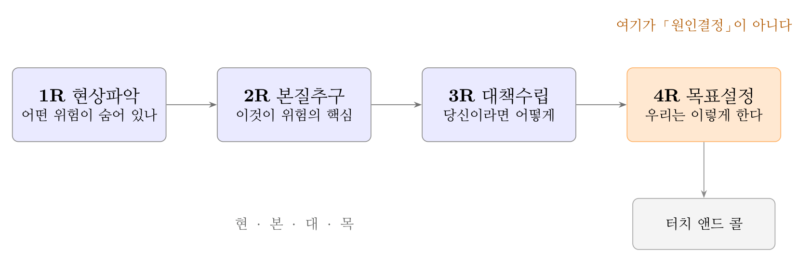
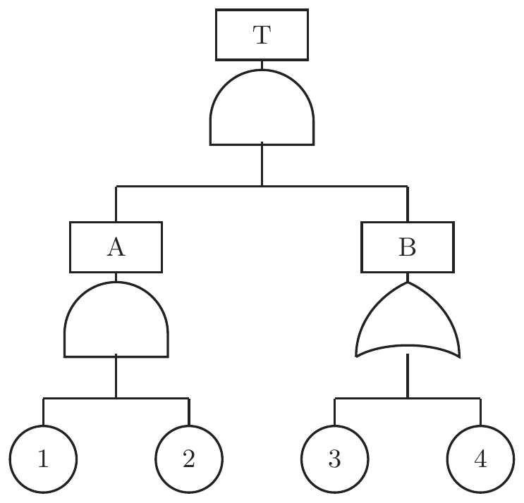
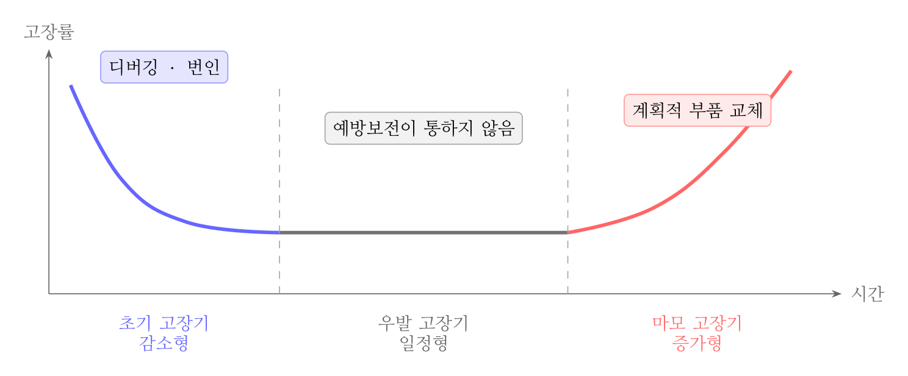
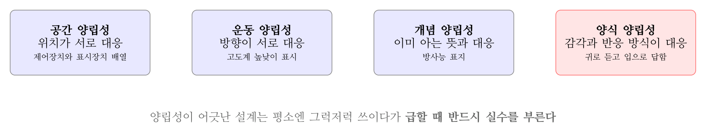
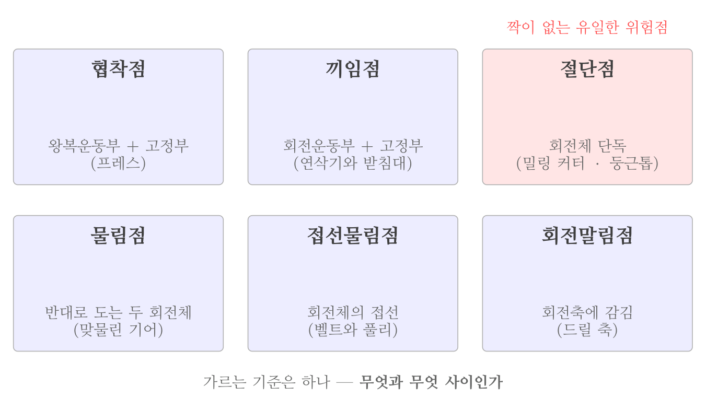
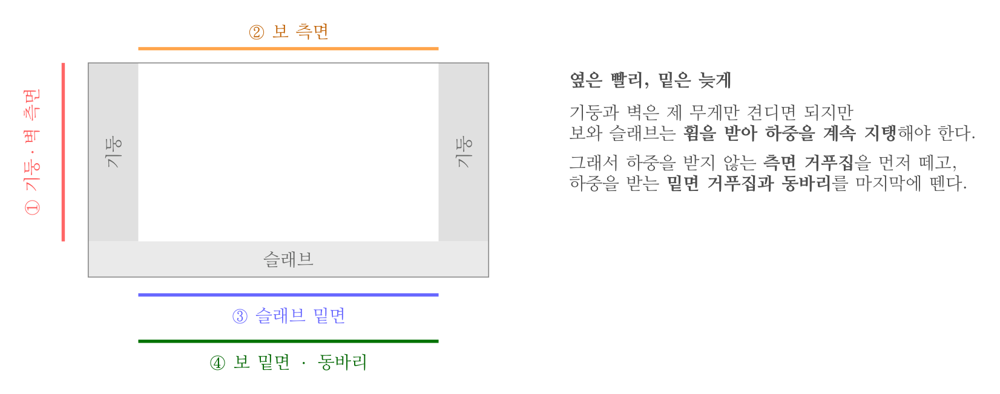

2026년 2회 · 산업안전기사 필기 CBT 기출 재배열 전사 검수본
지면(PDF)과 대조 검수용 · 수식은 KaTeX 렌더 · 총 문항
제1과목 안전관리론
001빈출도 ★☆☆난이도 2·보통개념형safe_A_2026_02_001
산업안전보건법령상 특정행위의 지시 및 사실의 고지에 사용되는 안전 ⸱ 보건표지의 색도기준으로 옳은 것은?
① 2.5G 4/10
② 5Y 8.5/12
③ 2.5PB 4/10
④ 7.5R 4/14
정답: 3
해설
「특정행위의 지시」는 지시표지이고 색은 파란색, 색도기준은 2.5PB 4/10이다.
안전보건표지의 색도기준과 용도
| 색채 | 색도기준 | 용도 | 보기 |
|---|
| 빨간색 | 7.5R 4/14 | 금지 · 경고 | 정지신호 · 유해행위 금지 |
| 노란색 | 5Y 8.5/12 | 경고 | 화학물질 취급장소 외의 위험경고 |
| 파란색 | 2.5PB 4/10 | 지시 | 보안경 착용 등 |
| 녹색 | 2.5G 4/10 | 안내 | 비상구 · 피난소 |
| 흰색 | N9.5 | 파란색·녹색의 보조색 | |
| 검은색 | N0.5 | 문자 및 빨간색·노란색의 보조색 | |
오답 분석
① 2.5G 4/10은 녹색으로 안내표지에 쓴다.
② 5Y 8.5/12는 노란색으로 경고표지에 쓴다.
④ 7.5R 4/14는 빨간색으로 금지·경고표지에 쓴다.
관련 개념 · 암기
시행규칙 별표8 — 안전보건표지의 색도기준 및 용도색이 뜻을 담는다. 빨강은 멈추게 하고, 노랑은 주의를 부르며, 파랑은 시키고, 녹색은 알려 준다.
◈ 암기 빨 7.5R · 노 5Y · 파 2.5PB · 녹 2.5G.
⚖ 근거 법령 — 산업안전보건법 시행규칙 별표 8산업안전보건법 시행규칙 시행 2026. 8. 1.
분류: — > — > 안전보건표지 색도 · 원본 2021.05.15
002빈출도 ★☆☆난이도 1·쉬움개념형safe_A_2026_02_002
인간관계의 메커니즘 중 다른 사람의 행동 양식이나 태도를 투입시키거나 다른 사람 가운데서 자기와 비슷한 것을 발견하는 것은?
정답: 3
해설
동일화(identification)다. 남의 태도를 자기 안에 들여오거나, 남에게서 자기와 닮은 점을 찾아내는 것이다.
인간관계의 메커니즘
| 메커니즘 | 뜻 | 보기 |
|---|
| 동일화 | 남의 태도를 받아들이거나 자기와 닮은 점을 찾음 | 아버지의 말투를 닮아 감 |
| 투사 | 자기 안의 것을 남에게 있는 것처럼 봄 | 자기가 미워하면서 상대가 밉다고 함 |
| 커뮤니케이션 | 말·글·몸짓으로 뜻을 주고받음 | 작업 지시 |
| 모방 | 남의 행동을 그대로 따라 함 | 선배의 작업 자세를 따라 함 |
| 암시 | 비판 없이 남의 뜻을 받아들임 | 유행을 따라 함 |
오답 분석
① 공감은 남의 감정을 함께 느끼는 것이다.
② 모방은 겉으로 드러난 행동을 그대로 따라 하는 것이다.
④ 「일체화」는 메커니즘의 이름이 아니다.
관련 개념 · 암기
인간관계의 메커니즘 다섯 가지동일화와 모방을 가르는 것은
안으로 들여오는가, 겉을 따라 하는가다.
◈ 암기 「동 · 투 · 커 · 모 · 암」.
🃏 관련 암기카드
분류: — > — > 인간관계 메커니즘 · 원본 2021.05.15
003빈출도 ★☆☆난이도 2·보통개념형safe_A_2026_02_003
산업안전보건법령상 협의체 구성 및 운영에 관한 사항으로 ( )에 알맞은 내용은?
도급인은 관계수급인 근로자가 도급인의 사업장에서 작업을 하는 경우 도급인과 수급인을 구성원으로 하는 안전 및 보건에 관한 협의체를 구성 및 운영하여야 한다. 이 협의체는 ( ) 정기적으로 회의를 개최하고 그 결과를 기록·보존해야 한다.
① 매월 1회 이상
② 2개월마다 1회
③ 3개월마다 1회
④ 6개월마다 1회
정답: 1
해설
도급인은 수급인과 함께 안전보건 협의체를 꾸리고 매월 1회 이상 회의를 연다. 한 현장에서 여러 업체가 뒤섞여 일하므로 자주 맞춰야 한다.
오답 분석
② 2개월마다라는 기준은 없다.
③ 3개월마다는 산업안전보건위원회의 정기회의 주기다.
④ 6개월마다라는 기준도 없다.
관련 개념 · 암기
안전보건규칙 제79조 — 협의체의 구성 및 운영협의체에서는
작업의 시작 시간 · 작업장 간 연락방법 · 재해발생 위험이 있는 경우의 대피방법 · 위험성평가 실시에 관한 사항 · 작업 혼재로 인한 위험성 파악과 조치를 협의한다.
◈ 암기 협의체는 매월, 산업안전보건위원회는 분기.
⚖ 근거 법령 — 산업안전보건기준에 관한 규칙 제79조산업안전보건법 시행규칙 시행 2026. 8. 1.
① 법 제64조제1항제1호에 따른 안전 및 보건에 관한 협의체(이하 이 조에서 "협의체"라 한다)는 도급인 및 그의 수급인 전원으로 구성해야 한다.
② 협의체는 다음 각 호의 사항을 협의해야 한다.
1. 작업의 시작 시간이 문항이 묻는 자리
2. 작업 또는 작업장 간의 연락방법
3. 재해발생 위험이 있는 경우 대피방법
4. 작업장에서의 법 제36조에 따른 위험성평가의 실시에 관한 사항
5. 사업주와 수급인 또는 수급인 상호 간의 연락 방법 및 작업공정의 조정
③ 협의체는 매월 1회 이상 정기적으로 회의를 개최하고 그 결과를 기록ㆍ보존해야 한다.이 문항이 묻는 자리
분류: — > — > 도급인의 안전보건협의체 · 원본 2021.05.15
004빈출도 ★☆☆난이도 1·쉬움개념형safe_A_2026_02_004
산업안전보건법령상 프레스를 사용하여 작업을 할 때 작업시작 전 점검사항으로 틀린 것은?
① 방호장치의 기능
② 언로드밸브의 기능
③ 금형 및 고정볼트 상태
④ 클러치 및 브레이크의 기능
정답: 2
해설
언로드밸브는 공기압축기의 점검사항이다. 압축기의 압력이 일정 수준에 이르면 부하를 덜어 주는 밸브라 프레스와는 상관이 없다.
오답 분석
① 방호장치의 기능은 프레스 점검사항이다.
③ 금형 및 고정볼트 상태도 점검사항이다.
④ 클러치 및 브레이크의 기능도 점검사항이다.
관련 개념 · 암기
안전보건규칙 별표3 — 프레스등의 작업시작 전 점검여섯 가지 —
클러치와 브레이크 · 크랭크축·플라이휠·슬라이드·연결봉·연결나사의 풀림 · 1행정 1정지기구와 급정지장치와 비상정지장치 · 슬라이드와 칼날 · 프레스 금형과 고정볼트 · 방호장치.
◈ 암기 언로드밸브가 보이면 공기압축기.
⚖ 근거 법령 — 산업안전보건기준에 관한 규칙 별표 3산업안전보건기준에 관한 규칙 시행 2026. 3. 2.
분류: 기계 일반 > 동력전달·통로 > 작업시작 전 점검 · 원본 2021.05.15
005빈출도 ★☆☆난이도 2·보통개념형safe_A_2026_02_005
위험예지훈련 4단계의 진행 순서를 바르게 나열한 것은?
① 목표설정→현상파악→대책수립→본질추구
② 목표설정→현상파악→본질추구→대책수립
③ 현상파악→본질추구→대책수립→목표설정
④ 현상파악→본질추구→목표설정→대책수립
정답: 3
해설
현상파악 → 본질추구 → 대책수립 → 목표설정이다. 무엇이 위험한지 꺼내고, 그중 핵심을 고르고, 대책을 내고, 오늘 지킬 것 하나를 정한다.

위험예지훈련 4라운드 — 마지막은 목표설정이다
오답 분석
① 목표설정이 맨 앞에 올 수 없다. 무엇이 위험한지부터 알아야 한다.
② 목표설정이 맨 앞에 올 수 없다.
④ 목표설정과 대책수립의 자리가 바뀌었다. 대책을 낸 뒤 그중 하나를 목표로 삼는다.
관련 개념 · 암기
위험예지훈련 4라운드4R 뒤에
터치 앤드 콜로 다짐하며 마무리한다.
◈ 암기 「현 · 본 · 대 · 목」.
🃏 관련 암기카드
분류: 무재해운동 > 무재해·위험예지 > 위험예지훈련 · 원본 2021.08.14
006빈출도 ★☆☆난이도 2·보통개념형safe_A_2026_02_006
방진마스크의 사용 조건 중 산소농도의 최소기준으로 옳은 것은?
① 16%
② 18%
③ 21%
④ 23.5%
정답: 2
해설
산소농도 18 [%] 이상인 곳에서만 쓸 수 있다. 방진마스크는 공기 중의 먼지를 거를 뿐 산소를 만들지 못한다. 18 [%] 미만이면 송기마스크나 공기호흡기를 써야 한다.
오답 분석
① 16 [%]는 이미 산소결핍 상태다.
③ 21 [%]는 정상 공기의 산소농도로, 최소기준이 아니다.
④ 23.5 [%]는 적정공기의 상한이다.
관련 개념 · 암기
방진마스크·방독마스크의 사용 한계밀폐공간
적정공기는 산소
18 [%] 이상 23.5 [%] 미만, 탄산가스 1.5 [%] 미만, 일산화탄소 30 [ppm] 미만, 황화수소 10 [ppm] 미만이다.
◈ 암기 산소가 없으면 거르는 마스크는 무용지물 — 18 [%] 미만이면 송기마스크.
🃏 관련 암기카드
분류: 보호구 > 호흡·눈·귀 > 보호구 · 원본 2020.06.06
007빈출도 ★☆☆난이도 1·쉬움개념형safe_A_2026_02_007
억측판단이 발생하는 배경으로 볼 수 없는 것은?
① 정보가 불확실할 때
② 타인의 의견에 동조할 때
③ 희망적인 관측이 있을 때
④ 과거에 성공한 경험이 있을 때
정답: 2
해설
타인의 의견에 동조하는 것은 동조행동이다. 억측판단은 스스로 「괜찮겠지」 하고 넘겨짚는 것이라 방향이 반대다.
오답 분석
① 정보가 불확실하면 빈틈을 자기 짐작으로 메운다.
③ 「이번에도 별일 없겠지」 같은 희망적 관측이 그것이다.
④ 과거에 무사했던 경험이 쌓이면 이번에도 괜찮으리라 넘겨짚는다.
관련 개념 · 암기
억측판단차단기가 내려오는데 「지금 뛰면 건널 수 있겠지」가 전형이다.
◈ 암기 배경 셋은 모두 자기 안에서 나온 판단 — 정보 불확실 · 희망적 관측 · 과거의 성공.
🃏 관련 암기카드
분류: 산업심리 > 부주의·착오 > 부주의·착오 · 원본 2022.04.24
008빈출도 ★☆☆난이도 2·보통개념형safe_A_2026_02_008
바이오리듬(생체리듬)에 관한 설명 중 틀린 것은?
① 안정기(+)와 불안정기(-)의 교차점을 위험일이라 한다.
② 감성적 리듬은 33일을 주기로 반복하며, 주의력, 예감 등과 관련되어 있다.
③ 지성적 리듬은 「I」로 표시하며 사고력과 관련이 있다.
④ 육체적 리듬은 신체적 컨디션의 율동적 발현, 즉 식욕·활동력 등과 밀접한 관계를 갖는다.
정답: 2
해설
주기가 뒤바뀌었다. 감성적 리듬은 28일, 지성적 리듬이 33일이다.
바이오리듬 세 가지
| 리듬 | 주기 | 표시 | 관련되는 것 |
|---|
| 육체적 | 23일 | P (Physical) | 식욕 · 활동력 · 지구력 |
| 감성적 | 28일 | S (Sensitivity) | 주의력 · 예감 · 기분 |
| 지성적 | 33일 | I (Intellectual) | 사고력 · 기억력 · 판단력 |
오답 분석
① 안정기와 불안정기가 바뀌는 교차점을 위험일이라 한다.
③ 지성적 리듬은 I로 표시하며 사고력과 관련된다.
④ 육체적 리듬은 식욕·활동력과 관련된다.
관련 개념 · 암기
생체리듬(biorhythm)위험일에는 평소보다 사고가 잦다고 보아 중요한 작업을 피하게 한다.
◈ 암기 육 23 · 감 28 · 지 33 — 「이삼 · 이팔 · 삼삼」.
🃏 관련 암기카드
분류: 산업심리 > 부주의·착오 > 생체리듬 · 원본 2022.03.05
009빈출도 ★☆☆난이도 1·쉬움개념형safe_A_2026_02_009
운동의 시지각(착각현상) 중 자동운동이 발생하기 쉬운 조건에 해당하지 않는 것은?
① 광점이 작은 것
② 대상이 단순한 것
③ 광의 강도가 큰 것
④ 시야의 다른 부분이 어두운 것
정답: 3
해설
빛이 약할수록 자동운동이 잘 일어난다. 강하면 위치가 또렷해 흔들려 보이지 않는다.
자동운동이 일어나기 쉬운 조건
| 조건 | 방향 | 까닭 |
|---|
| 광점의 크기 | 작을수록 | 기준으로 삼을 윤곽이 없다 |
| 빛의 강도 | 약할수록 | 위치가 또렷하지 않다 |
| 대상의 복잡함 | 단순할수록 | 견줄 것이 없다 |
| 시야의 밝기 | 어두울수록 | 주변에 기준점이 없다 |
오답 분석
① 광점이 작으면 기준 삼을 윤곽이 없어 흔들려 보인다.
② 대상이 단순하면 견줄 것이 없다.
④ 시야가 어두우면 주변에 기준점이 없다.
관련 개념 · 암기
자동운동(autokinetic movement)어두운 곳에서 작고 약한 빛 하나를 오래 바라보면 실제로는 멈춰 있는데 움직이는 것처럼 보인다. 야간 항해나 비행에서 문제가 된다.
◈ 암기 작고 · 약하고 · 단순하고 · 어두우면 흔들려 보인다.
🃏 관련 암기카드
분류: 산업심리 > 부주의·착오 > 착각현상 · 원본 2022.03.05
010빈출도 ★☆☆난이도 2·보통개념형safe_A_2026_02_010
산업안전보건법령상 산업안전보건위원회의 구성·운영에 관한 설명 중 틀린 것은?
① 정기회의는 분기마다 소집한다.
② 위원장은 위원 중에서 호선(互選)한다.
③ 근로자대표가 지명하는 명예산업안전감독관은 근로자 위원에 속한다.
④ 공사금액 100억원 이상의 건설업의 경우 산업안전보건위원회를 구성·운영해야 한다.
정답: 4
해설
건설업은 공사금액 120억원 이상(토목공사업은 150억원 이상)이어야 설치 대상이다. 100억원이 아니다.
산업안전보건위원회 설치 대상
| 업종 | 기준 | 비고 |
|---|
| 토사석 광업 · 목재 제품 제조업 등 | 상시근로자 50명 이상 | 위험업종 |
| 그 밖의 사업 | 상시근로자 100명 이상 | |
| 건설업 | 공사금액 120억원 이상 | 토목공사업은 150억원 이상 |
오답 분석
① 정기회의는 분기마다 소집한다.
② 위원장은 위원 중에서 호선한다.
③ 근로자대표가 지명하는 명예산업안전감독관은 근로자위원이다.
관련 개념 · 암기
시행령 제34조·제35조 — 산업안전보건위원회근로자위원과 사용자위원을
같은 수로 구성한다. 사용자위원에는 안전관리자·보건관리자·산업보건의가 든다.
◈ 암기 일반 100 · 위험업종 50 · 건설 120억(토목 150억).
⚖ 근거 법령 — 산업안전보건법 시행령 제34조 · 산업안전보건법 시행령 제35조산업안전보건법 시행령 시행 2026. 8. 1.
제34조(산업안전보건위원회 구성 대상) 법 제24조제1항에 따라 산업안전보건위원회를 구성해야 할 사업의 종류 및 사업장의 상시근로자 수는 별표 9와 같다.
① 산업안전보건위원회의 근로자위원은 다음 각 호의 사람으로 구성한다.
1. 근로자대표
2. 명예산업안전감독관이 위촉되어 있는 사업장의 경우 근로자대표가 지명하는 1명 이상의 명예산업안전감독관
3. 근로자대표가 지명하는 9명(근로자인 제2호의 위원이 있는 경우에는 9명에서 그 위원의 수를 제외한 수를 말한다) 이내의 해당 사업장의 근로자
② 산업안전보건위원회의 사용자위원은 다음 각 호의 사람으로 구성한다. 다만, 상시근로자 50명 이상 100명 미만을 사용하는 사업장에서는 제5호에 해당하는 사람을 제외하고 구성할 수 있다.이 문항이 묻는 자리
1. 해당 사업의 대표자(같은 사업으로서 다른 지역에 사업장이 있는 경우에는 그 사업장의 안전보건관리책임자를 말한다. 이하 같다)
2. 안전관리자(제16조제1항에 따라 안전관리자를 두어야 하는 사업장으로 한정하되, 안전관리자의 업무를 안전관리전문기관에 위탁한 사업장의 경우에는 그 안전관리전문기관의 해당 사업장 담당자를 말한다) 1명
3. 보건관리자(제20조제1항에 따라 보건관리자를 두어야 하는 사업장으로 한정하되, 보건관리자의 업무를 보건관리전문기관에 위탁한 사업장의 경우에는 그 보건관리전문기관의 해당 사업장 담당자를 말한다) 1명
4. 산업보건의(해당 사업장에 선임되어 있는 경우로 한정한다)
5. 해당 사업의 대표자가 지명하는 9명 이내의 해당 사업장 부서의 장
③ 제1항 및 제2항에도 불구하고 법 제69조제1항에 따른 건설공사도급인(이하 "건설공사도급인"이라 한다)이 법 제64조제1항제1호에 따른 안전 및 보건에 관한 협의체를 구성한 경우에는 산업안전보건위원회의 위원을 다음 각 호의 사람을 포함하여 구성할 수 있다.
1. 근로자위원: 도급 또는 하도급 사업을 포함한 전체 사업의 근로자대표, 명예산업안전감독관 및 근로자대표가 지명하는 해당 사업장의 근로자
2. 사용자위원: 도급인 대표자, 관계수급인의 각 대표자 및 안전관리자
분류: 안전보건관리 체제 > 선임·자격 > 산업안전보건위원회 · 원본 2022.03.05
011빈출도 ★☆☆난이도 2·보통개념형safe_A_2026_02_011
기업내의 계층별 교육훈련 중 주로 관리감독자를 교육대상자로 하며 작업을 가르치는 능력, 작업방법을 개선하는 기능 등을 교육 내용으로 하는 기업 내 정형교육은?
① TWI(Training Within Industry)
② ATT(American Telephone Telegram)
③ MTP(Management Training Program)
④ ATP(Administration Training Program)
정답: 1
해설
TWI다. 관리감독자를 대상으로 작업방법(JMT) · 인간관계(JRT) · 작업지도(JIT) · 작업안전(JST) 네 가지를 가르친다.
계층별 정형교육
| 과정 | 대상 | 시간 | 내용 |
|---|
| TWI | 관리감독자 | 10시간 | 작업방법·인간관계·작업지도·작업안전 |
| MTP | 중간관리자 | 40시간 | 관리의 기본과 조직 운영 |
| ATT | 대상 제한 없음 | 1차 40시간 | 계획적 감독과 인사관계 |
| ATP(CCS) | 최고경영자 | 주 4시간씩 8주 | 정책 수립과 조직 운영 |
오답 분석
② ATT는 대상에 제한이 없는 과정이다.
③ MTP는 중간관리자를 대상으로 한다.
④ ATP는 최고경영자를 대상으로 한다.
관련 개념 · 암기
기업 내 정형교육TWI의 JST에서 S는
Safety다. Standardization으로 바꿔 놓는 함정이 자주 나온다.
◈ 암기 TWI 네 과정 — 「방 · 인 · 지 · 안」.
🃏 관련 암기카드
분류: 안전보건관리 체제 > 선임·자격 > 정형교육 · 원본 2022.03.05
012빈출도 ★☆☆난이도 1·쉬움개념형safe_A_2026_02_012
타일러(Tyler)의 교육과정 중 학습경험선정의 원리에 해당하는 것은?
① 기회의 원리
② 계속성의 원리
③ 계열성의 원리
④ 통합성의 원리
정답: 1
해설
타일러는 교육과정을 선정과 조직으로 나누었다. 기회의 원리는 목표에 이르는 경험을 실제로 해 볼 기회를 주는가를 따지므로 선정 쪽이다.
오답 분석
② 계속성의 원리는 조직 쪽 — 같은 내용을 되풀이해 다룬다.
③ 계열성의 원리도 조직 쪽 — 갈수록 깊고 넓게 다룬다.
④ 통합성의 원리도 조직 쪽 — 여러 내용을 서로 이어 다룬다.
관련 개념 · 암기
타일러의 교육과정 구성 원리선정은 기회·만족·가능성·다목적 달성·다경험·다성과, 조직은 계속성·계열성·통합성이다.
◈ 암기 계속 · 계열 · 통합 셋만 조직, 나머지는 모두 선정.
🃏 관련 암기카드
분류: 안전보건교육 > 교육계획·평가 > 교육과정 구성 · 원본 2022.03.05
013빈출도 ★☆☆난이도 2·보통개념형safe_A_2026_02_013
다음과 같은 경우 산업재해기록ㆍ분류 기준에 따라 분류한 재해의 발생형태로 옳은 것은?
재해자가 전도로 인하여 기계의 동력전달부위 등에 협착되어 신체의 일부가 절단되었다.
정답: 2
해설
협착이다. 전도는 계기(起因), 절단은 결과이며 신체에 직접 힘이 작용한 사고의 유형이 발생형태다.
이 사고를 나누어 보면
| 구분 | 내용 | |
|---|
| 기인물 | 기계 | 재해를 일으킨 물건 |
| 가해물 | 동력전달부위 | 직접 사람을 다치게 한 것 |
| 발생형태 | 협착 | 끼임 · 이 문항 |
| 상해의 종류 | 절단 | 몸이 입은 결과 |
| 전도 | 협착에 이르게 한 앞선 사고 | |
오답 분석
① 전도는 협착에 이르게 한 앞선 사고다.
③ 충돌은 부딪친 경우에 쓴다.
④ 절단은 발생형태가 아니라 상해의 종류다.
관련 개념 · 암기
재해의 발생형태한 사고에 여러 낱말이 겹칠 때에는 「신체에 직접 힘이 작용한 마지막 순간」을 본다 —
넘어져서(전도) 끼였고(협착) 그 결과 잘렸다(절단)이므로 발생형태는 협착이다.
◈ 암기 끼이면 협착.
🃏 관련 암기카드
분류: — > — > 재해의 발생형태 · 원본 2013.06.02
014빈출도 ★☆☆난이도 2·보통개념형safe_A_2026_02_014
산업안전보건법령상 명시된 타워크레인을 사용하는 작업에서 신호업무를 하는 작업 시 특별교육 대상 작업별 교육 내용이 아닌 것은? (단, 그 밖에 안전ㆍ보건관리에 필요한 사항은 제외한다.)
① 신호방법 및 요령에 관한 사항
② 걸고리ㆍ와이어로프 점검에 관한 사항
③ 화물의 취급 및 안전작업방법에 관한 사항
④ 인양물이 적재될 지반의 조건, 인양하중, 풍압 등이 인양물과 타워크레인에 미치는 영향
정답: 2
해설
걸고리·와이어로프 점검은 운전자·설치해체 작업자가 할 일이다. 신호수는 손짓과 무전으로 크레인을 이끄는 사람이라 교육 내용이 다르다.
오답 분석
① 신호방법과 요령은 신호업무의 핵심 내용이다.
③ 화물의 취급과 안전작업방법도 포함된다.
④ 지반 조건·인양하중·풍압이 미치는 영향도 포함된다.
관련 개념 · 암기
시행규칙 별표5 — 특별교육 대상 작업별 교육내용특별교육 대상은
39가지 유해·위험작업이며, 교육시간은 원칙적으로
16시간 이상(단기간·간헐적 작업은 2시간 이상)이다.
◈ 암기 신호수는 신호를 배우고, 점검은 운전자가 한다.
⚖ 근거 법령 — 산업안전보건법 시행규칙 별표 5산업안전보건법 시행규칙 시행 2026. 8. 1.
분류: 안전보건교육 > 법정 교육시간 > 특별교육 · 원본 2021.08.14
015빈출도 ★☆☆난이도 1·쉬움개념형safe_A_2026_02_015
강의식 교육지도에서 가장 많은 시간을 소비하는 단계는?
정답: 2
해설
강의식은 제시(전개)에 가장 오래 쓴다. 반대로 토의식은 적용에 가장 오래 쓴다.
교육방법 4단계의 시간 배분
| 단계 | 하는 일 | 강의식 | 토의식 |
|---|
| 도입 | 마음의 준비를 시킴 | 5분 | 5분 |
| 제시 | 내용을 알려 줌 | 40분 | 10분 |
| 적용 | 해 보게 함 | 10분 | 40분 |
| 확인 | 알았는지 살핌 | 5분 | 5분 |
오답 분석
① 도입은 마음의 준비를 시키는 짧은 단계다.
③ 적용에 가장 오래 쓰는 것은 토의식이다.
④ 확인은 마무리 단계로 짧다.
관련 개념 · 암기
교육방법의 4단계같은 4단계라도
강의식은 제시, 토의식은 적용에 무게가 실린다.
◈ 암기 「도 · 제 · 적 · 확」 — 강의식은 제시, 토의식은 적용.
🃏 관련 암기카드
분류: 안전보건교육 > 교육계획·평가 > 교육방법의 4단계 · 원본 2021.08.14
016빈출도 ★☆☆난이도 2·보통개념형safe_A_2026_02_016
안전점검을 점검시기에 따라 구분할 때 다음에서 설명하는 안전점검은?
작업담당자 또는 해당 관리감독자가 맡고 있는 공정의 설비, 기계, 공구 등을 매일 작업 전 또는 작업 중에 일상적으로 실시하는 안전점검
① 정기점검
② 수시점검
③ 특별점검
④ 임시점검
정답: 2
해설
수시점검(일상점검)이다. 작업 전·중·후에 작업자 자신이 눈으로 살피는 점검이다.
점검시기에 따른 안전점검
| 종류 | 언제 | 누가 | 보기 |
|---|
| 수시(일상) | 작업 전·중·후 | 작업자 자신 | 기계 외관·소음 확인 |
| 정기 | 일정 주기마다 | 관리자·전문가 | 월 1회 설비 점검 |
| 특별 | 기계를 새로 설치·변경했을 때, 천재지변 뒤 | 관리자·전문가 | 태풍 뒤 비계 점검 |
| 임시 | 이상을 발견했을 때 그때그때 | 발견한 사람 | 진동이 커진 설비 |
오답 분석
① 정기점검은 일정 주기마다 관리자가 한다.
③ 특별점검은 설비 변경이나 천재지변 뒤에 한다.
④ 임시점검은 이상을 발견했을 때 한다.
관련 개념 · 암기
안전점검의 종류점검이
평가나 처벌의 도구가 되면 현장이 숨긴다. 「찾아내되 벌하지 않는다」가 안전점검이 작동하는 조건이다.
◈ 암기 「수 · 정 · 특 · 임」.
🃏 관련 암기카드
분류: 안전점검·인증 > 안전점검 > 안전점검의 종류 · 원본 2022.03.05
017빈출도 ★☆☆난이도 1·쉬움개념형safe_A_2026_02_017
재해원인을 직접원인과 간접원인으로 분류할 때 직접원인에 해당하는 것은?
① 물적 원인
② 교육적 원인
③ 정신적 원인
④ 관리적 원인
정답: 1
해설
직접원인은 불안전한 행동(인적 원인)과 불안전한 상태(물적 원인) 둘뿐이다. 나머지는 그 뒤에 있는 간접원인이다.
재해 원인의 분류
| 갈래 | 종류 | 보기 |
|---|
| 직접원인 | 불안전한 행동 (인적) | 보호구 미착용 · 안전장치 무효화 |
| 직접원인 | 불안전한 상태 (물적) | 방호장치 고장 · 작업환경 불량 |
| 간접원인 | 기술적 원인 | 설계 불량 · 점검 미비 |
| 간접원인 | 교육적 원인 | 안전지식 부족 · 훈련 미흡 |
| 간접원인 | 관리적 원인 | 안전관리조직 결함 · 규정 미비 |
| 간접원인 | 신체적·정신적 원인 | 피로 · 질병 · 태만 |
오답 분석
② 교육적 원인은 간접원인이다.
③ 정신적 원인도 간접원인이다.
④ 관리적 원인도 간접원인이다.
관련 개념 · 암기
재해의 직접원인과 간접원인하인리히는 직접원인 가운데
불안전한 행동 88 [%], 불안전한 상태 10 [%], 불가항력 2 [%]로 보았다.
◈ 암기 직접원인은 「행동」과 「상태」 둘뿐.
🃏 관련 암기카드
분류: 재해조사 및 분석 > 재해 발생 형태 > 재해 원인 · 원본 2022.04.24
018빈출도 ★★☆난이도 1·쉬움개념형safe_A_2026_02_018
산업현장에서 재해 발생 시 조치 순서로 옳은 것은?
① 긴급처리 → 재해조사 → 원인분석 → 대책수립
② 긴급처리 → 원인분석 → 대책수립 → 재해조사
③ 재해조사 → 원인분석 → 대책수립 → 긴급처리
④ 재해조사 → 대책수립 → 원인분석 → 긴급처리
정답: 1
해설
긴급처리 → 재해조사 → 원인분석 → 대책수립 → 대책실시 → 평가다. 사람을 살리는 일이 먼저이고, 원인을 캐는 것은 그다음이다.
오답 분석
② 재해조사 없이 원인을 분석할 수 없다.
③ 긴급처리보다 조사를 앞세울 수 없다. 2차 재해가 난다.
④ 순서가 완전히 뒤집혔다.
관련 개념 · 암기
재해 발생 시 조치 순서긴급처리는
기계 정지 → 피재자 구출 → 응급조치 → 통보 → 2차 재해 방지 → 현장 보존 순으로 한다.
위험원을 없애기 전에 구조하러 들어가면 구조자도 당한다.
◈ 암기 「긴 · 조 · 원 · 대 · 실 · 평」 — 사람이 먼저.
🃏 관련 암기카드
분류: 재해조사 및 분석 > 재해조사·통계 > 재해 발생 시 조치 · 원본 2017.03.05 · 2022.03.05
019빈출도 ★☆☆난이도 1·쉬움개념형safe_A_2026_02_019
재해조사에 관한 설명으로 틀린 것은?
① 조사목적에 무관한 조사는 피한다.
② 조사는 현장을 정리한 후에 실시한다.
③ 목격자나 현장 책임자의 진술을 듣는다.
④ 조사자는 객관적이고 공정한 입장을 취해야 한다.
정답: 2
해설
현장을 정리하면 증거가 사라진다. 재해조사는 현장이 보존된 상태에서 되도록 빨리해야 한다.
오답 분석
① 목적과 무관한 조사는 시간만 쓴다.
③ 목격자와 현장 책임자의 진술을 듣는다.
④ 조사자는 객관적이고 공정해야 한다.
관련 개념 · 암기
재해조사의 원칙재해조사의 목적은
책임 추궁이 아니라 같은 재해의 재발 방지다. 책임을 묻는 자리가 되면 진술이 닫힌다.
◈ 암기 현장 보존 · 신속 · 객관 · 재발 방지.
🃏 관련 암기카드
분류: 재해조사 및 분석 > 재해조사·통계 > 재해조사 · 원본 2021.05.15
020빈출도 ★☆☆난이도 3·어려움계산형safe_A_2026_02_020
도수율이 24.5이고, 강도율이 1.15인 사업장에서 한 근로자가 입사하여 퇴직할 때까지의 근로손실일수는?
① 2.45일
② 115일
③ 215일
④ 245일
정답: 2
해설
한 근로자가 평생 일하는 시간을 10만 시간으로 본다. 강도율은 1,000시간 기준이므로 100배 하면 된다. $\text{환산강도율} = 1.15 \times 100 = 115$ 일이다.
환산 지표 — 평생 10만 시간 기준
| 지표 | 계산 | 뜻 |
|---|
| 환산강도율 | 강도율 × 100 | 평생 잃는 근로손실일수 |
| 환산도수율 | 도수율 ÷ 10 | 평생 겪는 재해 건수 |

도수율과 강도율 — 곱하는 수가 다르다
오답 분석
① 2.45는 도수율을 10으로 나눈 환산도수율이다.
③ 215·245는 계산과 맞지 않는다.
④ 245는 도수율에 10을 곱한 값이다.
관련 개념 · 암기
환산강도율과 환산도수율강도율은 1,000시간 기준이라 10만 시간으로 바꾸면
100배, 도수율은 100만 시간 기준이라
10분의 1이 된다.
◈ 암기 강도율은 곱하고(×100), 도수율은 나눈다(÷10).
🃏 관련 암기카드
분류: 재해조사 및 분석 > 재해율 계산 > 환산강도율 · 원본 2021.05.15
제2과목 인간공학 및 시스템안전공학
021빈출도 ★☆☆난이도 2·보통공식형safe_A_2026_02_021
FT도에서 시스템의 신뢰도는 얼마인가? (단, 모든 부품의 발생확률은 0.1이다.)

① 0.0033
② 0.0062
③ 0.9981
④ 0.9936
정답: 3
해설
정상사상의 발생확률을 구한 뒤 1에서 빼면 신뢰도다. 부품마다 0.1이므로 AND 게이트는 곱하고 OR 게이트는 $1 - ( 1 - q_{1} ) ( 1 - q_{2} )$로 묶어 올라간다. 이 FT 에서는 정상사상 확률이 0.0019이므로 신뢰도는 0.9981이다.
오답 분석
① 0.0033은 신뢰도가 아니라 고장확률 쪽 값이다.
② 0.0062 도 고장확률 쪽 값이다.
④ 0.9936은 게이트를 잘못 묶었을 때 나온다.
관련 개념 · 암기
FT의 정상사상 확률과 신뢰도AND는 곱하고 OR는 여집합으로 묶는다. $R = 1 - P ( T )$로 마무리한다.
◈ 암기 고장확률을 먼저 구하고 1에서 뺀다.
🃏 관련 암기카드
분류: 결함수분석 > 컷셋·확률 > FT 신뢰도 계산 · 원본 2021.05.15
022빈출도 ★★☆난이도 1·쉬움개념형safe_A_2026_02_022
인간의 위치 동작에 있어 눈으로 보지 않고 손을 수평면상에서 움직이는 경우 짧은 거리는 지나치고, 긴 거리는 못 미치는 경향이 있는데 이를 무엇이라고 하는가?
① 사정효과(range effect)
② 반응효과(reaction effect)
③ 간격효과(distance effect)
④ 손동작효과(hand action effect)
정답: 1
해설
사정효과(range effect)다. 눈으로 보지 않고 손을 움직이면 짧은 거리는 지나치고 긴 거리는 못 미친다. 몸이 평균 거리 쪽으로 끌려가기 때문이다.
오답 분석
② 「반응효과」라는 용어는 없다.
③ 「간격효과」도 이 현상의 이름이 아니다.
④ 「손동작효과」라는 용어도 없다.
관련 개념 · 암기
사정효과(range effect)계기판을 보지 않고 조작해야 하는 자리라면,
촉각 부호화로 손끝이 위치를 알아채게 만들어야 한다.
◈ 암기 짧으면 넘고 길면 모자란다 — 평균 쪽으로 끌린다.
🃏 관련 암기카드
분류: 결함수분석 > FTA 기호·구조 > 맹목 위치동작 · 원본 2015.05.31 · 2021.03.07
023빈출도 ★☆☆난이도 2·보통개념형safe_A_2026_02_023
컷셋(Cut Sets)과 최소 패스셋(Minimal Path Sets)의 정의로 옳은 것은?
① 컷셋은 시스템 고장을 유발시키는 필요 최소한의 고장들의 집합이며, 최소 패스셋은 시스템의 신뢰성을 표시한다.
② 컷셋은 시스템 고장을 유발시키는 기본고장들의 집합이며, 최소 패스셋은 시스템의 불신뢰도를 표시한다.
③ 컷셋은 그 속에 포함되어 있는 모든 기본 사상이 일어났을 때 정상사상을 일으키는 기본사상의 집합이며, 최소 패스셋은 시스템의 신뢰성을 표시한다.
④ 컷셋은 그 속에 포함되어 있는 모든 기본 사상이 일어났을 때 정상사상을 일으키는 기본사상의 집합이며, 최소 패스셋은 시스템의 성공을 유발하는 기본사상의 집합이다.
정답: 3
해설
컷셋은 그 안의 기본사상이 모두 일어나면 정상사상이 생기는 집합이고, 최소 패스셋은 그것들이 모두 일어나지 않으면 정상사상이 생기지 않는 집합이라 시스템의 신뢰성을 나타낸다.
컷셋과 패스셋
| 구분 | 뜻 | 무엇을 나타내나 |
|---|
| 컷셋 | 모두 일어나면 정상사상이 생기는 집합 | 시스템의 위험성 |
| 최소 컷셋 | 더 줄일 수 없는 컷셋 | 취약점 — 작을수록 위험 |
| 패스셋 | 모두 일어나지 않으면 정상사상이 안 생기는 집합 | 시스템의 안전성 |
| 최소 패스셋 | 더 줄일 수 없는 패스셋 | 신뢰성 |
오답 분석
① 「필요 최소한의 고장들」은 최소 컷셋의 정의이지 컷셋의 정의가 아니다.
② 최소 패스셋은 불신뢰도가 아니라 신뢰성을 나타낸다.
④ 패스셋을 「성공을 유발하는 집합」이라 하면 뜻이 어긋난다. 그것들이 일어나지 않아야 시스템이 버틴다.
관련 개념 · 암기
컷셋(Cut Set)과 패스셋(Path Set)최소 컷셋의
크기가 작을수록 그 시스템은 취약하다. 하나만 무너져도 끝나는 자리가 있다는 뜻이기 때문이다.
◈ 암기 컷셋은 위험성, 패스셋은 안전성.
🃏 관련 암기카드
분류: 결함수분석 > FTA 기호·구조 > 컷셋과 패스셋 · 원본 2021.03.07
024빈출도 ★☆☆난이도 1·쉬움개념형safe_A_2026_02_024
부품 배치의 원칙 중 기능적으로 관련된 부품들을 모아서 배치한다는 원칙은?
① 중요성의 원칙
② 사용 빈도의 원칙
③ 사용 순서의 원칙
④ 기능별 배치의 원칙
정답: 4
해설
기능별 배치의 원칙이다. 이름 그대로 기능이 서로 이어지는 것끼리 모아 둔다.
부품 배치의 네 원칙
| 원칙 | 무엇을 따지나 | 보기 |
|---|
| 중요성 | 목표 달성에 얼마나 결정적인가 | 비상정지 버튼을 손 닿는 곳에 |
| 사용 빈도 | 얼마나 자주 쓰는가 | 자주 쓰는 스위치를 가까이 |
| 기능별 배치 | 기능이 서로 이어지는가 | 계측기끼리 · 조작기끼리 모음 |
| 사용 순서 | 쓰는 차례가 정해져 있는가 | 점화 → 가속 → 제동 순으로 |
오답 분석
① 중요성의 원칙은 목표 달성에 얼마나 결정적인지를 따진다.
② 사용 빈도의 원칙은 얼마나 자주 쓰는지를 따진다.
③ 사용 순서의 원칙은 쓰는 차례를 따진다.
관련 개념 · 암기
부품 배치의 네 원칙앞의 둘(중요성·사용 빈도)은
어디에 둘 것인가를 정하고, 뒤의 둘(기능별·사용 순서)은
어떻게 묶을 것인가를 정한다.
◈ 암기 「중 · 빈 · 기 · 순」.
🃏 관련 암기카드
분류: — > — > 부품 배치의 원칙 · 원본 2022.03.05
025빈출도 ★☆☆난이도 1·쉬움개념형safe_A_2026_02_025
부품고장이 발생하여도 기계가 추후 보수 될 때까지 안전한 기능을 유지할 수 있도록 하는 기능은?
① fail - soft
② fail - active
③ fail - operational
④ fail – passive
정답: 3
해설
Fail Operational이다. 고장이 나도 다음 점검 때까지 기능을 유지 한다. 셋 중 안전 수준이 가장 높다.
Fail Safe의 기능적 분류
| 종류 | 고장이 나면 | 보기 |
|---|
| Fail Passive | 곧바로 정지한다 | 가장 흔한 방식 |
| Fail Active | 경보를 내며 잠시 운전을 잇는다 | 경보 뒤 자동 정지 |
| Fail Operational | 다음 점검까지 기능을 유지 | 다경로 구조 · 여러 대 병렬 |
오답 분석
① 「fail - soft」는 이 분류에 없는 이름이다.
② Fail Active는 경보를 내며 잠시 운전을 잇는다.
④ Fail Passive는 곧바로 정지한다.
관련 개념 · 암기
Fail Safe의 기능적 분류Fail Safe는 기계의 고장,
Fool Proof는 사람의 실수를 전제한다. 무엇을 전제하는지로 가른다.
◈ 암기 Passive 정지 < Active 경보 후 잠시 < Operational 계속.
🃏 관련 암기카드
분류: — > — > Fail Safe 의 분류 · 원본 2022.03.05
026빈출도 ★☆☆난이도 2·보통개념형safe_A_2026_02_026
인간-기계 시스템의 설계 과정을 [보기]와 같이 분류할 때 다음 중 인간, 기계의 기능을 할당하는 단계는?
1단계 : 시스템의 목표와 성능명세 결정
2단계 : 시스템의 정의
3단계 : 기본 설계
4단계 : 인터페이스 설계
5단계 : 보조물 설계 혹은 편의수단 설계
6단계 : 평가
① 기본 설계
② 인터페이스 설계
③ 시스템의 목표와 성능명세 결정
④ 보조물 설계 혹은 편의수단 설계
정답: 1
해설
기본 설계(3단계)에서 사람과 기계에 각각 무엇을 맡길지 나눈다. 여기서 직무분석과 작업설계도 함께 이루어진다.
인간-기계 시스템 설계 6단계
| 단계 | 이름 | 하는 일 |
|---|
| 1 | 목표와 성능명세 결정 | 무엇을 이루려는 시스템인가 |
| 2 | 시스템의 정의 | 그 목표에 어떤 기능이 필요한가 |
| 3 | 기본 설계 | 사람과 기계에 기능을 나눔 · 직무분석 · 작업설계 |
| 4 | 인터페이스 설계 | 표시장치와 조종장치를 짬 |
| 5 | 보조물 설계 | 설명서 · 훈련도구 · 편의수단 |
| 6 | 시험과 평가 | 실제로 되는지 확인 |
오답 분석
② 인터페이스 설계는 4단계로 표시장치와 조종장치를 짠다.
③ 목표와 성능명세 결정은 1단계다.
④ 보조물 설계는 5단계다.
관련 개념 · 암기
인간-기계 시스템의 설계 6단계기능 배분의 기준은
사람이 잘하는 일과 기계가 잘하는 일이다. 사람은 판단·융통성·예외 처리에, 기계는 반복·정밀·기억·힘에 강하다.
◈ 암기 기능 배분은 3단계 기본 설계.
🃏 관련 암기카드
분류: 정보입력표시 > 표시장치·조종장치 > 인간-기계 시스템 설계 · 원본 2021.08.14
027빈출도 ★☆☆난이도 1·쉬움개념형safe_A_2026_02_027
기술개발과정에서 효율성과 위험성을 종합적으로 분석ㆍ판단할 수 있는 평가방법으로 가장 적절한 것은?
① Risk Assessment
② Risk Management
③ Safety Assessment
④ Technology Assessment
정답: 4
해설
Technology Assessment(기술개발의 종합평가)다. 기술이 가져올 효율과 위험을 함께 재어 개발 여부를 판단한다.
오답 분석
① Risk Assessment는 위험성만 재는 평가다.
② Risk Management는 위험을 관리하는 활동이다.
③ Safety Assessment는 설비의 안전성을 평가하는 것이다.
관련 개념 · 암기
Technology Assessment(기술개발의 종합평가)네 가지가 층을 이룬다 —
TA(기술 전반) → SA(설비 안전성) → RA(위험성) → RM(위험 관리).
◈ 암기 효율과 위험을 함께 보면 TA.
🃏 관련 암기카드
분류: — > — > 기술평가 · 원본 2021.08.14
028빈출도 ★☆☆난이도 1·쉬움개념형safe_A_2026_02_028
HAZOP 분석기법의 장점이 아닌 것은?
① 학습 및 적용이 쉽다.
② 기법 적용에 큰 전문성을 요구하지 않는다.
③ 짧은 시간에 저렴한 비용으로 분석이 가능하다.
④ 다양한 관점을 가진 팀 단위 수행이 가능하다.
정답: 3
해설
HAZOP은 여러 분야 전문가가 모여 공정을 하나하나 훑는 방식이라 시간과 비용이 많이 든다. 오히려 단점이다.
오답 분석
① 가이드워드를 쓰는 방식이라 배우고 적용하기가 쉽다.
② 깊은 전문성보다 팀의 경험을 모으는 것이 중요하다.
④ 여러 관점이 모인 팀 단위로 수행할 수 있다.
관련 개념 · 암기
HAZOP(위험과 운전 분석)가이드워드로 설계 의도에서 벗어난 상태를 찾아낸다 — No/Not · More/Less · As well as · Part of · Reverse · Other than.
◈ 암기 장점은 쉽고 팀으로 한다, 단점은 오래 걸리고 비싸다.
🃏 관련 암기카드
분류: 시스템 위험분석 > HAZOP·기타 > HAZOP · 원본 2022.03.05
029빈출도 ★☆☆난이도 1·쉬움개념형safe_A_2026_02_029
일반적인 시스템의 수명곡선(욕조곡선)에서 고장형태 중 증가형 고장률을 나타내는 기간으로 옳은 것은?
① 우발 고장기간
② 마모 고장기간
③ 초기 고장기간
④ Burn-in 고장기간
정답: 2
해설
마모 고장기간이다. 부품이 닳으면서 고장률이 점점 올라간다. 이 구간의 대책은 수명 전에 계획적으로 교체하는 예방보전이다.

욕조곡선 — 구간마다 대책이 다르다
오답 분석
① 우발 고장기간은 고장률이 일정한 구간이다.
③ 초기 고장기간은 고장률이 줄어드는 구간이다.
④ Burn-in은 초기 고장을 걸러내는 조치이지 기간의 이름이 아니다.
관련 개념 · 암기
욕조곡선의 세 구간구간마다 대책이 다르다 —
초기는 걸러내기(디버깅·번인), 우발은 상황 관리, 마모는 교체.
예방보전이 통하지 않는 구간은 우발 고장기라는 물음이 자주 나온다.
◈ 암기 감소 → 일정 → 증가, 증가하는 쪽이 마모.
🃏 관련 암기카드
분류: 시스템 위험분석 > PHA·FHA·FMEA > 욕조곡선 · 원본 2021.08.14
030빈출도 ★★★난이도 1·쉬움공식형safe_A_2026_02_030
어떤 설비의 시간당 고장률이 일정하다고 할 때 이 설비의 고장간격은 다음 중 어떤 확률분포를 따르는가?
① t분포
② 와이블분포
③ 지수분포
④ 아이링(Eyring)분포
정답: 3
해설
고장률이 일정하면 고장간격은 지수분포를 따른다. 욕조곡선의 우발 고장기가 이에 해당한다.
오답 분석
① t분포는 표본평균의 검정에 쓰는 분포다.
② 와이블분포는 고장률이 변하는 구간까지 아우르는 일반형이다.
④ 아이링 분포는 가속수명시험에서 스트레스와 수명의 관계를 다룬다.
관련 개념 · 암기
지수분포와 일정 고장률지수분포에서 신뢰도는 $R ( t ) = e^{-\lambda t}$이고 $\mathrm{MTBF} = 1 / \lambda$다.
평균 고장률과 평균 수명은 역수 관계다.
◈ 암기 고장률이 일정하면 지수분포, $\mathrm{MTBF} = 1 / \lambda$.
🃏 관련 암기카드
분류: 신뢰성 > 신뢰도 계산 > 고장 분포 · 원본 2013.08.18 · 2014.03.02 · 2021.05.15
031빈출도 ★★☆난이도 2·보통공식형safe_A_2026_02_031
시스템의 수명 및 신뢰성에 관한 설명으로 틀린 것은?
① 병렬설계 및 디레이팅 기술로 시스템의 신뢰성을 증가시킬 수 있다.
② 직렬시스템에서는 부품들 중 최소 수명을 갖는 부품에 의해 시스템 수명이 정해진다.
③ 수리가 가능한 시스템의 평균 수명(MTBF)은 평균 고장률(λ)과 정비례 관계가 성립한다.
④ 수리가 불가능한 구성요소로 병렬구조를 갖는 설비는 중복도가 늘어날수록 시스템 수명이 길어진다.
정답: 3
해설
$\mathrm{MTBF} = 1 / \lambda$이므로 반비례다. 고장률이 커질수록 수명은 짧아진다. 「정비례」는 방향이 거꾸로다.
오답 분석
① 병렬설계와 디레이팅은 신뢰성을 높이는 대표적 방법이다.
② 직렬은 가장 먼저 죽는 부품이 전체 수명을 정한다.
④ 병렬은 중복도가 늘수록 수명이 길어진다.
관련 개념 · 암기
MTBF와 고장률의 관계디레이팅(derating)은 부품을 정격보다 낮은 부하로 쓰는 것이다. 여유를 두면 덜 상하므로 수명이 늘어난다.
◈ 암기 $\mathrm{MTBF} = 1 / \lambda$ — 반비례.
🃏 관련 암기카드
분류: 신뢰성 > 신뢰도 계산 > 신뢰성 지표 · 원본 2018.04.28 · 2021.03.07
032빈출도 ★☆☆난이도 1·쉬움개념형safe_A_2026_02_032
일반적으로 인체측정치의 최대집단치를 기준으로 설계하는 것은?
① 선반의 높이
② 공구의 크기
③ 출입문의 크기
④ 안내 데스크의 높이
정답: 3
해설
출입문은 가장 큰 사람이 지날 수 있어야 하므로 최대집단치(95 %tile)로 잡는다.
인체측정치 응용의 세 원칙
| 원칙 | 기준 | 보기 |
|---|
| 최대집단치 | 95 %tile — 큰 사람 기준 | 출입문 · 통로 · 비상구 · 침대 길이 |
| 최소집단치 | 5 %tile — 작은 사람 기준 | 선반 높이 · 조작 버튼까지의 거리 |
| 조절식 | 5~95 %tile을 담게 | 의자 높이 · 자동차 시트 · 책상 |
오답 분석
① 선반의 높이는 작은 사람도 닿아야 하므로 최소집단치다.
② 공구의 크기는 조절식이나 여러 치수로 만든다.
④ 안내 데스크의 높이는 평균치 설계에 가깝다.
관련 개념 · 암기
인체계측 자료의 응용원칙우선순위는
조절식 > 극단치 > 평균치다. 평균치 설계는 어쩔 수 없을 때만 쓴다.
◈ 암기 닿아야 하면 작은 사람(5), 지나가야 하면 큰 사람(95).
🃏 관련 암기카드
분류: 인간계측·작업공간 > 인체계측 > 인체계측 응용 · 원본 2021.08.14
033빈출도 ★☆☆난이도 1·쉬움개념형safe_A_2026_02_033
일반적으로 은행의 접수대 높이나 공원의 벤치를 설계할 때 가장 적합한 인체 측정 자료의 응용원칙은?
① 조절식 설계
② 평균치를 이용한 설계
③ 최대치수를 이용한 설계
④ 최소치수를 이용한 설계
정답: 2
해설
평균치 설계다. 불특정 다수가 잠깐씩 쓰고 조절할 수도 없는 시설이라, 평균에 맞추는 것이 그나마 나은 선택이다.
오답 분석
① 조절식이 가장 좋지만 은행 접수대나 공원 벤치는 조절할 수 없다.
③ 최대치수는 출입문처럼 「가장 큰 사람이 지나야 하는」 경우에 쓴다.
④ 최소치수는 선반처럼 「가장 작은 사람도 닿아야 하는」 경우에 쓴다.
관련 개념 · 암기
인체계측 자료의 응용원칙평균치 설계는
아무에게도 꼭 맞지 않는다는 약점이 있다. 그래서 조절식이 가능하면 언제나 조절식이 낫다.
◈ 암기 조절이 안 되고 여럿이 잠깐 쓰면 평균치.
🃏 관련 암기카드
분류: 인간계측·작업공간 > 인체계측 > 인체계측 응용 · 원본 2021.05.15
034빈출도 ★☆☆난이도 2·보통공식형safe_A_2026_02_034
태양광이 내리쬐지 않는 옥내의 습구흑구 온도지수(WBGT) 산출 식은?
① 0.6 × 자연습구온도 + 0.3 × 흑구온도
② 0.7 × 자연습구온도 + 0.3 × 흑구온도
③ 0.6 × 자연습구온도 + 0.4 × 흑구온도
④ 0.7 × 자연습구온도 + 0.4 × 흑구온도
정답: 2
해설
옥내 또는 햇볕 없는 옥외는 $0.7 \times \text{자연습구} + 0.3 \times \text{흑구}$다. 두 계수의 합이 1이 되어야 한다.

WBGT 두 가지 식 — 햇볕이 있으면 건구온도가 들어온다
오답 분석
① 계수의 합이 0.9로 1이 되지 않는다.
③ 계수의 합이 1이 되지 않는다.
④ 0.7 + 0.4 = 1.1로 1을 넘는다.
관련 개념 · 암기
습구흑구온도지수(WBGT)햇볕이 있는 옥외는 $0.7 \times \text{자연습구} + 0.2 \times \text{흑구} + 0.1 \times \text{건구}$다.
◈ 암기 자연습구 0.7은 언제나 같고, 건구 0.1은 햇볕이 있을 때만.
🃏 관련 암기카드
분류: 작업환경관리 > 온열·조명·진동 > WBGT · 원본 2022.03.05
035빈출도 ★☆☆난이도 1·쉬움개념형safe_A_2026_02_035
양립성의 종류가 아닌 것은?
① 개념의 양립성
② 감성의 양립성
③ 운동의 양립성
④ 공간의 양립성
정답: 2
해설
양립성은 공간 · 운동 · 개념 · 양식 네 가지다. 「감성의 양립성」은 없다.

양립성 네 가지 — 어긋나면 급할 때 반드시 실수한다
오답 분석
① 개념의 양립성은 이미 아는 뜻과 맞는가를 따진다.
③ 운동의 양립성은 조작 방향과 결과의 방향이 맞는가를 따진다.
④ 공간의 양립성은 위치가 서로 대응하는가를 따진다.
관련 개념 · 암기
양립성의 네 가지양립성이 어긋난 설계는 평소에는 그럭저럭 쓰이다가
급할 때 반드시 실수를 부른다. 이것이 양립성이 안전의 문제인 까닭이다.
◈ 암기 「공 · 운 · 개 · 양」 — 감성은 없다.
🃏 관련 암기카드
분류: 정보입력표시 > 표시장치·조종장치 > 양립성 · 원본 2022.03.05
036빈출도 ★☆☆난이도 1·쉬움개념형safe_A_2026_02_036
FTA에 대한 설명으로 가장 거리가 먼 것은?
① 정성적 분석만 가능
② 하향식(top-down) 방법
③ 복잡하고 대형화된 시스템에 활용
④ 논리게이트를 이용하여 도해적으로 표현하여 분석하는 방법
정답: 1
해설
FTA는 각 사상의 확률을 넣으면 정량적 분석도 된다. 「정성적 분석만」이 틀렸다.
오답 분석
② 정상사상에서 원인으로 내려가는 하향식이 맞다.
③ 복잡하고 대형화된 시스템에 쓰는 것이 맞다.
④ 논리게이트로 도해해 분석하는 것이 맞다.
관련 개념 · 암기
FTA와 FMEA의 대비FTA는 연역적·하향식·정량 가능,
FMEA는 귀납적·상향식·정성 중심이다. 1962년 벨연구소가 미니트맨 미사일 발사 제어를 분석하며 만들었다.
◈ 암기 FTA는 위에서 아래로, 정량도 된다.
🃏 관련 암기카드
분류: 정보입력표시 > 표시장치·조종장치 > FTA 의 특징 · 원본 2021.08.14
037빈출도 ★☆☆난이도 3·어려움계산형safe_A_2026_02_037
발생 확률이 동일한 64가지의 대안이 있을 때 얻을 수 잇는 총 정보량은?
① 6bit
② 16bit
③ 32bit
④ 64bit
정답: 1
해설
$H = \log_{2} n = \log_{2} 64 = 6$ [bit]다. 2를 몇 번 곱해야 64가 되는가를 묻는 것과 같다.
대안 수와 정보량
| 대안 수 | 정보량 | 비고 |
|---|
| 2 | 1 [bit] | 켜짐/꺼짐 |
| 4 | 2 [bit] | |
| 8 | 3 [bit] | |
| 16 | 4 [bit] | |
| 32 | 5 [bit] | |
| 64 | 6 [bit] | 이 문항 |
오답 분석
② 16 [bit]는 대안이 65,536가지일 때다.
③ 32 [bit]는 훨씬 큰 값이다.
④ 64 [bit]는 대안 수를 그대로 적은 것이다.
관련 개념 · 암기
정보량 $H = \log_{2} n$확률이 서로 다르면 $H = \sum p_{i} \log_{2} ( 1 / p_{i} )$로 구한다.
◈ 암기 2를 몇 번 곱해야 그 수가 되는가 — 64는 6번.
🃏 관련 암기카드
분류: 정보입력표시 > 정보이론 > 정보량 · 원본 2021.08.14
038빈출도 ★☆☆난이도 3·어려움계산형safe_A_2026_02_038
작업장의 설비 3대에서 각각 80 dB, 86 dB, 78 dB의 소음이 발생되고 있을 때 작업장의 음압 수준은?
① 약 81.3 dB
② 약 85.5 dB
③ 약 87.5 dB
④ 약 90.3 dB
정답: 3
해설
데시벨은 로그 값이라 그냥 더하지 못한다. 세기로 되돌려 더한 뒤 다시 데시벨로 바꾼다. $L = 10 \log ( 10^{8.0} + 10^{8.6} + 10^{7.8} ) \fallingdotseq 87.5$ [dB]다.
오답 분석
① 81.3은 계산과 맞지 않는다.
② 85.5는 세 값을 단순 평균했을 때에 가깝다.
④ 90.3은 세 값을 그대로 더했을 때 쪽에 가깝다.
관련 개념 · 암기
소음의 합성같은 크기의 소음 두 개를 합치면 3 [dB] 만 오른다. 소음원이 두 배가 되어도 체감은 크게 달라지지 않는다는 뜻이며, 반대로
가장 큰 소음원 하나를 줄이는 것이 가장 효과가 크다.
◈ 암기 데시벨은 더하지 말고 세기로 되돌려 더한다.
🃏 관련 암기카드
분류: 정보입력표시 > 청각·경보 > 소음의 합성 · 원본 2021.05.15
039빈출도 ★☆☆난이도 1·쉬움개념형safe_A_2026_02_039
감각저장으로부터 정보를 작업기억으로 전달하기 위한 코드화 분류에 해당되지 않는 것은?
① 시각코드
② 촉각코드
③ 음성코드
④ 의미코드
정답: 2
해설
작업기억으로 넘길 때의 코드는 시각 · 음성 · 의미 셋이다. 촉각코드는 여기에 들지 않는다.
오답 분석
① 시각코드는 모양 그대로 담아 두는 방식이다.
③ 음성코드는 소리로 바꿔 되뇌는 방식이다.
④ 의미코드는 뜻으로 바꿔 담는 방식이다.
관련 개념 · 암기
작업기억의 세 가지 코드작업기억은 용량이
7 ± 2 청크로 제한되고 보유 시간이 수십 초로 짧다. 그래서 작업 지시는
한 번에 서너 가지로 나누고 적어 주는 편이 낫다.
◈ 암기 「시 · 음 · 의」 — 촉각은 없다.
🃏 관련 암기카드
분류: 정보입력표시 > 시각 > 작업기억의 코드화 · 원본 2021.05.15
040빈출도 ★☆☆난이도 1·쉬움개념형safe_A_2026_02_040
화학설비에 대한 안정성 평가 중 정성적 평가방법의 주요 진단 항목으로 볼 수 없는 것은?
① 건조물
② 취급물질
③ 입지 조건
④ 공장 내 배치
정답: 2
해설
취급물질은 정량적 평가의 항목이다. 양을 재어 점수를 매기기 때문이다.
화학설비 안전성 평가의 항목
| 구분 | 항목 | 성격 |
|---|
| 정성적 평가 | 입지 조건 · 공장 내 배치 · 건조물 · 소방설비 | 있는가 없는가 |
| 정성적 평가 | 원재료 · 중간재 · 제품 · 공정 · 수송과 저장 | 절차가 갖춰졌는가 |
| 정량적 평가 | 취급물질 · 용량 · 온도 · 압력 · 조작 | 점수를 매긴다 |
오답 분석
① 건조물은 정성적 평가의 설계 관계 항목이다.
③ 입지 조건도 정성적 평가 항목이다.
④ 공장 내 배치도 정성적 평가 항목이다.
관련 개념 · 암기
화학설비의 안전성 평가6단계는
관계 자료의 정비 → 정성적 평가 → 정량적 평가 → 안전대책 → 재해정보에 의한 재평가 → FTA에 의한 재평가다.
◈ 암기 정량적 평가 다섯은 「물 · 용 · 온 · 압 · 조」.
🃏 관련 암기카드
분류: 정보입력표시 > 표시장치·조종장치 > 안전성 평가 · 원본 2021.03.07
제3과목 기계위험방지기술
041빈출도 ★★☆난이도 1·쉬움개념형safe_A_2026_02_041
플레이너 작업시의 안전대책이 아닌 것은?
① 베드 위에 다른 물건을 올려놓지 않는다.
② 바이트는 되도록 짧게 나오도록 설치한다.
③ 프레임 내의 피트(pit)에는 뚜껑을 설치한다.
④ 칩 브레이커를 사용하여 칩이 길게 되도록 한다.
정답: 4
해설
칩 브레이커는 칩을 짧게 끊는 장치다. 「길게 되도록」은 반대다. 길게 이어진 칩은 뜨겁고 날카로워 손을 베거나 몸에 감긴다.
오답 분석
① 베드는 왕복하므로 물건을 올려 두면 튕겨 나간다.
② 바이트를 길게 빼면 진동과 부러짐이 생긴다.
③ 피트에 뚜껑을 덮어 빠짐을 막는다.
관련 개념 · 암기
플레이너 작업의 안전대책플레이너는
테이블이 왕복하고 셰이퍼는
바이트가 왕복한다. 둘 다 왕복 구간에 사람이 서지 않도록
방책을 세운다.
◈ 암기 칩 브레이커는 칩을 끊는다 — 길게 만드는 장치가 아니다.
🃏 관련 암기카드
분류: 공작기계 > 선반·밀링·드릴 > 플레이너 안전 · 원본 2016.08.21 · 2022.03.05
042빈출도 ★☆☆난이도 2·보통개념형safe_A_2026_02_042
다음 연삭숫돌의 파괴원인 중 가장 적절하지 않은 것은?
① 숫돌의 회전속도가 너무 빠른 경우
② 플랜지의 직경이 숫돌 직경의 1/3이상으로 고정된 경우
③ 숫돌 자체에 균열 및 파손이 있는 경우
④ 숫돌에 과대한 충격을 준 경우
정답: 2
해설
플랜지 지름이 숫돌의 1/3 이상인 것은 법이 요구하는 정상 상태다. 오히려 1/3 미만이면 숫돌을 제대로 붙들지 못해 깨진다.

연삭기의 숫자 묶음
오답 분석
① 규정 속도를 넘기면 원심력으로 깨진다.
③ 숫돌 자체의 균열은 대표적 파괴 원인이다.
④ 충격을 주면 보이지 않는 금이 생긴다.
관련 개념 · 암기
연삭숫돌의 파괴 원인파괴 원인 —
속도 초과 · 균열 · 충격 · 편심 · 무리한 측면 연삭 · 플랜지 부족. 일반 숫돌은
측면 연삭용이 아니다.
◈ 암기 플랜지는 1/3 이상이 정상 — 모자라야 위험.
🃏 관련 암기카드
분류: 공작기계 > 연삭기 > 연삭숫돌 파괴 · 원본 2021.08.14
043빈출도 ★☆☆난이도 2·보통개념형safe_A_2026_02_043
밀링 작업 시 안전 수칙에 관한 설명으로 틀린 것은?
① 칩은 기계를 정지시킨 다음에 브러시 등으로 제거한다.
② 일감 또는 부속장치 등을 설치하거나 제거할 때는 반드시 기계를 정지시키고 작업한다.
③ 면장갑을 반드시 끼고 작업한다.
④ 강력 절삭을 할 때는 일감을 바이스에 깊게 물린다.
정답: 3
해설
회전하는 기계에서 장갑은 금물이다. 커터에 장갑이 물리면 손이 통째로 딸려 들어간다.
오답 분석
① 칩은 기계를 세운 뒤 브러시로 치운다. 맨손이나 걸레는 안 된다.
② 일감·부속장치를 다룰 때는 기계를 세운다.
④ 강력 절삭일수록 깊게 물려야 튕겨 나가지 않는다.
관련 개념 · 암기
공작기계 공통 안전수칙세 가지가 공통이다 —
회전 중 칩 제거 금지 · 회전 중 측정 금지 · 장갑 착용 금지.
◈ 암기 회전 기계에는 장갑을 끼지 않는다.
🃏 관련 암기카드
분류: 공작기계 > 선반·밀링·드릴 > 밀링 안전 · 원본 2021.08.14
044빈출도 ★☆☆난이도 2·보통개념형safe_A_2026_02_044
양중기 과부하방지장치의 일반적인 공통사항에 대한 설명 중 부적합한 것은?
① 과부하방지장치와 타 방호장치는 기능에 서로 장애를 주지 않도록 부착할 수 있는 구조이어야 한다.
② 방호장치의 기능을 변형 또는 보수할 때 양중기의 기능도 동시에 정지할 수 있는 구조이어야 한다.
③ 과부하방지장치에는 정상동작상태의 녹색램프와 과부하 시 경고 표시를 할 수 있는 붉은색램프와 경보음을 발하는 장치 등을 갖추어야 하며, 양중기 운전자가 확인할 수 있는 위치에 설치해야 한다.
④ 과부하방지장치 작동 시 경보음과 경보램프가 작동되어야 하며 양중기는 작동이 되지 않아야 한다. 다만, 크레인은 과부하 상태 해지를 위하여 권상된 만큼 권하시킬 수 있다.
정답: 2
해설
방호장치를 손보는 동안 양중기가 함께 멈추면 매달린 화물을 내릴 수 없어 더 위험해진다. 조문은 임의로 무력화할 수 없는 구조를 요구한다.
오답 분석
① 다른 방호장치와 서로 기능을 방해하지 않아야 한다.
③ 녹색·붉은색 램프와 경보음을 운전자가 볼 수 있는 곳에 둔다.
④ 작동하면 경보와 함께 서되, 크레인은 매달린 화물을 내릴 수 있어야 한다.
관련 개념 · 암기
방호장치 안전인증 고시 — 양중기 과부하방지장치설계의 바탕은 「
고장이나 보수 중에도 사람이 더 위험해지지 않게」다. 선택지 ④의 「권하 허용」이 바로 그 발상이다.
◈ 암기 과부하방지장치는 정격하중을 넘으면 작동.
🃏 관련 암기카드
분류: 기계 일반 > 위험점·방호 > 과부하방지장치 · 원본 2022.03.05
045빈출도 ★★☆난이도 1·쉬움개념형safe_A_2026_02_045
다음 중 프레스기에 사용되는 방호장치에 있어 원칙적으로 급정지 기구가 부착되어야만 사용할 수 있는 방식은?
① 양수조작식
② 손쳐내기식
③ 가드식
④ 수인식
정답: 1
해설
양수조작식은 손을 떼면 슬라이드가 즉시 멈춰야 하므로 급정지 기구가 있어야 쓸 수 있다. 광전자식도 마찬가지다.
프레스 방호장치와 급정지 기구
| 방호장치 | 급정지 기구 | 쓸 수 있는 클러치 |
|---|
| 양수조작식 | 필요 | 마찰식만 |
| 광전자식 | 필요 | 마찰식만 |
| 손쳐내기식 | 불필요 | 확동식도 가능 |
| 수인식 | 불필요 | 확동식도 가능 |
| 게이트 가드식 | 불필요 | 확동식도 가능 |
오답 분석
② 손쳐내기식은 막대가 손을 밀어내므로 급정지가 필요 없다.
③ 가드식은 문이 닫혀야 작동하므로 급정지가 필요 없다.
④ 수인식은 끈이 손을 당겨 빼내므로 급정지가 필요 없다.
관련 개념 · 암기
프레스 방호장치의 종류확동식(핀) 클러치는 한 번 물리면 1행정을 끝까지 마쳐 도중에 멈출 수 없다. 그래서 급정지가 필요한 양수조작식·광전자식을 쓸 수 없다.
◈ 암기 급정지가 필요한 것은 양수조작식과 광전자식.
🃏 관련 암기카드
분류: 기계 일반 > 위험점·방호 > 프레스 방호장치 · 원본 2017.05.07 · 2021.08.14
046빈출도 ★☆☆난이도 2·보통개념형safe_A_2026_02_046
산업안전보건법령상 프레스를 제외한 사출성형기ㆍ주형조형기 및 형단조기 등에 관한 안전조치 사항으로 틀린 것은?
① 근로자의 신체 일부가 말려들어갈 우려가 있는 경우에는 양수조작식 방호장치를 설치하여 사용한다.
② 게이트 가드식 방호장치를 설치할 경우에는 연동구조를 적용하여 문을 닫지 않아도 동작할 수 있도록 한다.
③ 사출성형기의 전면에 작업용 발판을 설치할 경우 근로자가 쉽게 미끄러지지 않는 구조여야 한다.
④ 기계의 히터 등의 가열 부위, 감전 우려가 있는 부위에는 방호덮개를 설치하여 사용한다.
정답: 2
해설
게이트 가드식은 문을 닫아야만 동작하는 것이 연동구조다. 「닫지 않아도 동작」하면 방호장치가 아니다.
오답 분석
① 말려들 우려가 있으면 양수조작식을 쓴다.
③ 작업용 발판은 미끄러지지 않는 구조여야 한다.
④ 가열 부위와 감전 우려 부위에는 방호덮개를 설치한다.
관련 개념 · 암기
안전보건규칙 제121조 — 사출성형기 등의 방호장치연동(interlock)은 「조건이 갖춰져야 움직인다」는 뜻이다. 문이 열려 있으면 아예 동작하지 않게 만드는 것이 핵심이다.
◈ 암기 연동은 「닫아야 돈다」 — 반대로 적으면 오답.
⚖ 근거 법령 — 산업안전보건기준에 관한 규칙 제121조산업안전보건기준에 관한 규칙 시행 2026. 3. 2.
① 사업주는 사출성형기(射出成形機)ㆍ주형조형기(鑄型造形機) 및 형단조기(프레스등은 제외한다) 등에 근로자의 신체 일부가 말려들어갈 우려가 있는 경우 게이트가드(gate guard) 또는 양수조작식 등에 의한 방호장치, 그 밖에 필요한 방호 조치를 하여야 한다.
② 제1항의 게이트가드는 닫지 아니하면 기계가 작동되지 아니하는 연동구조(連動構造)여야 한다.이 문항이 묻는 자리
③ 사업주는 제1항에 따른 기계의 히터 등의 가열 부위 또는 감전 우려가 있는 부위에는 방호덮개를 설치하는 등 필요한 안전 조치를 하여야 한다.
분류: 기계 일반 > 소성가공 > 사출성형기 안전 · 원본 2021.08.14
047빈출도 ★☆☆난이도 1·쉬움개념형safe_A_2026_02_047
강자성체를 자화하여 표면의 누설자속을 검출하는 비파괴 검사 방법은?
① 방사선 투과 시험
② 인장시험
③ 초음파 탐상 시험
④ 자분 탐상 시험
정답: 4
해설
자분탐상(MT)이다. 자기를 걸면 표면의 결함에서 자속이 새어 나오고, 거기에 자분이 모여 결함이 드러난다. 강자성체(철·니켈 등) 에만 쓸 수 있다.
비파괴검사의 갈래
| 기법 | 무엇을 보나 | 적용 대상 | 한계 |
|---|
| MT 자분 | 표면·표면 바로 밑 | 강자성체만 | 비자성체 불가 |
| PT 침투 | 표면에 열린 결함 | 재질 무관 | 속은 못 본다 |
| ET 와전류 | 표면·표면 바로 밑 | 도체만 | 형상 제약 |
| UT 초음파 | 내부, 깊이까지 | 대부분 | 기록성 약함 |
| RT 방사선 | 내부, 필름 기록 | 대부분 | 피폭 위험 |
오답 분석
① 방사선 투과는 내부 결함을 필름에 기록한다.
② 인장시험은 시편을 잡아당겨 끊는 파괴시험이다.
③ 초음파 탐상은 반사파로 내부 결함의 깊이를 알아낸다.
관련 개념 · 암기
자분탐상시험(MT)표면 계열 셋을 가른다 —
MT는 자석에 붙는 것, ET는 전기가 통하는 것, PT는 아무거나(열린 결함만).
◈ 암기 자화해서 새어 나오는 자속을 보면 MT.
🃏 관련 암기카드
분류: 기계 일반 > 재료·강도시험 > 비파괴검사 · 원본 2021.08.14
048빈출도 ★☆☆난이도 1·쉬움개념형safe_A_2026_02_048
회전하는 부분의 접선방향으로 몰려 들어갈 위험이 존재하는 점으로 주로 체인, 풀리, 벨트, 기어와 랙 등에서 형성되는 위험점은?
① 끼임점
② 협착점
③ 절단점
④ 접선물림점
정답: 4
해설
접선물림점이다. 회전체와 거기에 걸린 벨트·체인이 만나는 접선 방향으로 딸려 들어간다.

위험점 여섯 가지 — 「무엇과 무엇 사이인가」로 갈린다
오답 분석
① 끼임점은 회전운동부와 고정부 사이에서 생긴다.
② 협착점은 왕복운동부와 고정부 사이에서 생긴다.
③ 절단점은 회전체 자체나 그 돌출부에서 생긴다.
관련 개념 · 암기
기계설비의 위험점협착(왕복+고정) · 끼임(회전+고정) · 절단(회전체 단독) · 물림(회전+회전) · 접선물림(회전체의 접선) · 회전말림(축에 감김).
◈ 암기 벨트와 풀리, 체인과 스프로킷이면 접선물림.
🃏 관련 암기카드
분류: 기계 일반 > 동력전달·통로 > 위험점 · 원본 2021.08.14
049빈출도 ★☆☆난이도 1·쉬움개념형safe_A_2026_02_049
산업안전보건법령상 지게차에서 통상적으로 갖추고 있어야 하나, 마스트의 후방에서 화물이 낙하함으로써 근로자에게 위험을 미칠 우려가 없는 때에는 반드시 갖추지 않아도 되는 것은?
정답: 3
해설
백레스트는 마스트 뒤쪽으로 화물이 넘어오는 것을 막는 등받이다. 그 위험이 없으면 갖추지 않아도 된다.
오답 분석
① 전조등과 후미등은 갖추어야 한다.
② 헤드가드는 위에서 떨어지는 물건으로부터 운전자를 지킨다.
④ 포크는 화물을 받치는 기본 부분이다.
관련 개념 · 암기
안전보건규칙 제179조 — 전조등 등의 설치, 제180조·제181조헤드가드는
강도가 지게차 최대하중의 2배 값(4톤을 넘는 값은 4톤)의 등분포정하중에 견뎌야 하고, 상부틀 각 개구부의 폭 또는 길이가
16 [cm] 미만 이어야 한다.
◈ 암기 위에서 떨어지면 헤드가드, 뒤로 넘어오면 백레스트.
⚖ 근거 법령 — 산업안전보건기준에 관한 규칙 제179조산업안전보건기준에 관한 규칙 시행 2026. 3. 2.
① 사업주는 전조등과 후미등을 갖추지 아니한 지게차를 사용해서는 아니 된다. 다만, 작업을 안전하게 수행하기 위하여 필요한 조명이 확보되어 있는 장소에서 사용하는 경우에는 그러하지 아니하다. <개정 2019.1.31, 2019.12.26>
② 사업주는 지게차 작업 중 근로자와 충돌할 위험이 있는 경우에는 지게차에 후진경보기와 경광등을 설치하거나 후방감지기를 설치하는 등 후방을 확인할 수 있는 조치를 해야 한다. <신설 2019.12.26>
분류: 기계 일반 > 위험점·방호 > 지게차 안전장치 · 원본 2021.08.14
050빈출도 ★★☆난이도 3·어려움계산형safe_A_2026_02_050
프레스기의 SPM(stroke per minute)이 200이고, 클러치의 맞물림 개소수가 6인 경우 양수기동식 방호장치의 안전거리는?
① 120 mm
② 200 mm
③ 320 mm
④ 400 mm
정답: 3
해설
$D_{m} = 1.6 T_{m}$, $T_{m} = ( \dfrac{1}{\text{클러치 개소수}} + \dfrac{1}{2} ) \times \dfrac{60 {,} 000}{\mathrm{SPM}}$이다. $T_{m} = ( 1 / 6 + 1 / 2 ) \times 60 {,} 000 / 200 = 0.667 \times 300 = 200$ [ms]이므로 $D_{m} = 1.6 \times 200 = 320$ [mm]다.
오답 분석
① 120 [mm]는 계산과 맞지 않는다.
② 200 [mm]는 $T_{m}$ 값 자체다. 1.6을 곱하는 것을 잊으면 이 답을 고른다.
④ 400 [mm]는 $T_{m}$를 250 [ms]로 잡았을 때 나온다.
관련 개념 · 암기
양수기동식 방호장치의 안전거리계수
1.6은 사람 손의 접근속도
1.6 [m/s]에서 왔다. 광전자식은 $D = 1.6 ( T_{l} + T_{s} )$로 식이 다르다.
◈ 암기 $D_{m} = 1.6 T_{m}$, $T_{m}$은 (1/개소수 + 1/2) × 60,000/SPM.
🃏 관련 암기카드
분류: 기계 일반 > 위험점·방호 > 양수기동식 안전거리 · 원본 2013.06.02 · 2021.05.15
051빈출도 ★☆☆난이도 1·쉬움개념형safe_A_2026_02_051
다음 중 가공재료의 칩이나 절삭유 등이 비산되어 나오는 위험으로부터 보호하기 위한 선반의 방호장치는?
① 바이트
② 권과방지장치
③ 압력제한스위치
④ 쉴드(shield)
정답: 4
해설
쉴드(실드)다. 투명한 가림막으로 칩과 절삭유가 튀는 것을 막는다.
오답 분석
① 바이트는 깎는 공구이지 방호장치가 아니다.
② 권과방지장치는 양중기의 방호장치다.
③ 압력제한스위치는 보일러의 방호장치다.
관련 개념 · 암기
선반의 방호장치네 가지 —
칩 브레이커(칩을 끊음) · 척 커버(척을 덮음) · 쉴드(비산 방지) · 브레이크(급정지). 가늘고 긴 공작물에는
방진구를 쓴다.
◈ 암기 튀는 것을 막으면 쉴드.
🃏 관련 암기카드
분류: 기계 일반 > 위험점·방호 > 선반 방호장치 · 원본 2021.05.15
052빈출도 ★☆☆난이도 1·쉬움개념형safe_A_2026_02_052
기계설비의 안전조건인 구조의 안전화와 거리가 가장 먼 것은?
① 전압 강하에 따른 오동작 방지
② 재료의 결함 방지
③ 설계상의 결함 방지
④ 가공 결함 방지
정답: 1
해설
전압 강하에 따른 오동작 방지는 기능(제어)의 안전화다. 구조의 안전화는 재료 · 설계 · 가공 세 가지 결함을 막는 것이다.
기계설비의 안전조건 네 갈래
| 갈래 | 무엇을 다루나 | 보기 |
|---|
| 외형의 안전화 | 위험한 부분을 가림 | 덮개 · 울 · 격리 |
| 기능의 안전화 | 오동작을 막음 | 전압 강하 대비 · 인터록 · 이중 안전장치 |
| 구조의 안전화 | 재료 · 설계 · 가공 결함 | 안전율 확보 · 재료 시험 |
| 보전작업의 안전화 | 고치기 쉽게 | 점검 통로 · 부품 표준화 |
오답 분석
② 재료의 결함 방지는 구조의 안전화다.
③ 설계상의 결함 방지도 구조의 안전화다.
④ 가공 결함 방지도 구조의 안전화다.
관련 개념 · 암기
기계설비의 안전조건구조의 안전화는 「
재 · 설 · 가」 세 결함을 막는 일이다.
◈ 암기 전압·오동작이 나오면 기능의 안전화.
🃏 관련 암기카드
분류: 기계 일반 > 안전조건·안전율 > 기계의 안전조건 · 원본 2021.05.15
053빈출도 ★☆☆난이도 1·쉬움개념형safe_A_2026_02_053
산업안전보건법령상 지게차 작업시작 전 점검사항으로 거리가 가장 먼 것은?
① 제동장치 및 조종장치 기능의 이상 유무
② 압력방출장치의 작동 이상 유무
③ 바퀴의 이상 유무
④ 전조등⸱후미등⸱방향지시기 및 경보장치 기능의 이상 유무
정답: 2
해설
압력방출장치는 보일러·압력용기의 안전장치다. 지게차와는 상관이 없다.
오답 분석
① 제동장치와 조종장치 기능은 점검사항이다.
③ 바퀴의 이상 유무도 점검사항이다.
④ 전조등·후미등·방향지시기·경보장치 기능도 점검사항이다.
관련 개념 · 암기
안전보건규칙 별표3 — 지게차의 작업시작 전 점검네 가지 —
제동장치와 조종장치 · 하역장치와 유압장치 · 바퀴 · 전조등과 후미등, 방향지시기와 경보장치.
◈ 암기 보일러 장치가 섞여 있으면 그것이 답.
⚖ 근거 법령 — 산업안전보건기준에 관한 규칙 별표 3산업안전보건기준에 관한 규칙 시행 2026. 3. 2.
분류: 산업용 기계 > 보일러·압력용기 > 지게차 점검 · 원본 2021.05.15
054빈출도 ★☆☆난이도 1·쉬움개념형safe_A_2026_02_054
용접부 결함에서 전류가 과대하고, 용접속도가 너무 빨라 용접부의 일부가 홈 또는 오목하게 생기는 결함은?
정답: 1
해설
언더컷(undercut)이다. 전류가 세고 속도가 빠르면 모재가 지나치게 녹아 파이는데, 용착금속이 그 자리를 채우지 못해 홈이 남는다.
용접부의 주요 결함
| 결함 | 생김새 | 주된 원인 |
|---|
| 언더컷 | 가장자리가 파여 홈이 남음 | 전류 과대 · 속도 과속 |
| 오버랩 | 용착금속이 모재에 겹쳐 얹힘 | 전류 과소 · 속도 과소 |
| 기공 | 속에 공기 구멍이 생김 | 수분 · 기름 · 보호가스 부족 |
| 슬래그 혼입 | 찌꺼기가 속에 남음 | 청소 부족 · 다층 용접 |
| 균열 | 금이 감 | 급랭 · 구속 응력 · 수소 |
오답 분석
② 기공은 속에 공기 구멍이 생기는 결함이다.
③ 균열은 금이 가는 결함이다.
④ 융합불량은 모재와 용착금속이 붙지 않은 결함이다.
관련 개념 · 암기
용접부의 결함언더컷과 오버랩은 원인이 정반대다. 전류와 속도가 지나치면 언더컷, 모자라면 오버랩이 난다.
◈ 암기 세고 빠르면 언더컷, 약하고 느리면 오버랩.
🃏 관련 암기카드
분류: 산업용 기계 > 아세틸렌·용접 > 용접 결함 · 원본 2021.05.15
055빈출도 ★☆☆난이도 1·쉬움개념형safe_A_2026_02_055
산업안전보건법령상 컨베이어, 이송용 롤러 등을 사용하는 경우 정전⸱전압강하 등에 의한 위험을 방지하기 위하여 설치하는 안전장치는?
① 권과방지장치
② 동력전달장치
③ 과부하방지장치
④ 화물의 이탈 및 역주행 방지장치
정답: 4
해설
이탈 및 역주행 방지장치다. 경사 컨베이어가 정전으로 멈추면 짐이 한꺼번에 뒤로 쏟아지므로, 브레이크나 역회전 방지 래칫으로 막는다.
오답 분석
① 권과방지장치는 양중기의 방호장치다.
② 동력전달장치는 방호장치가 아니라 힘을 전하는 부분이다.
③ 과부하방지장치도 양중기의 방호장치다.
관련 개념 · 암기
안전보건규칙 제191조 — 이탈 등의 방지컨베이어의 방호장치 네 가지 —
비상정지장치 · 이탈 및 역주행 방지장치 · 덮개나 울 · 건널다리.
◈ 암기 정전에 짐이 뒤로 쏟아지는 것을 막는 것.
⚖ 근거 법령 — 산업안전보건기준에 관한 규칙 제191조산업안전보건기준에 관한 규칙 시행 2026. 3. 2.
제191조(이탈 등의 방지) 사업주는 컨베이어, 이송용 롤러 등(이하 "컨베이어등"이라 한다)을 사용하는 경우에는 정전ㆍ전압강하 등에 따른 화물 또는 운반구의 이탈 및 역주행을 방지하는 장치를 갖추어야 한다. 다만, 무동력상태 또는 수평상태로만 사용하여 근로자가 위험해질 우려가 없는 경우에는 그러하지 아니하다.이 문항이 묻는 자리
분류: 산업용 기계 > 롤러기·원심기 > 컨베이어 안전장치 · 원본 2021.05.15
056빈출도 ★☆☆난이도 1·쉬움개념형safe_A_2026_02_056
비파괴 검사 방법으로 틀린 것은?
① 인장 시험
② 음향 탐상 시험
③ 와류 탐상 시험
④ 초음파 탐상 시험
정답: 1
해설
인장시험은 시편을 잡아당겨 끊는 파괴시험이다. 나머지 셋은 물건을 상하지 않게 하고 살피는 비파괴검사다.
오답 분석
② 음향(음향방출) 탐상은 균열이 자라며 내는 소리를 듣는다.
③ 와류 탐상은 도체에 와전류를 걸어 결함을 읽는다.
④ 초음파 탐상은 반사파로 내부 결함을 찾는다.
관련 개념 · 암기
비파괴검사비파괴검사 —
RT · UT · MT · PT · ET · AE(음향방출) · LT(누설). 파괴시험 —
인장 · 압축 · 굽힘 · 경도 · 충격 · 피로.
◈ 암기 끊거나 부수면 파괴시험.
🃏 관련 암기카드
분류: 설비진단 > 비파괴검사 > 비파괴검사 · 원본 2021.03.07
057빈출도 ★☆☆난이도 1·쉬움개념형safe_A_2026_02_057
산업안전보건법령상에서 정한 양중기의 종류에 해당하지 않는 것은?
① 크레인[호이스트(hoist)를 포함한다]
② 도르래
③ 곤돌라
④ 승강기
정답: 2
해설
도르래는 힘의 방향을 바꾸는 부품이지 양중기가 아니다.
양중기 다섯 가지
| 종류 | 무엇인가 | 비고 |
|---|
| 크레인 | 호이스트를 포함 | 건설현장은 6개월마다 안전검사 |
| 이동식 크레인 | 바퀴로 옮겨 다니는 크레인 | |
| 리프트 | 가이드를 따라 오르내리는 운반기 | 건설용 · 산업용 · 자동차정비용 |
| 곤돌라 | 달기 발판을 매달아 오르내림 | 외벽 작업 |
| 승강기 | 사람이나 화물을 나르는 설비 | 승객용 · 화물용 · 에스컬레이터 등 |
오답 분석
① 크레인은 양중기다.
③ 곤돌라도 양중기다.
④ 승강기도 양중기다.
관련 개념 · 암기
안전보건규칙 제132조 — 양중기의 종류양중기의 방호장치는
과부하방지 · 권과방지 · 비상정지 · 제동장치이며, 승강기에는
파이널 리미트 스위치 · 속도조절기 · 출입문 인터록이 더해진다.
◈ 암기 「크 · 이 · 리 · 곤 · 승」 다섯.
⚖ 근거 법령 — 산업안전보건기준에 관한 규칙 제132조산업안전보건기준에 관한 규칙 시행 2026. 3. 2.
① 양중기란 다음 각 호의 기계를 말한다. <개정 2019.4.19>
1. 크레인[호이스트(hoist)를 포함한다]
2. 이동식 크레인
3. 리프트(이삿짐운반용 리프트의 경우에는 적재하중이 0.1톤 이상인 것으로 한정한다)
4. 곤돌라
5. 승강기
② 제1항 각 호의 기계의 뜻은 다음 각 호와 같다. <개정 2019.4.19, 2021.11.19, 2022.10.18>
1. "크레인"이란 동력을 사용하여 중량물을 매달아 상하 및 좌우(수평 또는 선회를 말한다)로 운반하는 것을 목적으로 하는 기계 또는 기계장치를 말하며, "호이스트"란 훅이나 그 밖의 달기구 등을 사용하여 화물을 권상 및 횡행 또는 권상동작만을 하여 양중하는 것을 말한다.
2. "이동식 크레인"이란 원동기를 내장하고 있는 것으로서 불특정 장소에 스스로 이동할 수 있는 크레인으로 동력을 사용하여 중량물을 매달아 상하 및 좌우(수평 또는 선회를 말한다)로 운반하는 설비로서 「건설기계관리법」을 적용 받는 기중기 또는 「자동차관리법」제3조에 따른 화물ㆍ특수자동차의 작업부에 탑재하여 화물운반 등에 사용하는 기계 또는 기계장치를 말한다.
3. "리프트"란 동력을 사용하여 사람이나 화물을 운반하는 것을 목적으로 하는 기계설비로서 다음 각 목의 것을 말한다.
가. 건설용 리프트: 동력을 사용하여 가이드레일(운반구를 지지하여 상승 및 하강 동작을 안내하는 레일)을 따라 상하로 움직이는 운반구를 매달아 사람이나 화물을 운반할 수 있는 설비 또는 이와 유사한 구조 및 성능을 가진 것으로 건설현장에서 사용하는 것
나. 산업용 리프트: 동력을 사용하여 가이드레일을 따라 상하로 움직이는 운반구를 매달아 화물을 운반할 수 있는 설비 또는 이와 유사한 구조 및 성능을 가진 것으로 건설현장 외의 장소에서 사용하는 것
다. 자동차정비용 리프트: 동력을 사용하여 가이드레일을 따라 움직이는 지지대로 자동차 등을 일정한 높이로 올리거나 내리는 구조의 리프트로서 자동차 정비에 사용하는 것
라. 이삿짐운반용 리프트: 연장 및 축소가 가능하고 끝단을 건축물 등에 지지하는 구조의 사다리형 붐에 따라 동력을 사용하여 움직이는 운반구를 매달아 화물을 운반하는 설비로서 화물자동차 등 차량 위에 탑재하여 이삿짐 운반 등에 사용하는 것
4. "곤돌라"란 달기발판 또는 운반구, 승강장치, 그 밖의 장치 및 이들에 부속된 기계부품에 의하여 구성되고, 와이어로프 또는 달기강선에 의하여 달기발판 또는 운반구가 전용 승강장치에 의하여 오르내리는 설비를 말한다.
5. "승강기"란 건축물이나 고정된 시설물에 설치되어 일정한 경로에 따라 사람이나 화물을 승강장으로 옮기는 데에 사용되는 설비로서 다음 각 목의 것을 말한다.
가. 승객용 엘리베이터: 사람의 운송에 적합하게 제조ㆍ설치된 엘리베이터
나. 승객화물용 엘리베이터: 사람의 운송과 화물 운반을 겸용하는데 적합하게 제조ㆍ설치된 엘리베이터
다. 화물용 엘리베이터: 화물 운반에 적합하게 제조ㆍ설치된 엘리베이터로서 조작자 또는 화물취급자 1명은 탑승할 수 있는 것(적재용량이 300킬로그램 미만인 것은 제외한다)
라. 소형화물용 엘리베이터: 음식물이나 서적 등 소형 화물의 운반에 적합하게 제조ㆍ설치된 엘리베이터로서 사람의 탑승이 금지된 것
마. 에스컬레이터: 일정한 경사로 또는 수평로를 따라 위ㆍ아래 또는 옆으로 움직이는 디딤판을 통해 사람이나 화물을 승강장으로 운송시키는 설비
분류: 운반·양중기 > 크레인 > 양중기의 종류 · 원본 2022.03.05
058빈출도 ★☆☆난이도 2·보통개념형safe_A_2026_02_058
산업안전보건법령상 양중기에 해당하지 않는 것은?
① 곤돌라
② 이동식 크레인
③ 적재하중 0.05톤의 이삿짐운반용 리프트 화물용 엘리베이터
④ 화물용 엘리베이터
정답: 3
해설
이삿짐운반용 리프트는 적재하중 0.1톤 이상인 것만 양중기에 든다. 0.05톤은 기준에 미치지 못한다.
오답 분석
① 곤돌라는 양중기다.
② 이동식 크레인도 양중기다.
④ 화물용 엘리베이터도 양중기다.
관련 개념 · 암기
안전보건규칙 제132조 — 양중기의 범위크레인은
정격하중 0.5톤 이상, 이삿짐운반용 리프트는
적재하중 0.1톤 이상이라야 양중기로 본다.
◈ 암기 이삿짐 리프트는 0.1톤 이상.
⚠ 주의사항 원본 문항은 가답안이 ③이었으나 확정답안에서 ③④ 모두 정답 처리되었다. 선택지 ③의 표현이 「이삿짐운반용 리프트」와 「화물용 엘리베이터」를 뒤섞어 놓아 생긴 일이다. 적재하중 0.1톤 미만은 양중기가 아니다라는 기준만 정확히 잡으면 된다.
⚖ 근거 법령 — 산업안전보건기준에 관한 규칙 제132조산업안전보건기준에 관한 규칙 시행 2026. 3. 2.
① 양중기란 다음 각 호의 기계를 말한다. <개정 2019.4.19>
1. 크레인[호이스트(hoist)를 포함한다]
2. 이동식 크레인
3. 리프트(이삿짐운반용 리프트의 경우에는 적재하중이 0.1톤 이상인 것으로 한정한다)이 문항이 묻는 자리
4. 곤돌라
5. 승강기
② 제1항 각 호의 기계의 뜻은 다음 각 호와 같다. <개정 2019.4.19, 2021.11.19, 2022.10.18>
1. "크레인"이란 동력을 사용하여 중량물을 매달아 상하 및 좌우(수평 또는 선회를 말한다)로 운반하는 것을 목적으로 하는 기계 또는 기계장치를 말하며, "호이스트"란 훅이나 그 밖의 달기구 등을 사용하여 화물을 권상 및 횡행 또는 권상동작만을 하여 양중하는 것을 말한다.
2. "이동식 크레인"이란 원동기를 내장하고 있는 것으로서 불특정 장소에 스스로 이동할 수 있는 크레인으로 동력을 사용하여 중량물을 매달아 상하 및 좌우(수평 또는 선회를 말한다)로 운반하는 설비로서 「건설기계관리법」을 적용 받는 기중기 또는 「자동차관리법」제3조에 따른 화물ㆍ특수자동차의 작업부에 탑재하여 화물운반 등에 사용하는 기계 또는 기계장치를 말한다.
3. "리프트"란 동력을 사용하여 사람이나 화물을 운반하는 것을 목적으로 하는 기계설비로서 다음 각 목의 것을 말한다.
가. 건설용 리프트: 동력을 사용하여 가이드레일(운반구를 지지하여 상승 및 하강 동작을 안내하는 레일)을 따라 상하로 움직이는 운반구를 매달아 사람이나 화물을 운반할 수 있는 설비 또는 이와 유사한 구조 및 성능을 가진 것으로 건설현장에서 사용하는 것
나. 산업용 리프트: 동력을 사용하여 가이드레일을 따라 상하로 움직이는 운반구를 매달아 화물을 운반할 수 있는 설비 또는 이와 유사한 구조 및 성능을 가진 것으로 건설현장 외의 장소에서 사용하는 것
다. 자동차정비용 리프트: 동력을 사용하여 가이드레일을 따라 움직이는 지지대로 자동차 등을 일정한 높이로 올리거나 내리는 구조의 리프트로서 자동차 정비에 사용하는 것
라. 이삿짐운반용 리프트: 연장 및 축소가 가능하고 끝단을 건축물 등에 지지하는 구조의 사다리형 붐에 따라 동력을 사용하여 움직이는 운반구를 매달아 화물을 운반하는 설비로서 화물자동차 등 차량 위에 탑재하여 이삿짐 운반 등에 사용하는 것이 문항이 묻는 자리
4. "곤돌라"란 달기발판 또는 운반구, 승강장치, 그 밖의 장치 및 이들에 부속된 기계부품에 의하여 구성되고, 와이어로프 또는 달기강선에 의하여 달기발판 또는 운반구가 전용 승강장치에 의하여 오르내리는 설비를 말한다.
5. "승강기"란 건축물이나 고정된 시설물에 설치되어 일정한 경로에 따라 사람이나 화물을 승강장으로 옮기는 데에 사용되는 설비로서 다음 각 목의 것을 말한다.
가. 승객용 엘리베이터: 사람의 운송에 적합하게 제조ㆍ설치된 엘리베이터
나. 승객화물용 엘리베이터: 사람의 운송과 화물 운반을 겸용하는데 적합하게 제조ㆍ설치된 엘리베이터
다. 화물용 엘리베이터: 화물 운반에 적합하게 제조ㆍ설치된 엘리베이터로서 조작자 또는 화물취급자 1명은 탑승할 수 있는 것(적재용량이 300킬로그램 미만인 것은 제외한다)
라. 소형화물용 엘리베이터: 음식물이나 서적 등 소형 화물의 운반에 적합하게 제조ㆍ설치된 엘리베이터로서 사람의 탑승이 금지된 것
마. 에스컬레이터: 일정한 경사로 또는 수평로를 따라 위ㆍ아래 또는 옆으로 움직이는 디딤판을 통해 사람이나 화물을 승강장으로 운송시키는 설비
분류: 운반·양중기 > 크레인 > 양중기의 범위 · 원본 2021.08.14
059빈출도 ★★☆난이도 2·보통개념형safe_A_2026_02_059
다음 중 금형 설치·해체작업의 일반적인 안전사항으로 틀린 것은?
① 고정볼트는 고정 후 가능하면 나사산이 3~4개 정도 짧게 남겨 슬라이드 면과의 사이에 협착이 발생하지 않도록 해야 한다.
② 금형 고정용 브래킷(물림판)을 고정시킬 때 고정용 브래킷은 수평이 되게 하고, 고정볼트는 수직이 되게 고정하여야 한다.
③ 금형을 설치하는 프레스의 T홈 안길이는 설치 볼트 직경 이하로 한다.
④ 금형의 설치용구는 프레스의 구조에 적합한 형태로 한다.
정답: 3
해설
T홈 안길이는 설치 볼트 지름의 2배 이상 이어야 한다. 「직경 이하」로 얕게 물리면 큰 프레스 하중에 볼트가 빠져 금형이 떨어진다.
오답 분석
① 나사산을 3~4개만 남겨 슬라이드 면과의 협착을 막는다.
② 브래킷은 수평, 고정볼트는 수직으로 고정한다.
④ 설치용구는 프레스 구조에 맞는 것을 쓴다.
관련 개념 · 암기
금형의 설치·해체·운반 안전금형 교체 중 슬라이드 아래에 몸이 들어갈 때는 반드시
안전블록을 끼운다. 전기적 잠금만으로는 오작동을 막지 못한다.
◈ 암기 T홈 안길이는 볼트 지름의 2배 이상.
🃏 관련 암기카드
분류: 프레스·전단기 > 프레스 > 금형 안전 · 원본 2018.08.19 · 2022.03.05
060빈출도 ★★☆난이도 1·쉬움개념형safe_A_2026_02_060
산업안전보건법령상 프레스의 작업 시작 전 점검 사항이 아닌 것은?
① 슬라이드 또는 칼날에 의한 위험방지 기구의 기능
② 프레스의 금형 및 고정볼트 상태
③ 전단기의 칼날 및 테이블의 상태
④ 권과방지장치 및 그 밖의 경보장치의 기능
정답: 4
해설
권과방지장치는 양중기의 방호장치다. 프레스에는 감아 올리는 부분이 없다.
오답 분석
① 슬라이드 또는 칼날에 의한 위험방지 기구의 기능은 점검사항이다.
② 프레스의 금형과 고정볼트 상태도 점검사항이다.
③ 전단기의 칼날과 테이블 상태도 점검사항이다.
관련 개념 · 암기
안전보건규칙 별표3 — 프레스등의 작업시작 전 점검여섯 가지 —
클러치와 브레이크 · 크랭크축·플라이휠·슬라이드·연결봉·연결나사의 풀림 · 1행정 1정지기구와 급정지장치와 비상정지장치 · 슬라이드와 칼날 · 금형과 고정볼트 · 방호장치.
◈ 암기 권과·과부하가 보이면 양중기 쪽.
⚖ 근거 법령 — 산업안전보건기준에 관한 규칙 별표 3산업안전보건기준에 관한 규칙 시행 2026. 3. 2.
분류: 프레스·전단기 > 프레스 > 작업시작 전 점검 · 원본 2020.06.06 · 2021.08.14
제4과목 전기위험방지기술
061빈출도 ★☆☆난이도 2·보통공식형safe_A_2026_02_061
욕조나 샤워시설이 있는 욕실 또는 화장실에 콘센트가 시설되어 있다. 해당 전로에 설치된 누전차단기의 정격감도전류와 동작시간은?
① 정격감도전류 15mA 이하, 동작시간 0.01초 이하
② 정격감도전류 15mA 이하, 동작시간 0.03초 이하
③ 정격감도전류 30mA 이하, 동작시간 0.01초 이하
④ 정격감도전류 30mA 이하, 동작시간 0.03초 이하
정답: 2
해설
물기가 있는 곳은 인체 저항이 크게 떨어져 더 엄격하게 잡는다. 일반 장소의 30 [mA] 대신 15 [mA] 이하, 동작시간은 0.03초 이하다.
누전차단기의 정격감도전류
| 설치 장소 | 정격감도전류 | 동작시간 |
|---|
| 일반 장소 | 30 [mA] 이하 | 0.03초 이내 |
| 물기 있는 장소 (욕실·화장실 등) | 15 [mA] 이하 | 0.03초 이내 |
| 인체 감전보호용 | 30 [mA] 이하 | 0.03초 이내 |
오답 분석
① 동작시간 0.01초라는 기준은 없다.
③ 30 [mA]는 일반 장소의 기준이다.
④ 30 [mA]와 0.01초 둘 다 어긋난다.
관련 개념 · 암기
한국전기설비규정(KEC) 211.2.4 — 누전차단기의 시설30 [mA]·0.03초는 Dalziel의 심실세동 한계 $I = 165 / \sqrt{T}$에서 나온 값이다. 물기가 있으면 그 여유가 사라진다.
◈ 암기 일반 30, 물기 15 — 시간은 둘 다 0.03초.
🃏 관련 암기카드
분류: 감전재해 > 누전차단기 > 누전차단기 · 원본 2021.08.14
062빈출도 ★★★난이도 2·보통계산형safe_A_2026_02_062
어느 변전소에서 고장전류가 유입되었을 때 도전성 구조물과 그 부근 지표상의 점과의 사이(약 1m)의 허용접촉전압은 약 몇 V 인가? (단, 심실세동전류, 인체의 저항 1000Ω, 지표면의 저항률 150Ω⸱m, 통전시간을 1초로 한다.)
심실세동전류 I_k = 0.165 / √t [A]
정답: 3
해설
$E = ( R_{b} + 1.5 \rho_{s} ) \times I_{k}$다. $I_{k} = 0.165 / \sqrt{1} = 0.165$ [A]이므로 $E = ( 1 {,} 000 + 1.5 \times 150 ) \times 0.165 = 1 {,} 225 \times 0.165 \fallingdotseq 202$ [V]다.
오답 분석
① 164는 지표면 저항률을 빼고 계산했을 때에 가깝다.
② 186은 계수를 1.0으로 잡았을 때 나온다.
④ 228은 계수를 2.0으로 잡았을 때 나온다.
관련 개념 · 암기
허용접촉전압과 허용보폭전압접촉전압은 $1.5 \rho_{s}$(두 발이 나란히),
보폭전압은 $6 \rho_{s}$(두 발이 벌어짐)를 더한다. 보폭전압 쪽 계수가 훨씬 크다.
◈ 암기 접촉 1.5, 보폭 6 — 심실세동전류는 $0.165 / \sqrt{T}$ [A].
🃏 관련 암기카드
분류: 감전재해 > 보폭·접촉전압 > 허용접촉전압 · 원본 2013.08.18 · 2017.08.26 · 2021.05.15
063빈출도 ★★☆난이도 1·쉬움개념형safe_A_2026_02_063
지락이 생긴 경우 접촉상태에 따라 접촉전압을 제한할 필요가 있다. 인체의 접촉상태에 따른 허용접촉전압을 나타낸 것으로 다음 중 옳지 않은 것은?
① 제1종: 2.5V 이하
② 제2종: 25V 이하
③ 제3종: 35V 이하
④ 제4종: 제한 없음
정답: 3
해설
제3종은 50 [V] 이하다. 35 [V]가 아니다.
접촉상태에 따른 허용접촉전압
| 종별 | 접촉 상태 | 허용접촉전압 |
|---|
| 제1종 | 물에 젖어 있거나 인체가 계속 접촉 | 2.5 [V] 이하 |
| 제2종 | 금속제 구조물에 인체 일부가 상시 접촉 | 25 [V] 이하 |
| 제3종 | 건조한 통상의 인체 상태로 접촉 | 50 [V] 이하 |
| 제4종 | 접촉 위험이 거의 없는 상태 | 제한 없음 |
오답 분석
① 제1종은 2.5 [V] 이하가 맞다.
② 제2종은 25 [V] 이하가 맞다.
④ 제4종은 제한 없음이 맞다.
관련 개념 · 암기
인체의 접촉상태별 허용접촉전압젖을수록, 상시 접촉일수록 허용값이 낮아진다.
물기가 있으면 인체 저항이 수십 분의 일로 떨어지기 때문이다.
◈ 암기 2.5 · 25 · 50 · 제한 없음.
🃏 관련 암기카드
분류: 감전재해 > 보폭·접촉전압 > 허용접촉전압 · 원본 2015.03.08 · 2021.05.15
064빈출도 ★★☆난이도 1·쉬움개념형safe_A_2026_02_064
배전선로에 정전작업 중 단락 접지기구를 사용하는 목적으로 가장 적합한 것은?
① 통신선 유도 장해 방지
② 배전용 기계 기구의 보호
③ 배전선 통전 시 전위경도 저감
④ 혼촉 또는 오동작에 의한 감전방지
정답: 4
해설
실수로 송전되거나 다른 선과 닿아 전기가 들어와도 단락접지가 전류를 대지로 흘려 작업자를 지킨다.
오답 분석
① 통신선 유도 장해 방지는 단락접지의 목적이 아니다.
② 기계기구 보호가 아니라 사람 보호가 목적이다.
③ 전위경도 저감은 접지망 설계의 문제다.
관련 개념 · 암기
안전보건규칙 제319조 — 정전전로에서의 전기작업정전작업은 「
전기가 다시 올 수 있다」는 전제 위에 선다. 그래서 잠금·표찰로 막고, 그래도 들어올 경우를 대비해 단락접지를 건다.
◈ 암기 정전작업 5단계 — 차단 · 잠금표찰 · 방전 · 검전 · 단락접지.
⚖ 근거 법령 — 산업안전보건기준에 관한 규칙 제319조산업안전보건기준에 관한 규칙 시행 2026. 3. 2.
① 사업주는 근로자가 노출된 충전부 또는 그 부근에서 작업함으로써 감전될 우려가 있는 경우에는 작업에 들어가기 전에 해당 전로를 차단하여야 한다. 다만, 다음 각 호의 경우에는 그러하지 아니하다.
1. 생명유지장치, 비상경보설비, 폭발위험장소의 환기설비, 비상조명설비 등의 장치ㆍ설비의 가동이 중지되어 사고의 위험이 증가되는 경우
2. 기기의 설계상 또는 작동상 제한으로 전로차단이 불가능한 경우
3. 감전, 아크 등으로 인한 화상, 화재ㆍ폭발의 위험이 없는 것으로 확인된 경우
② 제1항의 전로 차단은 다음 각 호의 절차에 따라 시행하여야 한다.
1. 전기기기등에 공급되는 모든 전원을 관련 도면, 배선도 등으로 확인할 것
2. 전원을 차단한 후 각 단로기 등을 개방하고 확인할 것
3. 차단장치나 단로기 등에 잠금장치 및 꼬리표를 부착할 것
4. 개로된 전로에서 유도전압 또는 전기에너지가 축적되어 근로자에게 전기위험을 끼칠 수 있는 전기기기등은 접촉하기 전에 잔류전하를 완전히 방전시킬 것
5. 검전기를 이용하여 작업 대상 기기가 충전되었는지를 확인할 것
6. 전기기기등이 다른 노출 충전부와의 접촉, 유도 또는 예비동력원의 역송전 등으로 전압이 발생할 우려가 있는 경우에는 충분한 용량을 가진 단락 접지기구를 이용하여 접지할 것이 문항이 묻는 자리
③ 사업주는 제1항 각 호 외의 부분 본문에 따른 작업 중 또는 작업을 마친 후 전원을 공급하는 경우에는 작업에 종사하는 근로자 또는 그 인근에서 작업하거나 정전된 전기기기등(고정 설치된 것으로 한정한다)과 접촉할 우려가 있는 근로자에게 감전의 위험이 없도록 다음 각 호의 사항을 준수하여야 한다.
1. 작업기구, 단락 접지기구 등을 제거하고 전기기기등이 안전하게 통전될 수 있는지를 확인할 것
2. 모든 작업자가 작업이 완료된 전기기기등에서 떨어져 있는지를 확인할 것
3. 잠금장치와 꼬리표는 설치한 근로자가 직접 철거할 것
4. 모든 이상 유무를 확인한 후 전기기기등의 전원을 투입할 것
분류: 감전재해 > 보폭·접촉전압 > 단락접지 · 원본 2016.08.21 · 2021.05.15
065빈출도 ★☆☆난이도 2·보통개념형safe_A_2026_02_065
다음 중 누전차단기를 시설하지 않아도 되는 전로가 아닌 것은? (단, 전로는 금속제 외함을 가지는 사용전압이 50V를 초과하는 저압의 기계기구에 전기를 공급하는 전로이며, 기계기구에는 사람이 쉽게 접촉할 우려가 있다.)
① 기계기구를 건조한 장소에 시설하는 경우
② 기계기구가 고무, 합성수지, 기타 절연물로 피복된 경우
③ 대지전압 200V 이하인 기계기구를 물기가 있는 곳 이외의 곳에 시설하는 경우
④ 「전기용품 및 생활용품 안전관리법」의 적용을 받는 이중절연구조의 기계기구를 시설하는 경우
정답: 3
해설
생략할 수 있는 것은 대지전압 150 [V] 이하를 물기 없는 곳에 시설하는 경우다. 200 [V]는 이를 넘으므로 누전차단기를 달아야 한다.
오답 분석
① 건조한 장소에 시설하면 생략할 수 있다.
② 절연물로 피복된 기계기구는 생략할 수 있다.
④ 이중절연구조의 기계기구는 생략할 수 있다.
관련 개념 · 암기
안전보건규칙 제304조 — 누전차단기의 설치 예외생략의 논리는 하나다 —
누전차단기가 없어도 감전될 길이 없는 경우. 건조·절연·이중절연·비접지방식이 모두 그런 경우다.
◈ 암기 대지전압 150 [V] 이하라야 생략 — 200은 안 된다.
⚖ 근거 법령 — 산업안전보건기준에 관한 규칙 제304조산업안전보건기준에 관한 규칙 시행 2026. 3. 2.
① 사업주는 다음 각 호의 전기 기계ㆍ기구에 대하여 누전에 의한 감전위험을 방지하기 위하여 해당 전로의 정격에 적합하고 감도(전류 등에 반응하는 정도)가 양호하며 확실하게 작동하는 감전방지용 누전차단기를 설치해야 한다. <개정 2021.11.19>
1. 대지전압이 150볼트를 초과하는 이동형 또는 휴대형 전기기계ㆍ기구
2. 물 등 도전성이 높은 액체가 있는 습윤장소에서 사용하는 저압(1.5천볼트 이하 직류전압이나 1천볼트 이하의 교류전압을 말한다)용 전기기계ㆍ기구
3. 철판ㆍ철골 위 등 도전성이 높은 장소에서 사용하는 이동형 또는 휴대형 전기기계ㆍ기구
4. 임시배선의 전로가 설치되는 장소에서 사용하는 이동형 또는 휴대형 전기기계ㆍ기구
② 사업주는 제1항에 따라 감전방지용 누전차단기를 설치하기 어려운 경우에는 작업시작 전에 접지선의 연결 및 접속부 상태 등이 적합한지 확실하게 점검하여야 한다.
③ 다음 각 호의 어느 하나에 해당하는 경우에는 제1항과 제2항을 적용하지 않는다. <개정 2019.1.31, 2021.11.19>
1. 「전기용품 및 생활용품 안전관리법」이 적용되는 이중절연 또는 이와 같은 수준 이상으로 보호되는 구조로 된 전기기계ㆍ기구
2. 절연대 위 등과 같이 감전위험이 없는 장소에서 사용하는 전기기계ㆍ기구
3. 비접지방식의 전로
④ 사업주는 제1항에 따라 전기기계ㆍ기구를 사용하기 전에 해당 누전차단기의 작동상태를 점검하고 이상이 발견되면 즉시 보수하거나 교환하여야 한다.
⑤ 사업주는 제1항에 따라 설치한 누전차단기를 접속하는 경우에 다음 각 호의 사항을 준수하여야 한다.이 문항이 묻는 자리
1. 전기기계ㆍ기구에 설치되어 있는 누전차단기는 정격감도전류가 30밀리암페어 이하이고 작동시간은 0.03초 이내일 것. 다만, 정격전부하전류가 50암페어 이상인 전기기계ㆍ기구에 접속되는 누전차단기는 오작동을 방지하기 위하여 정격감도전류는 200밀리암페어 이하로, 작동시간은 0.1초 이내로 할 수 있다.
2. 분기회로 또는 전기기계ㆍ기구마다 누전차단기를 접속할 것. 다만, 평상시 누설전류가 매우 적은 소용량부하의 전로에는 분기회로에 일괄하여 접속할 수 있다.
3. 누전차단기는 배전반 또는 분전반 내에 접속하거나 꽂음접속기형 누전차단기를 콘센트에 접속하는 등 파손이나 감전사고를 방지할 수 있는 장소에 접속할 것
4. 지락보호전용 기능만 있는 누전차단기는 과전류를 차단하는 퓨즈나 차단기 등과 조합하여 접속할 것
분류: 감전재해 > 누전차단기 > 누전차단기 예외 · 원본 2021.05.15
066빈출도 ★★☆난이도 1·쉬움개념형safe_A_2026_02_066
감전 등의 재해를 예방하기 위하여 특고압용 기계·기구 주위에 관계자 외 출입을 금하도록 울타리를 설치할 때, 울타리의 높이와 울타리로부터 충전부분까지의 거리의 합이 최소 몇 m 이상이 되어야 하는가? (단, 사용전압이 35kV 이하인 특고압용 기계기구이다.)
정답: 1
해설
35 [kV] 이하이면 울타리 높이 + 충전부까지의 거리 ≥ 5 [m]다.
울타리 높이와 충전부까지 거리의 합
| 사용전압 | 합계 거리 | 비고 |
|---|
| 35 [kV] 이하 | 5 [m] 이상 | |
| 35 [kV] 초과 160 [kV] 이하 | 6 [m] 이상 | |
| 160 [kV] 초과 | 6 [m] + 초과분마다 가산 | 10 [kV] 마다 12 [cm] 씩 더한다 |
오답 분석
② 6 [m]는 35 [kV] 초과 160 [kV] 이하의 기준이다.
③ 7 [m]라는 기준은 없다.
④ 9 [m] 도 기준에 없다.
관련 개념 · 암기
특고압용 기계·기구의 울타리울타리 자체의 높이는
2 [m] 이상 이어야 하며, 지표면과 울타리 하단 사이는
15 [cm] 이하로 한다.
◈ 암기 35 [kV] 이하는 5 [m], 그 위는 6 [m].
🃏 관련 암기카드
분류: 감전재해 > 감전 방지대책 > 울타리와 충전부 거리 · 원본 2014.03.02 · 2021.03.07
067빈출도 ★☆☆난이도 3·어려움계산형safe_A_2026_02_067
폭발한계에 도달한 메탄가스가 공기에 혼합되었을 경우 착화한계전압(V)은 약 얼마인가? (단, 메탄의 착화최소에너지는 0.2mJ, 극간용량은 10pF으로 한다.)
① 6325
② 5225
③ 4135
④ 3035
정답: 1
해설
$W = \dfrac{1}{2} C V^{2}$에서 $V = \sqrt{2 W / C}$다. $V = \sqrt{2 \times 0.2 \times 10^{-3} / ( 10 \times 10^{-12} )} = \sqrt{4 \times 10^{7}} \fallingdotseq 6 {,} 325$ [V]다.
오답 분석
② 5225는 에너지를 작게 잡았을 때 나온다.
③ 4135 도 계산과 맞지 않는다.
④ 3035는 제곱근을 빼먹었을 때 쪽에 가깝다.
관련 개념 · 암기
정전기 에너지와 착화한계전압$W = \dfrac{1}{2} C V^{2} = \dfrac{1}{2} Q V$.
정전용량이 작을수록 같은 에너지를 내는 데 더 높은 전압이 필요하다.
◈ 암기 $V = \sqrt{2 W / C}$ — 단위를 [J]와 [F]로 맞춘다.
🃏 관련 암기카드
분류: 전기 일반 > 전기 기초 계산 > 착화한계전압 · 원본 2021.05.15
068빈출도 ★☆☆난이도 2·보통개념형safe_A_2026_02_068
내접압용절연장갑의 등급에 따른 최대사용전압이 틀린 것은? (단, 교류 전압은 실효값이다.)
① 등급 00 :교류 500 V
② 등급 1 :교류 7500 V
③ 등급 2 :직류 17000 V
④ 등급 3 :직류 39750 V
정답: 3
해설
등급 2의 직류 최대사용전압은 25,500 [V]다. 17,000 [V]는 등급 1의 직류값이다.
내전압용 절연장갑의 등급
| 등급 | 교류 (실효값) | 직류 | 색상 |
|---|
| 00 | 500 [V] | 750 [V] | 갈색 |
| 0 | 1,000 [V] | 1,500 [V] | 빨간색 |
| 1 | 7,500 [V] | 11,250 [V] | 흰색 |
| 2 | 17,000 [V] | 25,500 [V] | 노란색 |
| 3 | 26,500 [V] | 39,750 [V] | 녹색 |
| 4 | 36,000 [V] | 54,000 [V] | 등색 |
오답 분석
① 등급 00의 교류 500 [V]는 맞다.
② 등급 1의 교류 7,500 [V]는 맞다.
④ 등급 3의 직류 39,750 [V]는 맞다.
관련 개념 · 암기
내전압용 절연장갑의 등급별 최대사용전압직류값은 교류값의
1.5배다. 교류값만 외우면 직류는 곱해서 구할 수 있다.
◈ 암기 직류 = 교류 × 1.5. 등급 2는 17,000 → 25,500.
🃏 관련 암기카드
분류: 안전점검·인증 > 안전인증·검사 > 절연장갑 등급 · 원본 2021.05.15
069빈출도 ★☆☆난이도 2·보통개념형safe_A_2026_02_069
다음 중 0종 장소에 사용될 수 있는 방폭구조의 기호는?
① Ex ia
② Ex ib
③ Ex d
④ Ex e
정답: 1
해설
0종 장소에는 본질안전 방폭구조 ia만 쓸 수 있다. 2중 고장까지 점화되지 않음을 보장하기 때문이다.
위험장소별로 쓸 수 있는 방폭구조
| 장소 | 가스가 있는 정도 | 쓸 수 있는 구조 |
|---|
| 0종 | 계속 또는 장시간 존재 | ia뿐 |
| 1종 | 정상 운전 중 때때로 생김 | ia · ib · d · p · o · e · m · q |
| 2종 | 이상 시에만 잠깐 | 위의 것 모두 + n |
오답 분석
② ib는 1중 고장까지만 보장하므로 1종 장소부터 쓴다.
③ Ex d(내압)는 1종 장소부터 쓴다.
④ Ex e(안전증)도 1종 장소부터 쓴다.
관련 개념 · 암기
위험장소의 구분과 방폭구조ia는 2중 고장까지, ib는 1중 고장까지 안전을 보장한다. 이 한 줄이 문제 대부분을 가른다.
◈ 암기 0종은 ia뿐.
🃏 관련 암기카드
분류: 전기 방폭 > 방폭구조 > 위험장소와 방폭구조 · 원본 2021.05.15
070빈출도 ★☆☆난이도 2·보통개념형safe_A_2026_02_070
변압기의 최소 IP 등급은? (단, 유입 방폭구조의 변압기이다.)
① IP55
② IP56
③ IP65
④ IP66
정답: 4
해설
유입 방폭구조의 변압기는 IP66이 최소 등급이다. 앞자리 6은 완전 방진, 뒷자리 6은 강한 분사수에 견딤을 뜻한다.
오답 분석
① IP55는 방진·방수 등급이 모두 낮다.
② IP56은 방진 등급이 모자란다.
③ IP65는 방수 등급이 모자란다.
관련 개념 · 암기
IP 보호등급앞자리는 고체(먼지), 뒷자리는 물이다. 앞자리 5는 방진, 6은 완전 방진이며 뒷자리 5는 분사수, 6은 강한 분사수다.
◈ 암기 앞은 먼지, 뒤는 물 — 유입 변압기는 IP66.
🃏 관련 암기카드
분류: 전기 방폭 > 방폭구조 > IP 등급 · 원본 2021.03.07
071빈출도 ★☆☆난이도 2·보통개념형safe_A_2026_02_071
KS C IEC 60079-0에 따른 방폭기기에 대한 설명이다. 다음 빈칸에 들어갈 알맞은 용어는?
( ⓐ )은 EPL로 표현되며 점화원이 될 수 있는 가능성에 기초하여 기기에 부여된 보호등급이다. EPL의 등급 중 ( ⓑ )는 정상 작동, 예상된 오작동, 드문 오작동 중에 점화원이 될 수 없는 「매우 높은」 보호 등급의 기기이다.
① ⓐ Explosion Protection Level, ⓑ EPL Ga
② ⓐ Explosion Protection Level, ⓑ EPL Gc
③ ⓐ Equipment Protection Level, ⓑ EPL Ga
④ ⓐ Equipment Protection Level, ⓑ EPL Gc
정답: 3
해설
EPL은 Equipment Protection Level(기기보호등급)의 줄임말이다. 「Explosion」이 아니다. 폭발성 가스 분위기에서 보호등급이 가장 높은 것이 EPL Ga다.
오답 분석
① EPL은 Explosion이 아니라 Equipment다.
② 앞뒤 모두 어긋난다.
④ Gc는 「강화된」 보호등급으로 가장 낮은 쪽이다.
관련 개념 · 암기
기기보호등급(EPL)앞 글자는 대상 분위기 —
G(가스) · D(분진) · M(광산). 뒤 글자는 보호 수준 —
a(가장 높음) · b(높음) · c(강화된).
M 에는 c가 없다.
◈ 암기 EPL은 Equipment — Ga가 가장 높다.
🃏 관련 암기카드
분류: 전기 방폭 > 방폭구조 > 기기보호등급 · 원본 2020.09.26
072빈출도 ★★☆난이도 3·어려움계산형safe_A_2026_02_072
어떤 부도체에서 정전용량이 10pF이고, 전압이 5kV 일 때 전하량(C)은?
① 9×10-12
② 6×10-10
③ 5×10-8
④ 2×10-6
정답: 3
해설
$Q = C V = 10 \times 10^{-12} \times 5 \times 10^{3} = 5 \times 10^{-8}$ [C]다.
오답 분석
① $9 \times 10^{-12}$은 전압을 곱하지 않은 값에 가깝다.
② $6 \times 10^{-10}$은 자릿수가 어긋난다.
④ $2 \times 10^{-6}$도 자릿수가 어긋난다.
관련 개념 · 암기
정전기의 전하량과 에너지세 관계식 — $Q = CV$
· $W = \dfrac{1}{2} C V^{2}$
· $V = Q / C$. 최소발화에너지와 견주어 폭발 위험을 판단할 때 두 번째 식을 쓴다.
◈ 암기 $Q = CV$ — pF는 $10^{-12}$, kV는 $10^{3}$.
🃏 관련 암기카드
분류: 전기 일반 > 전기 기초 계산 > 정전기 전하량 · 원본 2012.05.20 · 2022.03.05
073빈출도 ★☆☆난이도 1·쉬움개념형safe_A_2026_02_073
다음 차단기는 개폐기구가 절연물의 용기 내에 일체로 조립한 것으로 과부하 및 단락사고 시에 자동적으로 전로를 차단하는 장치는?
정답: 3
해설
MCCB(배선용 차단기)다. 이름 그대로 몰드(절연물) 케이스 안에 개폐기구가 통째로 들어 있다.
차단기 — 아크를 무엇으로 끄는가
| 기호 | 소호 매질 | 전압 | 비고 |
|---|
| OCB | 기름 | 고압 | 화재 위험 |
| VCB | 진공 | 고압 | 가장 널리 쓰임 |
| GCB | SF6 가스 | 특고압 | |
| ACB | 공기 | 저압 대용량 | |
| MCCB | 몰드 케이스 | 저압 | 과부하·단락 차단 |
오답 분석
① OS(유입 개폐기)는 기름 속에서 개폐한다.
② VCB는 진공에서 아크를 끄는 고압용이다.
④ ACB는 대기 중에서 아크를 끄는 저압 대용량이다.
관련 개념 · 암기
차단기의 종류와 소호 방식MCCB는 과부하와 단락,
ELB(누전차단기)는 누전을 맡는다. 역할이 다르다.
◈ 암기 몰드 케이스면 MCCB.
🃏 관련 암기카드
분류: 전기설비 > 절연·측정 > 차단기의 종류 · 원본 2022.03.05
074빈출도 ★☆☆난이도 2·보통개념형safe_A_2026_02_074
KS C IEC 60079-0에 따른 방폭에 대한 설명으로 틀린 것은?
① 기호 「X」는 방폭기기의 특정사용조건을 나타내는 데 사용되는 인증번호의 접미사이다.
② 인화하한(LFL)과 인화상한(UFL) 사이의 범위가 클수록 폭발성 가스 분위기 형성 가능성이 크다.
③ 기기그룹에 따라 폭발성가스를 분류할 때 ⅡA의 대표 가스로 에틸렌이 있다.
④ 연면거리는 두 도전부 사이의 고체 절연물 표면을 따른 최단거리를 말한다.
정답: 3
해설
ⅡA의 대표 가스는 프로판이다. 에틸렌은 ⅡB, 수소·아세틸렌은 ⅡC다.
기기그룹과 대표 가스
| 그룹 | 대표 가스 | 최대안전틈새 | 최소점화전류비 |
|---|
| ⅡA | 프로판 | 0.9 [mm] 초과 | 0.8 초과 |
| ⅡB | 에틸렌 | 0.5~0.9 [mm] | 0.45~0.8 |
| ⅡC | 수소 · 아세틸렌 | 0.5 [mm] 미만 | 0.45 미만 |
오답 분석
① 접미사 X는 특정사용조건이 있음을 나타낸다.
② 폭발범위가 넓을수록 폭발성 분위기가 만들어지기 쉽다.
④ 연면거리는 고체 절연물 표면을 따른 최단거리가 맞다.
관련 개념 · 암기
KS C IEC 60079-0 — 기기그룹의 분류C로 갈수록 위험하다. 틈새가 좁고 적은 전류로도 불이 붙기 때문이다.
◈ 암기 ⅡA 프로판 · ⅡB 에틸렌 · ⅡC 수소·아세틸렌.
🃏 관련 암기카드
분류: 전기설비 > 절연·측정 > 방폭 기기그룹 · 원본 2022.03.05
075빈출도 ★☆☆난이도 1·쉬움개념형safe_A_2026_02_075
절연물의 절연불량 주요원인으로 거리가 먼 것은?
① 진동, 충격 등에 의한 기계적 요인
② 산화 등에 의한 화학적 요인
③ 온도상승에 의한 열적 요인
④ 정격전압에 의한 전기적 요인
정답: 4
해설
정격전압은 그 기기가 견디도록 만들어진 정상 전압이다. 절연을 상하게 하는 것은 정격을 넘는 과전압·이상전압이다.
오답 분석
① 진동과 충격은 기계적 열화 요인이다.
② 산화·흡습·부식은 화학적 열화 요인이다.
③ 온도 상승은 열적 열화 요인이다.
관련 개념 · 암기
절연물의 열화 요인네 갈래 —
기계적(진동·충격) · 화학적(산화·흡습) · 열적(온도) · 전기적(과전압·부분방전). 대개 여러 요인이 겹쳐 진행된다.
◈ 암기 정격은 정상, 과전압이 문제.
🃏 관련 암기카드
분류: 전기설비 > 절연·측정 > 절연 열화 · 원본 2021.08.14
076빈출도 ★☆☆난이도 2·보통개념형safe_A_2026_02_076
다음 설명이 나타내는 현상은?
전압이 인가된 이극 도체간의 고체 절연물 표면에 이물질이 부착되면 미소방전이 일어난다. 이 미소방전이 반복되면서 절연물 표면에 도전성 통로가 형성되는 현상이다.
① 흑연화현상
② 트래킹현상
③ 반단선현상
④ 절연이동현상
정답: 2
해설
트래킹이다. 절연물 표면에 먼지와 습기가 쌓여 미소 방전이 되풀이되면서 탄화 통로(트랙)가 생기고 결국 단락된다.
오답 분석
① 흑연화는 목재 등이 오래 가열되어 탄화되며 도전성을 띠는 현상이다.
③ 반단선은 전선의 소선 일부가 끊어져 남은 가닥에 전류가 몰려 과열되는 현상이다.
④ 「절연이동현상」이라는 용어는 없다.
관련 개념 · 암기
트래킹(tracking) 현상콘센트에 먼지가 쌓여 불이 나는
먼지 트래킹이 대표 사례다. 주기적인 청소가 실질적인 화재 예방이 된다.
◈ 암기 표면에 탄화 통로가 생기면 트래킹.
🃏 관련 암기카드
분류: 전기화재 > 전기화재·피뢰 > 전기화재 · 원본 2022.04.24
077빈출도 ★★☆난이도 3·어려움계산형safe_A_2026_02_077
3300/220V, 20kVA인 3상 변압기로부터 공급받고 있는 저압 전선로의 절연 부분의 전선과 대지 간의 절연저항의 최소값은 약 몇 Ω인가? (단, 변압기의 저압 측 중성점에 접지가 되어 있다.)
① 1240
② 2794
③ 4840
④ 8383
정답: 4
해설
누설전류는 최대공급전류의 1/2,000 이하 여야 한다. $I = 20 {,} 000 / ( \sqrt{3} \times 220 ) = 52.5$ [A]이고 상전류 기준으로 $I_{g} = 52.5 / 2 {,} 000 = 0.02625$ [A]다. $R = 220 / \sqrt{3} / 0.02625 \fallingdotseq 8 {,} 383$ [Ω]이다.
오답 분석
① 1240은 자릿수가 크게 어긋난다.
② 2794는 누설 기준을 1/1,000으로 잡았을 때 쪽에 가깝다.
③ 4840은 선간전압을 그대로 썼을 때 나온다.
관련 개념 · 암기
저압 전선로의 절연저항누설전류는 최대공급전류의 1/2,000 이하라는 조건에서 출발한다. 옴의 법칙으로 저항을 되돌려 구하면 된다.
◈ 암기 누설은 1/2,000 이하.
🃏 관련 암기카드
분류: 접지 > 접지 일반 > 절연저항 · 원본 2015.05.31 · 2021.08.14
078빈출도 ★★☆난이도 1·쉬움개념형safe_A_2026_02_078
접지 목적에 따른 분류에서 병원설비의 의료용 전기전자(MㆍE)기기와 모든 금속부분 또는 도전바닥에도 접지하여 전위를 동일하게 하기 위한 접지를 무엇이라 하는가?
① 계통 접지
② 등전위 접지
③ 노이즈방지용 접지
④ 정전기 장해방지 이용 접지
정답: 2
해설
등전위 접지다. 모든 금속부를 서로 이어 전위차를 없앤다. 전위차가 없으면 사람을 통해 전류가 흐르지 않는다.
목적에 따른 접지의 분류
| 종류 | 목적 | 보기 |
|---|
| 계통 접지 | 고압과 저압의 혼촉을 막음 | 변압기 중성점 접지 |
| 기기 접지 | 누전된 기기로부터 감전을 막음 | 금속제 외함 접지 |
| 등전위 접지 | 전위차를 없앰 | 병원 수술실 · 의료기기 |
| 노이즈방지용 접지 | 전자기 잡음을 없앰 | 통신·계측 설비 |
| 지락검출용 접지 | 보호계전기를 확실히 동작시킴 | |
오답 분석
① 계통 접지는 고압과 저압의 혼촉을 막는다.
③ 노이즈방지용 접지는 전자기 잡음을 없앤다.
④ 정전기 장해방지용 접지는 대전된 전하를 빼낸다.
관련 개념 · 암기
목적에 따른 접지의 분류감전은
전압이 높아서가 아니라 두 지점 사이에 전위차가 있어서 일어난다. 등전위 접지는 그 전제 자체를 없앤다.
◈ 암기 전위를 같게 만들면 등전위 접지.
🃏 관련 암기카드
분류: 접지 > 접지 일반 > 접지의 분류 · 원본 2016.08.21 · 2021.08.14
079빈출도 ★☆☆난이도 2·보통개념형safe_A_2026_02_079
정전기의 재해방지 대책이 아닌 것은?
① 부도체에는 도전성을 향상 또는 제전기를 설치 운영한다.
② 접촉 및 분리를 일으키는 기계적 작용으로 인한 정전기 발생을 적게 하기 위해서는 가능한 접촉 면적을 크게 하여야 한다.
③ 저항률이 1010Ω·cm 미만의 도전성 위험물의 배관유속은 7m/s 이하로 한다.
④ 생산공정에 별다른 문제가 없다면, 습도를 70%정도 유지한다.
정답: 2
해설
접촉 면적이 클수록 정전기가 많이 생긴다. 「크게 하여야 한다」는 방향이 거꾸로다.
오답 분석
① 부도체에는 도전성을 높이거나 제전기를 쓴다.
③ 도전성 위험물의 배관유속은 7 [m/s] 이하로 한다.
④ 습도를 70 [%] 안팎으로 유지하면 표면에 수분막이 생겨 전하가 빠져나간다.
관련 개념 · 암기
정전기 발생의 요인과 대책발생 5요인 —
물체의 특성 · 표면 상태 · 대전 이력 · 접촉 면적과 압력 · 분리 속도.
처음 접촉 때가 가장 크고, 나머지는 모두 「클수록·빠를수록 많다」는 방향이다.
◈ 암기 접촉 면적은 작게, 유속은 느리게, 습도는 높게.
🃏 관련 암기카드
분류: 정전기 > 정전기 발생·방전 > 정전기 대책 · 원본 2022.03.05
080빈출도 ★★☆난이도 1·쉬움개념형safe_A_2026_02_080
정전기 재해를 예방하기 위해 설치하는 제전기의 제전효율은 설치 시에 얼마 이상이 되어야 하는가?
① 40%이상
② 50%이상
③ 70%이상
④ 90%이상
정답: 4
해설
제전기를 달았으면 90 [%] 이상의 제전효율이 나와야 한다. 그 아래면 달아 놓고도 전하가 남아 위험하다.
오답 분석
① 40 [%] 로는 전하가 절반 넘게 남는다.
② 50 [%] 도 남은 전하가 방전을 일으킬 수 있다.
③ 70 [%] 도 기준에 못 미친다.
관련 개념 · 암기
제전기의 제전효율제전기는
공기를 이온화해 반대 극성 이온으로 전하를 중화한다. 종류는
전압인가식 · 자기방전식 · 방사선식이며,
부도체에도 통한다는 것이 큰 장점이다.
◈ 암기 제전효율 90 [%] 이상.
🃏 관련 암기카드
분류: 정전기 > 정전기 발생·방전 > 제전기 · 원본 2012.03.04 · 2021.08.14
제5과목 화학설비위험방지기술
081빈출도 ★☆☆난이도 1·쉬움개념형safe_A_2026_02_081
다음 중 공기 중 최소 발화에너지 값이 가장 작은 물질은?
① 에틸렌
② 아세트알데히드
③ 메탄
④ 에탄
정답: 1
해설
에틸렌이 약 0.07 [mJ]로 가장 작다. 최소발화에너지가 작다는 것은 아주 작은 불꽃에도 불이 붙는다는 뜻이다.
주요 물질의 최소발화에너지
| 물질 | MIE | 비고 |
|---|
| 이황화탄소 | 0.009 [mJ] | 가장 작다 — 유속 1 [m/s] 이하로 제한 |
| 수소 · 아세틸렌 | 0.019 [mJ] | ⅡC 그룹 |
| 에틸렌 | 0.07 [mJ] | ⅡB 그룹 — 에틸렌이 대표 |
| 에탄 | 0.25 [mJ] | |
| 메탄 | 0.28 [mJ] | |
| 아세트알데히드 | 0.36 [mJ] | |
오답 분석
② 아세트알데히드는 약 0.36 [mJ]다.
③ 메탄은 약 0.28 [mJ]다.
④ 에탄은 약 0.25 [mJ]다.
관련 개념 · 암기
최소발화에너지(MIE)MIE는
온도·압력·산소농도가 높을수록 작아지고, 화학양론 농도 부근에서 가장 작다. 사람이 느끼는 정전기 방전이 1~10 [mJ]이므로, 이 값들은
느끼지도 못하는 방전으로 불이 붙는 수준이다.
◈ 암기 작을수록 위험 — 이황화탄소 0.009 < 수소 0.019 < 에틸렌 0.07.
🃏 관련 암기카드
분류: 유해화학물질 > 물질 식별 > 최소발화에너지 · 원본 2022.04.24
082빈출도 ★★☆난이도 2·보통공식형safe_A_2026_02_082
물과의 반응으로 유독한 포스핀가스를 발생하는 것은?
① HCl
② NaCl
③ Ca3P2
④ Al(OH)3
정답: 3
해설
인화칼슘(Ca₃P₂)이다. $\mathrm{Ca}_{3} P_{2} + 6 H_{2} O \rightarrow 3 \mathrm{Ca} ( OH )_{2} + 2 PH_{3}$로 포스핀(PH₃)이 나온다. 맹독성이면서 자연발화성도 있다.
오답 분석
① HCl(염산)은 물에 녹아 산성을 띨 뿐 포스핀을 내지 않는다.
② NaCl(소금)은 물에 그냥 녹는다.
④ Al(OH)₃(수산화알루미늄)는 이미 반응이 끝난 안정한 물질이다.
관련 개념 · 암기
금수성 물질과 물의 반응 생성물금속·인화물이 물과 만나면 무엇이 나오는가를 짝으로 외운다. 그래서 이런 물질에는
물을 쓰지 않고 건조사·팽창질석으로 덮는다.
◈ 암기 인화칼슘 → 포스핀, 카바이드 → 아세틸렌, 나트륨 → 수소, 탄화알루미늄 → 메탄.
🃏 관련 암기카드
분류: 연소·폭발 > 연소 이론 > 금수성 물질 · 원본 2016.03.06 · 2022.03.05
083빈출도 ★☆☆난이도 2·보통공식형safe_A_2026_02_083
에틸알코올 1몰이 완전 연소 시 생성되는 CO2와 H2O의 몰수로 옳은 것은?
① CO2 : 1, H2O : 4
② CO2 : 2, H2O : 3
③ CO2 : 3, H2O : 2
④ CO2 : 4, H2O : 1
정답: 2
해설
에틸알코올은 $C_{2} H_{5} OH$다. $C_{2} H_{5} OH + 3 O_{2} \rightarrow 2 CO_{2} + 3 H_{2} O$이므로 CO₂ 2몰, H₂O 3몰이다. 탄소 수만큼 CO₂, 수소 수의 절반만큼 H₂O가 나온다.
오답 분석
① 탄소가 2개이므로 CO₂ 는 2몰이다.
③ 탄소가 3개가 아니다.
④ 탄소가 4개가 아니다.
관련 개념 · 암기
완전연소 반응식의 계수 맞추기$C_{n} H_{m} O_{l}$의 완전연소는 $C_{n} H_{m} O_{l} + ( n + \dfrac{m}{4} - \dfrac{l}{2} ) O_{2} \rightarrow \text{n CO}_{2} + \dfrac{m}{2} H_{2} O$다. 이 식을 알면 완전연소 조성농도 $C_{\mathrm{st}}$도 바로 구할 수 있다.
◈ 암기 CO₂ 는 탄소 수, H₂O는 수소 수의 절반.
🃏 관련 암기카드
분류: 연소·폭발 > 연소 이론 > 완전연소 반응식 · 원본 2022.03.05
084빈출도 ★★★난이도 1·쉬움개념형safe_A_2026_02_084
폭발을 기상폭발과 응상폭발로 분류할 때 기상폭발에 해당되지 않는 것은?
① 분진 폭발
② 혼합가스폭발
③ 분무폭발
④ 수증기폭발
정답: 4
해설
수증기폭발은 액체가 갑자기 기화하며 부피가 팽창하는 응상폭발이다. 화학반응 없이 상변화만으로 일어난다.
기상폭발과 응상폭발
| 갈래 | 무엇이 터지나 | 보기 |
|---|
| 기상폭발 | 기체 상태에서 화학반응 | 혼합가스 · 분진 · 분무 · 분해 · 증기운(UVCE) |
| 응상폭발 | 액체·고체의 상변화나 반응 | 수증기폭발 · 증기폭발 · 전선폭발 · 고상 간 전이 |
오답 분석
① 분진폭발은 고체 가루가 공기 중에 떠 타는 기상폭발이다.
② 혼합가스폭발은 대표적인 기상폭발이다.
③ 분무폭발은 액체 방울이 안개처럼 떠 타는 기상폭발이다.
관련 개념 · 암기
폭발의 상(相)에 따른 분류가르는 기준은
터지는 순간 그것이 기체인가다. 분진과 분무는 원래 고체·액체지만
공기 중에 떠서 기체처럼 타므로 기상폭발이다.
◈ 암기 수증기폭발만 응상 — 화학반응 없이 상변화로.
🃏 관련 암기카드
분류: 연소·폭발 > 혼합가스 계산 > 폭발의 분류 · 원본 2013.08.18 · 2017.08.26 · 2021.08.14
085빈출도 ★★☆난이도 1·쉬움개념형safe_A_2026_02_085
화염방지기의 설치에 관한 사항으로 ( )에 알맞은 것은?
사업주는 인화성 액체 및 인화성 가스를 저장·취급하는 화학설비에서 증기나 가스를 대기로 방출하는 경우에는 외부로부터의 화염을 방지하기 위하여 화염방지기를 그 설비 ( )에 설치하여야 한다.
정답: 1
해설
설비의 상단에 설치한다. 증기와 가스는 위로 올라가 통기관으로 빠져나가므로, 밖에서 들어오려는 화염을 막을 자리도 그 끝이다.
오답 분석
② 하단에는 증기가 지나가지 않는다.
③ 중앙도 방출 경로가 아니다.
④ 무게중심은 설치 위치와 무관하다.
관련 개념 · 암기
안전보건규칙 제269조 — 화염방지기의 설치원리는 내압 방폭구조와 같다.
좁은 틈(금속망·다공판)을 지나며 화염이 식어 안쪽으로 번지지 못한다.
인화점 60 [℃] 이상인 액체 탱크에는 화염방지기 대신
통기밸브를 달 수 있다.
◈ 암기 증기는 위로 간다 — 그래서 상단.
⚖ 근거 법령 — 산업안전보건기준에 관한 규칙 제269조산업안전보건기준에 관한 규칙 시행 2026. 3. 2.
① 사업주는 인화성 액체 및 인화성 가스를 저장ㆍ취급하는 화학설비에서 증기나 가스를 대기로 방출하는 경우에는 외부로부터의 화염을 방지하기 위하여 화염방지기를 그 설비 상단에 설치해야 한다. 다만, 대기로 연결된 통기관에 화염방지 기능이 있는 통기밸브가 설치되어 있거나, 인화점이 섭씨 38도 이상 60도 이하인 인화성 액체를 저장ㆍ취급할 때에 화염방지 기능을 가지는 인화방지망을 설치한 경우에는 그렇지 않다. <개정 2022.10.18>이 문항이 묻는 자리
② 사업주는 제1항의 화염방지기를 설치하는 경우에는 한국산업표준에서 정하는 화염방지장치 기준에 적합한 것을 설치하여야 하며, 항상 철저하게 보수ㆍ유지하여야 한다. <개정 2022.10.18>
분류: 연소·폭발 > 연소 이론 > 화염방지기 · 원본 2019.04.27 · 2021.08.14
086빈출도 ★★☆난이도 3·어려움계산형safe_A_2026_02_086
가연성 가스 A의 연소범위를 2.2~9.5vol% 라 할 때 가스 A의 위험도는 얼마인가?
① 2.52
② 3.32
③ 4.91
④ 5.64
정답: 2
해설
$H = \dfrac{U - L}{L} = \dfrac{9.5 - 2.2}{2.2} = \dfrac{7.3}{2.2} \fallingdotseq 3.32$다.
주요 가스의 위험도
| 가스 | 폭발범위 | 위험도 H |
|---|
| 아세틸렌 | 2.5 ~ 81 [%] | 31.4 — 가장 크다 |
| 수소 | 4 ~ 75 [%] | 17.8 |
| 이황화탄소 | 1.2 ~ 44 [%] | 35.7 |
| 프로판 | 2.1 ~ 9.5 [%] | 3.5 |
| 메탄 | 5 ~ 15 [%] | 2.0 — 작다 |
오답 분석
① 2.52는 분모를 상한으로 잡았을 때 쪽이다.
③ 4.91은 계산과 맞지 않는다.
④ 5.64 도 맞지 않는다.
관련 개념 · 암기
가스의 위험도분모가 하한이므로 하한이 낮은 가스가 크게 유리해진다. 상한이 아무리 높아도 하한이 높으면 위험도는 작다.
◈ 암기 $H = ( \text{상한} - \text{하한} ) \div \text{하한}$ — 분모는 하한.
🃏 관련 암기카드
분류: 연소·폭발 > 혼합가스 계산 > 위험도 · 원본 2016.03.06 · 2021.05.15
087빈출도 ★★☆난이도 2·보통개념형safe_A_2026_02_087
다음 중 분진 폭발의 특징으로 옳은 것은?
① 가스폭발보다 연소시간이 짧고, 발생에너지가 작다.
② 압력의 파급속도보다 화염의 파급속도가 빠르다.
③ 가스폭발에 비하여 불완전 연소의 발생이 없다.
④ 주위의 분진에 의해 2차, 3차의 폭발로 파급될 수 있다.
정답: 4
해설
2차·3차 폭발이 분진폭발의 가장 무서운 특징이다. 1차 폭발의 압력파가 쌓인 분진을 날려 올리고, 뒤이어 화염이 닿으면 더 큰 폭발이 난다.
오답 분석
① 연소시간은 길고 발생에너지도 크다.
② 화염보다 압력이 먼저 퍼진다. 그래서 2차 폭발이 생긴다.
③ 불완전연소가 많아 일산화탄소 중독 위험이 크다.
관련 개념 · 암기
분진폭발의 특징한 줄로 — 「
터지는 순간은 약하지만 오래 타고 크게 부순다」. 연소속도와 폭발압력은 가스폭발보다 작지만
연소시간·발생에너지·파괴력은 크다.
◈ 암기 가장 실질적인 대책은 쌓인 분진의 청소.
🃏 관련 암기카드
분류: 연소·폭발 > 연소 이론 > 분진폭발 · 원본 2017.03.05 · 2021.05.15
088빈출도 ★☆☆난이도 2·보통개념형safe_A_2026_02_088
제1종 분말소화약제의 주성분에 해당하는 것은?
① 사염화탄소
② 브롬화메탄
③ 수산화암모늄
④ 탄산수소나트륨
정답: 4
해설
제1종은 탄산수소나트륨(NaHCO₃)이다. 백색이며 B·C급에 쓴다.
분말소화약제의 종류
| 종별 | 주성분 | 색상 | 적응 화재 |
|---|
| 제1종 | 탄산수소나트륨 NaHCO₃ | 백색 | B · C |
| 제2종 | 탄산수소칼륨 KHCO₃ | 담회색 | B · C |
| 제3종 | 제1인산암모늄 NH₄H₂PO₄ | 담홍색 | A · B · C |
| 제4종 | 탄산수소칼륨 + 요소 | 회색 | B · C |
오답 분석
① 사염화탄소는 옛 소화약제로 독성 때문에 지금은 쓰지 않는다.
② 브롬화메탄은 할론계 약제다.
③ 수산화암모늄은 소화약제가 아니다.
관련 개념 · 암기
분말소화약제의 종류와 적응 화재제3종만 A급까지 통한다. 그래서 일반 건물의 소화기가 대부분 ABC 분말이다.
◈ 암기 1종 나트륨 · 2종 칼륨 · 3종 인산암모늄(ABC) · 4종 칼륨+요소.
🃏 관련 암기카드
분류: 연소·폭발 > 연소 이론 > 분말소화약제 · 원본 2021.05.15
089빈출도 ★☆☆난이도 2·보통개념형safe_A_2026_02_089
산업안전보건법령상 각 물질이 해당하는 위험물질의 종류를 옳게 연결한 것은?
① 아세트산(농도 90%) - 부식성 산류
② 아세톤(농도 90%) - 부식성 염기류
③ 이황화탄소 – 인화성 가스
④ 수산화칼륨 – 인화성 가스
정답: 1
해설
아세트산 농도 90 [%]는 부식성 산류다. 별표1은 「농도 20 [%] 이상인 염산·황산·질산」과 「농도 60 [%] 이상인 인산·아세트산·불산」을 부식성 산류로 든다.
오답 분석
② 아세톤은 부식성 염기류가 아니라 인화성 액체다.
③ 이황화탄소는 인화성 가스가 아니라 인화성 액체다.
④ 수산화칼륨은 인화성 가스가 아니라 부식성 염기류다.
관련 개념 · 암기
안전보건규칙 별표1 — 위험물질의 종류일곱 갈래 —
폭발성 물질 · 물반응성 물질 및 인화성 고체 · 산화성 액체 및 고체 · 인화성 액체 · 인화성 가스 · 부식성 물질 · 급성 독성 물질.
◈ 암기 상온에서 기체면 인화성 가스, 액체면 인화성 액체.
⚖ 근거 법령 — 산업안전보건기준에 관한 규칙 별표 1산업안전보건기준에 관한 규칙 시행 2026. 3. 2.
분류: 위험물 > 위험물 분류·저장 > 위험물질의 분류 · 원본 2022.03.05
090빈출도 ★★★난이도 1·쉬움개념형safe_A_2026_02_090
다음 중 가연성 물질과 산화성 고체가 혼합하고 있을 때 연소에 미치는 현상으로 옳은 것은?
① 착화온도(발화점)가 높아진다.
② 최소점화에너지가 감소하며, 폭발의 위험성이 증가한다.
③ 가스나 가연성 증기의 경우 공기혼합보다 연소범위가 축소된다.
④ 공기 중에서보다 산화작용이 약하게 발생하여 화염온도가 감소하며 연소속도가 늦어진다.
정답: 2
해설
산화성 고체가 산소를 대어 주므로 훨씬 쉽게 불이 붙는다. 최소발화에너지가 작아지고 폭발 위험이 커진다.
오답 분석
① 발화점는 오히려 낮아진다.
③ 폭발범위는 축소가 아니라 넓어진다.
④ 산화작용이 강해져 화염온도가 오르고 연소속도도 빨라진다.
관련 개념 · 암기
산화성 물질과 가연물의 혼합산화성 물질은
스스로 타지 않지만 남을 태운다. 그래서 위험물 혼재 금지의 뿌리가 「
산화성과 가연성을 한자리에 두지 말라」다.
◈ 암기 산소가 늘면 발화점↓ · MIE↓ · 폭발범위↑ · 연소속도↑.
🃏 관련 암기카드
분류: 위험물 > 위험물 분류·저장 > 산화성 물질 · 원본 2012.08.26 · 2018.04.28 · 2021.08.14
091빈출도 ★☆☆난이도 2·보통개념형safe_A_2026_02_091
크롬에 대한 설명으로 옳은 것은?
① 은백색 광택이 있는 금속이다.
② 중독 시 미나마타병이 발병한다.
③ 비중이 물보다 작은 값을 나타낸다.
④ 3가 크롬이 인체에 가장 유해하다.
정답: 1
해설
크롬은 은백색 광택이 있는 금속이다. 비중은 약 7.2로 물보다 무겁고, 인체에 가장 해로운 것은 6가 크롬이다.
주요 중금속과 대표 질병
| 금속 | 대표 질병 | 비고 |
|---|
| 수은 | 미나마타병 | 중추신경 장해 |
| 카드뮴 | 이타이이타이병 | 신장 장해 · 골연화 |
| 크롬 | 비중격 천공 · 폐암 | 6가 크롬이 발암성 |
| 납 | 납중독 (빈혈 · 신경 장해) | 조혈 기능 장해 |
| 망간 | 파킨슨 유사 증상 | 중추신경 장해 |
오답 분석
② 미나마타병은 수은 중독으로 생긴다.
③ 크롬의 비중은 약 7.2로 물보다 크다.
④ 가장 유해한 것은 3가가 아니라 6가 크롬이다.
관련 개념 · 암기
크롬과 6가 크롬의 유해성크롬 중독의 대표 증상은
비중격 천공이다. 6가 크롬은
발암성이 있어 특별관리물질로 다룬다.
◈ 암기 수은 미나마타 · 카드뮴 이타이이타이 · 크롬 비중격 천공.
🃏 관련 암기카드
분류: 유해화학물질 > 응급처치·중독 > 유해 금속 · 원본 2022.04.24
092빈출도 ★★★난이도 1·쉬움개념형safe_A_2026_02_092
다음 가스 중 가장 독성이 큰 것은?
정답: 2
해설
포스겐(COCl₂)이다. 허용농도가 0.1 [ppm]으로 이 가운데 가장 낮다. 값이 낮을수록 독성이 강하다.
주요 가스의 허용농도(TWA)
| 가스 | 허용농도 | 비고 |
|---|
| 포스겐 COCl₂ | 0.1 [ppm] | 가장 독하다 — 냄새가 옅어 알아채기 어렵다 |
| 황화수소 H₂S | 10 [ppm] | 고농도에서 후각이 마비된다 |
| 암모니아 NH₃ | 25 [ppm] | 자극취가 강해 미리 알아챈다 |
| 일산화탄소 CO | 30 [ppm] | 무색무취 — 헤모글로빈과 결합 |
| 수소 H₂ | 독성 없음 | 질식성 · 폭발성 |
오답 분석
① CO의 허용농도는 30 [ppm]이다.
③ NH₃ 는 25 [ppm]이다.
④ H₂ 는 독성가스가 아니라 폭발성 가스다.
관련 개념 · 암기
독성가스의 허용농도값이 작을수록 독성이 강하다. 고압가스안전관리법은
LC50 5,000 [ppm] 이하를 독성가스로 본다.
◈ 암기 포스겐 0.1 · 황화수소 10 · 암모니아 25 · 일산화탄소 30.
🃏 관련 암기카드
분류: 유해화학물질 > 노출기준·독성 > 독성가스 · 원본 2017.03.05 · 2019.04.27 · 2021.08.14
093빈출도 ★★☆난이도 1·쉬움개념형safe_A_2026_02_093
가연성물질을 취급하는 장치를 퍼지하고자 할 때 잘못된 것은?
① 대상물질의 물성을 파악한다.
② 사용하는 불활성가스의 물성을 파악한다.
③ 퍼지용 가스를 가능한 한 빠른 속도로 단시간에 다량 송입한다.
④ 장치내부를 세정한 후 퍼지용 가스를 송입한다.
정답: 3
해설
빠른 속도로 몰아넣으면 유동대전으로 정전기가 생기고 국부적으로 가스가 섞이지 않은 자리가 남는다. 천천히 고르게 밀어내야 한다.
오답 분석
① 대상물질의 물성을 먼저 파악한다.
② 불활성가스의 물성도 파악한다.
④ 내부를 세정한 뒤 퍼지용 가스를 넣는다.
관련 개념 · 암기
퍼지(purge) 작업의 유의사항퍼지 네 가지 —
진공 · 압력 · 스위프 · 사이펀. 목표는 산소를
최소산소농도(MOC) 아래로 낮추는 것이다.
◈ 암기 천천히 고르게 — 빠르면 정전기가 생긴다.
🃏 관련 암기카드
분류: 화재·소화 > 화재예방 > 퍼지 · 원본 2019.04.27 · 2021.08.14
094빈출도 ★☆☆난이도 2·보통개념형safe_A_2026_02_094
산업안전보건법령상 대상 설비에 설치된 안전밸브에 대해서는 경우에 따라 구분된 검사주기마다 안전밸브가 적정하게 작동하는지 검사하여야 한다. 화학공정 유체와 안전밸브의 디스크 또는 시트가 직접 접촉될 수 있도록 설치된 경우의 검사주기로 옳은 것은?
① 매년 1회 이상
② 2년마다 1회 이상
③ 3년마다 1회 이상
④ 4년마다 1회 이상
정답: 1
해설
유체가 디스크·시트에 직접 닿는 구조는 부식과 막힘이 생기기 쉬워 매년 1회 이상 검사한다.
안전밸브의 검사주기
| 설치 조건 | 검사주기 | 까닭 |
|---|
| 화학공정 유체가 디스크·시트에 직접 접촉 | 매년 1회 이상 | 부식·막힘이 잦다 |
| 안전밸브 앞에 파열판이 설치된 경우 | 2년마다 1회 이상 | 유체가 직접 닿지 않는다 |
| 공정안전보고서 이행수준 평가결과가 우수한 사업장 | 4년마다 1회 이상 | 관리가 검증되었다 |
오답 분석
② 2년마다는 파열판이 앞에 설치된 경우다.
③ 3년마다라는 기준은 없다.
④ 4년마다는 공정안전보고서 이행수준이 우수한 사업장이다.
관련 개념 · 암기
안전보건규칙 제261조 — 안전밸브의 검사주기검사 뒤에는
납으로 봉인해 임의로 조정하지 못하게 한다.
◈ 암기 직접 접촉 1년 · 파열판 있으면 2년 · 우수 사업장 4년.
⚖ 근거 법령 — 산업안전보건기준에 관한 규칙 제261조산업안전보건기준에 관한 규칙 시행 2026. 3. 2.
① 사업주는 다음 각 호의 어느 하나에 해당하는 설비에 대해서는 과압에 따른 폭발을 방지하기 위하여 폭발 방지 성능과 규격을 갖춘 안전밸브 또는 파열판(이하 "안전밸브등"이라 한다)을 설치하여야 한다. 다만, 안전밸브등에 상응하는 방호장치를 설치한 경우에는 그러하지 아니하다. <개정 2024.6.28>
1. 압력용기(안지름이 150밀리미터 이하인 압력용기는 제외하며, 압력 용기 중 관형 열교환기의 경우에는 관의 파열로 인하여 상승한 압력이 압력용기의 최고사용압력을 초과할 우려가 있는 경우만 해당한다)
2. 정변위 압축기
3. 정변위 펌프(토출측에 차단밸브가 설치된 것만 해당한다)
4. 배관(2개 이상의 밸브에 의하여 차단되어 대기온도에서 액체의 열팽창에 의하여 파열될 우려가 있는 것으로 한정한다)
5. 그 밖의 화학설비 및 그 부속설비로서 해당 설비의 최고사용압력을 초과할 우려가 있는 것
② 제1항에 따라 안전밸브등을 설치하는 경우에는 다단형 압축기 또는 직렬로 접속된 공기압축기에 대해서는 각 단 또는 각 공기압축기별로 안전밸브등을 설치하여야 한다.
③ 제1항에 따라 설치된 안전밸브에 대해서는 다음 각 호의 구분에 따른 검사주기마다 국가교정기관에서 교정을 받은 압력계를 이용하여 설정압력에서 안전밸브가 적정하게 작동하는지를 검사한 후 납으로 봉인하여 사용하여야 한다. 다만, 공기나 질소취급용기 등에 설치된 안전밸브 중 안전밸브 자체에 부착된 레버 또는 고리를 통하여 수시로 안전밸브가 적정하게 작동하는지를 확인할 수 있는 경우에는 검사하지 아니할 수 있고 납으로 봉인하지 아니할 수 있다. <개정 2019.12.26, 2024.6.28>이 문항이 묻는 자리
1. 화학공정 유체와 안전밸브의 디스크 또는 시트가 직접 접촉될 수 있도록 설치된 경우: 2년마다 1회 이상
2. 안전밸브 전단에 파열판이 설치된 경우: 3년마다 1회 이상
3. 영 제43조에 따른 공정안전보고서 제출 대상으로서 고용노동부장관이 실시하는 공정안전보고서 이행상태 평가결과가 우수한 사업장의 안전밸브의 경우: 4년마다 1회 이상
④ 제3항 각 호에 따른 검사주기에도 불구하고 안전밸브가 설치된 압력용기에 대하여 「고압가스 안전관리법」 제17조제2항에 따라 시장ㆍ군수 또는 구청장의 재검사를 받는 경우로서 압력용기의 재검사주기에 대하여 같은 법 시행규칙 별표22 제2호에 따라 산업통상부장관이 정하여 고시하는 기법에 따라 산정하여 그 적합성을 인정받은 경우에는 해당 안전밸브의 검사주기는 그 압력용기의 재검사주기에 따른다. <신설 2014.9.30, 2025.10.1>
⑤ 사업주는 제3항에 따라 납으로 봉인된 안전밸브를 해체하거나 조정할 수 없도록 조치하여야 한다. <개정 2014.9.30>이 문항이 묻는 자리
분류: 화재·소화 > 화재예방 > 안전밸브 검사주기 · 원본 2021.03.07
095빈출도 ★☆☆난이도 3·어려움계산형safe_A_2026_02_095
열교환탱크 외부를 두께 0.2m의 단열재(열전도율 k=0.037 kcal/m·h·℃)로 보온하였더니 단열재 내면은 40℃, 외면은 20℃ 이었다. 면적 1m2 당 1시간에 손실되는 열량(kcal)은?
① 0.0037
② 0.037
③ 1.37
④ 3.7
정답: 4
해설
$Q = k A \dfrac{\Delta T}{L} = 0.037 \times 1 \times \dfrac{20}{0.2} = 3.7$ [kcal/h]다.
오답 분석
① 0.0037은 두께로 나누지 않고 곱했을 때 나온다.
② 0.037은 열전도율 값 자체다.
③ 1.37은 계산과 맞지 않는다.
관련 개념 · 암기
푸리에의 열전도 법칙$Q = k A \Delta T / L$.
열전도율과 온도차에 비례하고 두께에 반비례한다. 반비례라 두께를 두 배로 해도 손실은 절반까지만 줄어든다.
◈ 암기 두께로 나눈다 — 곱하면 자릿수가 어긋난다.
🃏 관련 암기카드
분류: 화학설비 > 건조·열전달 > 열전도 · 원본 2022.04.24
096빈출도 ★★☆난이도 1·쉬움개념형safe_A_2026_02_096
반응기를 설계할 때 고려하여야 할 요인으로 가장 거리가 먼 것은?
① 부식성
② 상의 형태
③ 온도 범위
④ 중간생성물의 유무
정답: 4
해설
중간생성물의 유무는 반응 경로에 관한 화학적 관심사이지, 반응기의 구조와 재질을 정하는 설계 요인이 아니다.
오답 분석
① 부식성은 재질을 정하는 핵심 요인이다.
② 상의 형태(기상·액상·고상)에 따라 반응기 구조가 달라진다.
③ 온도 범위는 재질과 냉각 설계를 좌우한다.
관련 개념 · 암기
반응기 설계 시 고려사항반응기의 분류는 두 갈래다 —
구조 방식(탑형·관형·교반조형·유동층형)과
조작 방식(회분식·반회분식·연속식).
◈ 암기 설계 요인은 부식성 · 상의 형태 · 온도 · 압력 · 체류시간 · 열전달.
🃏 관련 암기카드
분류: 화학설비 > 반응기·증류탑 > 반응기 설계 · 원본 2015.05.31 · 2022.03.05
097빈출도 ★★☆난이도 1·쉬움개념형safe_A_2026_02_097
건조설비의 구조를 구조부분, 가열장치, 부속설비로 구분할 때 다음 중 「부속설비」에 속하는 것은?
① 보온판
② 열원장치
③ 소화장치
④ 철골부
정답: 3
해설
소화장치는 부속설비다. 안전·환경·제어를 맡는 것들이 부속설비에 든다.
건조설비의 세 부분
| 구분 | 무엇이 드나 | 보기 |
|---|
| 구조부분 | 본체를 이루는 것 | 보온판 · 철골부 · 몸체 |
| 가열장치 | 열을 만드는 것 | 열원장치 · 열순환용 송풍기 |
| 부속설비 | 안전 · 환경 · 제어 | 소화장치 · 환기장치 · 온도조절장치 · 안전장치 · 전기설비 |
오답 분석
① 보온판은 구조부분이다.
② 열원장치는 가열장치다.
④ 철골부도 구조부분이다.
관련 개념 · 암기
건조설비의 구조 분류위험물 건조설비는
간접 가열이 원칙이다. 직화식은 불꽃이 건조실 안의 가연성 증기와 직접 만날 수 있어 위험하다.
◈ 암기 몸체는 구조, 열은 가열, 안전·제어는 부속.
🃏 관련 암기카드
분류: 화학설비 > 건조·열전달 > 건조설비의 구조 · 원본 2011.03.20 · 2021.08.14
098빈출도 ★☆☆난이도 2·보통공식형safe_A_2026_02_098
탄화칼슘이 물과 반응하였을 때 생성물을 옳게 나타낸 것은?
① 수산화칼슘 + 아세틸렌
② 수산화칼슘 + 수소
③ 염화칼슘 + 아세틸렌
④ 염화칼슘 + 수소
정답: 1
해설
$\mathrm{CaC}_{2} + 2 H_{2} O \rightarrow \mathrm{Ca} ( OH )_{2} + C_{2} H_{2}$로 수산화칼슘과 아세틸렌이 나온다. 아세틸렌은 폭발범위가 2.5~81 [%]로 대단히 넓어 곧바로 폭발로 이어진다.
오답 분석
② 수소가 나오는 것은 나트륨·알루미늄·마그네슘과 물의 반응이다.
③ 염소가 없으므로 염화칼슘은 나올 수 없다.
④ 염화칼슘도 수소도 나오지 않는다.
관련 개념 · 암기
탄화칼슘(카바이드)과 물의 반응반응이 발열이라 아세틸렌이 곧바로 불붙기 쉽다. 그래서 카바이드는
밀폐 용기에 넣어 건조한 곳에 둔다.
◈ 암기 카바이드 + 물 → 아세틸렌.
🃏 관련 암기카드
분류: 연소·폭발 > 연소 이론 > 금수성 물질 · 원본 2021.05.15
099빈출도 ★☆☆난이도 1·쉬움개념형safe_A_2026_02_099
자연발화 성질을 갖는 물질이 아닌 것은?
① 질화면
② 목탄분말
③ 아마인유
④ 과염소산
정답: 4
해설
과염소산은 제6류 산화성 액체다. 남을 태우는 물질이지 스스로 발화하지 않는다.
오답 분석
① 질화면(니트로셀룰로오스)은 건조하면 스스로 분해하며 발화한다.
② 목탄분말은 표면적이 넓어 산화열이 쌓인다.
③ 아마인유는 건성유로 산화열에 의한 자연발화의 대표 사례다.
관련 개념 · 암기
자연발화성 물질자연발화는
발열 > 방열일 때 일어난다. 발열의 종류로 갈리면
산화열(건성유·석탄) · 분해열(질화면) · 미생물열(퇴비) · 흡착열(활성탄) · 중합열(단량체)이다.
◈ 암기 산화성 물질은 남을 태우지 스스로 타지 않는다.
🃏 관련 암기카드
분류: 연소·폭발 > 자연발화 > 자연발화 · 원본 2021.05.15
100빈출도 ★☆☆난이도 1·쉬움개념형safe_A_2026_02_100
두 물질을 혼합하면 위험성이 커지는 경우가 아닌 것은?
① 이황화탄소+물
② 나트륨+물
③ 과산화나트륨+염산
④ 염소산칼륨+적린
정답: 1
해설
이황화탄소는 오히려 물속에 저장한다. 물보다 무겁고 물에 녹지 않아 물이 위를 덮으면 증발이 막힌다. 인화점이 −30 [℃]로 매우 낮아 증기를 막는 것이 관건이다.
오답 분석
② 나트륨은 물과 반응해 수소를 내며 발열한다.
③ 과산화나트륨과 염산이 만나면 과산화수소와 산소가 나와 위험하다.
④ 염소산칼륨(산화성)과 적린(가연성)은 충격만으로도 폭발한다.
관련 개념 · 암기
혼합 위험과 저장 방법저장법이 정반대인 것들을 짝으로 외운다 —
황린과 이황화탄소는 물속,
나트륨·칼륨은 석유 속,
카바이드는 건조한 밀폐.
◈ 암기 이황화탄소는 물속에 저장 — 위험이 아니라 대책.
🃏 관련 암기카드
분류: 연소·폭발 > 연소 이론 > 혼합 위험 · 원본 2021.05.15
제6과목 건설안전기술
101빈출도 ★☆☆난이도 1·쉬움개념형safe_A_2026_02_101
버팀보, 앵커 등의 축하중 변화상태를 측정하여 이들 부재의 지지효과 및 그 변화 추이를 파악하는데 사용되는 계측기기는?
① water level meter
② load cell
③ piezo meter
④ strain gauge
정답: 2
해설
하중계(load cell)다. 버팀보나 앵커에 걸리는 축하중을 직접 재어 설계값보다 커지고 있는지 본다.
흙막이 계측기기와 재는 대상
| 계측기 | 무엇을 재나 | 쓰는 곳 |
|---|
| 하중계 load cell | 축하중 | 버팀보 · 어스앵커 |
| 변형률계 strain gauge | 부재의 변형률 | 흙막이 부재 · 띠장 |
| 지하수위계 water level meter | 지하수위 | 배면 지반 |
| 간극수압계 piezometer | 흙 속 물의 압력 | 연약지반 |
| 지중경사계 inclinometer | 흙의 수평변위 | 흙막이 배면 |
| 건물경사계 tiltmeter | 인접 건물의 기울기 | 주변 구조물 |
오답 분석
① 지하수위계는 지하수위의 변화를 잰다.
③ 간극수압계는 흙 속 물의 압력을 잰다.
④ 변형률계는 하중이 아니라 부재가 늘어나고 줄어든 정도를 잰다.
관련 개념 · 암기
흙막이 계측기기무엇을 재는가로 짝지으면 그대로 답이 된다. 하중계는 힘, 변형률계는 변형, 경사계는 기울기다.
◈ 암기 load cell은 하중, strain gauge는 변형.
🃏 관련 암기카드
분류: 가시설물 > 흙막이 > 흙막이 계측 · 원본 2021.08.14
102빈출도 ★★★난이도 2·보통개념형safe_A_2026_02_102
강관을 사용하여 비계를 구성하는 경우 준수해야할 사항으로 옳지 않은 것은?
① 비계기둥의 간격은 띠장 방향에서는 1.85m 이하, 장선(長線) 방향에서는 1.5m 이하로 할 것
② 띠장 간격은 2.0m이하로 할 것
③ 비계기둥의 제일 윗부분으로부터 31m되는 지점 밑부분의 비계기둥은 3개의 강관으로 묶어 세울 것
④ 비계기둥 간의 적재하중은 400kg을 초과하지 않도록 할 것
정답: 3
해설
맨 윗부분으로부터 31 [m] 되는 지점 아래는 2개의 강관으로 묶어 세운다. 3개가 아니다.
강관비계의 숫자
| 항목 | 기준 | 비고 |
|---|
| 비계기둥 간격 — 띠장 방향 | 1.85 [m] 이하 | |
| 비계기둥 간격 — 장선 방향 | 1.5 [m] 이하 | |
| 띠장 간격 | 2.0 [m] 이하 | |
| 31 [m] 아래 비계기둥 | 2개 강관으로 묶음 | 아래로 갈수록 하중이 쌓인다 |
| 비계기둥 간 적재하중 | 400 [kg] 이하 | |
오답 분석
① 띠장 방향 1.85 [m], 장선 방향 1.5 [m] 이하가 맞다.
② 띠장 간격 2.0 [m] 이하가 맞다.
④ 비계기둥 간 적재하중 400 [kg] 이하가 맞다.
관련 개념 · 암기
안전보건규칙 제60조 — 강관비계의 구조아래로 갈수록 위에서 누르는 하중이 쌓이므로
31 [m] 아래부터는 기둥을 겹쳐 세운다.
◈ 암기 1.85 · 1.5 · 2.0 · 31에서 2개 · 400 [kg].
⚖ 근거 법령 — 산업안전보건기준에 관한 규칙 제60조산업안전보건기준에 관한 규칙 시행 2026. 3. 2.
사업주는 강관을 사용하여 비계를 구성하는 경우 다음 각 호의 사항을 준수해야 한다. <개정 2012.5.31, 2019.10.15, 2019.12.26, 2023.11.14>
1. 비계기둥의 간격은 띠장 방향에서는 1.85미터 이하, 장선(長線) 방향에서는 1.5미터 이하로 할 것. 다만, 다음 각 목의 어느 하나에 해당하는 작업의 경우에는 안전성에 대한 구조검토를 실시하고 조립도를 작성하면 띠장 방향 및 장선 방향으로 각각 2.7미터 이하로 할 수 있다.
가. 선박 및 보트 건조작업
나. 그 밖에 장비 반입ㆍ반출을 위하여 공간 등을 확보할 필요가 있는 등 작업의 성질상 비계기둥 간격에 관한 기준을 준수하기 곤란한 작업
2. 띠장 간격은 2.0미터 이하로 할 것. 다만, 작업의 성질상 이를 준수하기가 곤란하여 쌍기둥틀 등에 의하여 해당 부분을 보강한 경우에는 그러하지 아니하다.
3. 비계기둥의 제일 윗부분으로부터 31미터되는 지점 밑부분의 비계기둥은 2개의 강관으로 묶어 세울 것. 다만, 브라켓(bracket, 까치발) 등으로 보강하여 2개의 강관으로 묶을 경우 이상의 강도가 유지되는 경우에는 그러하지 아니하다.이 문항이 묻는 자리
4. 비계기둥 간의 적재하중은 400킬로그램을 초과하지 않도록 할 것
분류: 가시설물 > 비계 > 강관비계 · 원본 2012.05.20 · 2016.08.21 · 2018.03.04 · 2021.05.15
103빈출도 ★☆☆난이도 2·보통개념형safe_A_2026_02_103
강관틀비계(높이 5m 이상)의 넘어짐을 방지하기 위하여 사용하느 벽이음 및 버팀의 설치간격 기준으로 옳은 것은?
① 수직방향 5m, 수평방향 5m
② 수직방향 6m, 수평방향 7m
③ 수직방향 6m, 수평방향 8m
④ 수직방향 7m, 수평방향 8m
정답: 3
해설
강관틀비계는 수직 6 [m], 수평 8 [m]다. 단관비계의 5·5와 헷갈리지 않아야 한다.
강관비계의 조립간격 (별표5)
| 비계의 종류 | 수직방향 | 수평방향 |
|---|
| 단관비계 | 5 [m] | 5 [m] |
| 틀비계 (높이 5 [m] 미만 제외) | 6 [m] | 8 [m] |
오답 분석
① 5 [m] · 5 [m]는 단관비계의 기준이다.
② 수평 7 [m]라는 기준은 없다.
④ 수직 7 [m]라는 기준도 없다.
관련 개념 · 암기
안전보건규칙 별표5 — 강관비계의 조립간격벽이음은 비계가
넘어지거나 좌굴되는 것을 막는다. 비계 붕괴의 첫째 원인이 벽이음 부족이다.
◈ 암기 단관 5·5, 틀비계 6·8.
⚖ 근거 법령 — 산업안전보건기준에 관한 규칙 별표 5산업안전보건기준에 관한 규칙 시행 2026. 3. 2.
분류: 가시설물 > 비계 > 비계 벽이음 · 원본 2021.05.15
104빈출도 ★☆☆난이도 2·보통개념형safe_A_2026_02_104
거푸집동바리 동을 조립하는 경우에 준수해야 할 기준으로 옳지 않은 것은?
① 동바리의 상하 고정 및 미끄러짐 방지조치를 하고, 하중의 지지상태를 유지한다.
② 강재와 강재의 접속부 및 교차부는 볼트ㆍ클램프 등 전용철물을 사용하여 단단히 연결한다.
③ 파이프서포트를 제외한 동바리로 사용하는 강관은 높이 2m마다 수평연결재를 2개 방향으로 만들고 수평연결재의 변위를 방지할 것
④ 동바리로 사용하는 파이프서포트는 4개이상 이어서 사용하지 않도록 할 것
정답: 4
해설
파이프서포트는 3개 이상 이어서 쓰지 않는다. 4개가 아니다. 이을수록 좌굴에 약해지기 때문이다.
파이프서포트 동바리의 기준
| 항목 | 기준 | 까닭 |
|---|
| 이어서 쓰는 개수 | 3개 이상 금지 | 이을수록 좌굴에 약하다 |
| 이을 때 볼트·전용철물 | 4개 이상 | 이음부가 벌어지지 않게 |
| 높이 3.5 [m] 초과 시 | 2 [m] 이내마다 수평연결재 2방향 | 중간을 잡아 준다 |
| 강관(파이프서포트 제외) | 2 [m] 마다 수평연결재 2방향 | |
오답 분석
① 상하 고정과 미끄러짐 방지는 기본이다.
② 접속부와 교차부는 전용철물로 연결한다.
③ 파이프서포트를 제외한 강관은 2 [m] 마다 수평연결재를 둔다.
관련 개념 · 암기
안전보건규칙 제332조 — 거푸집 동바리 조립 시 안전조치파이프서포트를 이을 때는
볼트 또는 전용철물 4개 이상으로 조인다. 「
3개 금지, 4개 조임」 두 숫자가 함께 나온다.
◈ 암기 파이프서포트는 3개 이상 이으면 안 된다.
⚖ 근거 법령 — 산업안전보건기준에 관한 규칙 제332조산업안전보건기준에 관한 규칙 시행 2026. 3. 2.
사업주는 동바리를 조립하는 경우에는 하중의 지지상태를 유지할 수 있도록 다음 각 호의 사항을 준수해야 한다.
1. 받침목이나 깔판의 사용, 콘크리트 타설, 말뚝박기 등 동바리의 침하를 방지하기 위한 조치를 할 것
2. 동바리의 상하 고정 및 미끄러짐 방지 조치를 할 것
3. 상부ㆍ하부의 동바리가 동일 수직선상에 위치하도록 하여 깔판ㆍ받침목에 고정시킬 것
4. 개구부 상부에 동바리를 설치하는 경우에는 상부하중을 견딜 수 있는 견고한 받침대를 설치할 것
5. U헤드 등의 단판이 없는 동바리의 상단에 멍에 등을 올릴 경우에는 해당 상단에 U헤드 등의 단판을 설치하고, 멍에 등이 전도되거나 이탈되지 않도록 고정시킬 것
6. 동바리의 이음은 같은 품질의 재료를 사용할 것
7. 강재의 접속부 및 교차부는 볼트ㆍ클램프 등 전용철물을 사용하여 단단히 연결할 것
8. 거푸집의 형상에 따른 부득이한 경우를 제외하고는 깔판이나 받침목은 2단 이상 끼우지 않도록 할 것이 문항이 묻는 자리
9. 깔판이나 받침목을 이어서 사용하는 경우에는 그 깔판ㆍ받침목을 단단히 연결할 것
분류: 가시설물 > 거푸집·동바리 > 거푸집 동바리 · 원본 2021.05.15
105빈출도 ★★☆난이도 2·보통개념형safe_A_2026_02_105
단관비계의 도괴 또는 전도를 방지하기 위하여 사용하는 벽이음의 간격기준으로 옳은 것은?
① 수직방향 5m 이하, 수평방향 5m 이하
② 수직방향 6m 이하, 수평방향 6m 이하
③ 수직방향 7m 이하, 수평방향 7m 이하
④ 수직방향 8m 이하, 수평방향 8m 이하
정답: 1
해설
단관비계는 수직·수평 모두 5 [m]다.
오답 분석
② 6 [m] · 6 [m]라는 기준은 없다.
③ 7 [m] · 7 [m] 도 없다.
④ 8 [m]는 틀비계의 수평방향 값이다.
관련 개념 · 암기
안전보건규칙 별표5 — 강관비계의 조립간격앞 문항과 짝을 이룬다.
단관 5·5, 틀비계 6·8.
◈ 암기 단관은 둘 다 5.
⚖ 근거 법령 — 산업안전보건기준에 관한 규칙 별표 5산업안전보건기준에 관한 규칙 시행 2026. 3. 2.
분류: 건설공구·장비 > 차량계 건설기계 > 비계 벽이음 · 원본 2018.08.19 · 2021.08.14
106빈출도 ★☆☆난이도 2·보통개념형safe_A_2026_02_106
산업안전보건법령에 따른 유해위험방지계획서 제출 대상 공사로 볼 수 없는 것은?
① 지상 높이가 31m 이상인 건축물의 건설공사
② 터널 건설공사
③ 깊이 10m 이상인 굴착공사
④ 다리의 전체길이가 40m 이상인 건설공사
정답: 4
해설
다리는 전체길이가 아니라 최대 지간길이 50 [m] 이상이 기준이다.
건설공사 유해위험방지계획서 제출 대상
| 공사 | 기준 | 비고 |
|---|
| 건축물 · 인공구조물 | 지상높이 31 [m] 이상 | |
| 연면적 기준 시설 | 3만 [㎡] 이상 / 5천 [㎡] 이상(냉동냉장창고 등) | |
| 다리 | 최대 지간길이 50 [m] 이상 | 전체길이가 아니다 |
| 터널 | 모든 터널 건설공사 | |
| 댐 | 저수용량 2천만 [t] 이상 | |
| 굴착 | 깊이 10 [m] 이상 | |
오답 분석
① 지상높이 31 [m] 이상 건축물은 대상이다.
② 터널 건설공사는 모두 대상이다.
③ 깊이 10 [m] 이상 굴착공사도 대상이다.
관련 개념 · 암기
시행령 제42조 — 유해위험방지계획서 제출 대상 건설공사공사 착공
전날까지 공단에 제출하며, 판정은
적정 · 조건부 적정 · 부적정 셋이다.
◈ 암기 높이 31 · 지간 50 · 깊이 10.
⚖ 근거 법령 — 산업안전보건법 시행령 제42조산업안전보건법 시행령 시행 2026. 8. 1.
① 법 제42조제1항제1호에서 "대통령령으로 정하는 사업의 종류 및 규모에 해당하는 사업"이란 다음 각 호의 어느 하나에 해당하는 사업으로서 전기 계약용량이 300킬로와트 이상인 경우를 말한다.
1. 금속가공제품 제조업; 기계 및 가구 제외
2. 비금속 광물제품 제조업
3. 기타 기계 및 장비 제조업
4. 자동차 및 트레일러 제조업
5. 식료품 제조업
6. 고무제품 및 플라스틱제품 제조업
7. 목재 및 나무제품 제조업
8. 기타 제품 제조업
9. 1차 금속 제조업
10. 가구 제조업
11. 화학물질 및 화학제품 제조업
12. 반도체 제조업
13. 전자부품 제조업
② 법 제42조제1항제2호에서 "대통령령으로 정하는 기계ㆍ기구 및 설비"란 다음 각 호의 어느 하나에 해당하는 기계ㆍ기구 및 설비를 말한다. 이 경우 다음 각 호에 해당하는 기계ㆍ기구 및 설비의 구체적인 범위는 고용노동부장관이 정하여 고시한다. <개정 2021.11.19>
1. 금속이나 그 밖의 광물의 용해로
2. 화학설비
3. 건조설비
4. 가스집합 용접장치
5. 근로자의 건강에 상당한 장해를 일으킬 우려가 있는 물질로서 고용노동부령으로 정하는 물질의 밀폐ㆍ환기ㆍ배기를 위한 설비
6. 삭제<2021.11.19>
③ 법 제42조제1항제3호에서 "대통령령으로 정하는 크기 높이 등에 해당하는 건설공사"란 다음 각 호의 어느 하나에 해당하는 공사를 말한다.
1. 다음 각 목의 어느 하나에 해당하는 건축물 또는 시설 등의 건설ㆍ개조 또는 해체(이하 "건설등"이라 한다) 공사
가. 지상높이가 31미터 이상인 건축물 또는 인공구조물
나. 연면적 3만제곱미터 이상인 건축물
다. 연면적 5천제곱미터 이상인 시설로서 다음의 어느 하나에 해당하는 시설
1) 문화 및 집회시설(전시장 및 동물원ㆍ식물원은 제외한다)
2) 판매시설, 운수시설(고속철도의 역사 및 집배송시설은 제외한다)
3) 종교시설
4) 의료시설 중 종합병원
5) 숙박시설 중 관광숙박시설
6) 지하도상가
7) 냉동ㆍ냉장 창고시설
2. 연면적 5천제곱미터 이상인 냉동ㆍ냉장 창고시설의 설비공사 및 단열공사
3. 최대 지간(支間)길이(다리의 기둥과 기둥의 중심사이의 거리)가 50미터 이상인 다리의 건설등 공사이 문항이 묻는 자리
4. 터널의 건설등 공사
5. 다목적댐, 발전용댐, 저수용량 2천만톤 이상의 용수 전용 댐 및 지방상수도 전용 댐의 건설등 공사
6. 깊이 10미터 이상인 굴착공사
분류: 건설공사 안전개요 > 계획·관리비 > 유해위험방지계획서 · 원본 2021.08.14
107빈출도 ★☆☆난이도 2·보통개념형safe_A_2026_02_107
산업안전보건관리비 항목 중 안전시설비로 사용가능한 것은?
① 원활한 공사수행을 위한 가설시설 중 비계설치 비용
② 소음관련 민원예방을 위한 건설현장 소음방지용 방음시설 설치 비용
③ 근로자의 재해예방을 위한 목적으로만 사용하는 CCTV에 사용되는 비용
④ 기계ㆍ기구 등과 일체형 안전장치의 구입비용
정답: 3
해설
근로자 재해예방 목적으로만 쓰는 CCTV는 안전시설비로 쓸 수 있다. 「그 목적으로만」이라는 단서가 갈림길이다.
오답 분석
① 비계는 공사 수행에 필요한 가설시설이라 공사비다.
② 소음 민원 예방은 근로자 안전이 아니라 대외 민원 대응이다.
④ 기계·기구와 일체형인 안전장치는 그 기계의 구입비에 든다.
관련 개념 · 암기
산업안전보건관리비 계상 및 사용기준 고시판단 기준은 하나 — 「
그 현장 근로자의 안전·보건을 위해서만 쓰이는가」. 공사에 필요한 것, 민원용, 기계에 딸린 것은 쓸 수 없다.
◈ 암기 「~만」이 붙으면 쓸 수 있다.
⚠ 주의사항 고시 제2024-53호(2025. 1. 1. 시행)로 스마트 안전장비 구입·임대비가 일정 비율 내에서 새로 사용 가능해졌다. 옛 기출의 「사용 불가」 판단은 항목별로 다시 확인해야 한다.
🃏 관련 암기카드
분류: 건설공사 안전개요 > 계획·관리비 > 산업안전보건관리비 · 원본 2021.08.14
108빈출도 ★☆☆난이도 1·쉬움개념형safe_A_2026_02_108
지반의 굴착 작업에 있어서 비가 올 경우를 대비한 직접적인 대책으로 옳은 것은?
① 측구 설치
② 낙하물 방지망 설치
③ 추락 방호망 설치
④ 매설물 등의 유무 또는 상태 확인
정답: 1
해설
측구(배수도랑) 설치다. 빗물이 굴착면으로 흘러들지 못하게 옆으로 빼내는 것이 비에 대한 직접 대책이다.
오답 분석
② 낙하물 방지망은 떨어지는 물건에 대한 대책이다.
③ 추락 방호망은 사람이 떨어지는 것에 대한 대책이다.
④ 매설물 확인은 굴착 전 사전조사 항목이다.
관련 개념 · 암기
안전보건규칙 제340조 — 지반 붕괴 등의 방지비에 대한 대책은
측구 설치 · 굴착면에 비닐 덮기 · 배수 펌프다. 물이 스며들면
간극수압이 올라 전단강도가 떨어진다.
◈ 암기 비가 오면 물길을 옆으로 — 측구.
⚖ 근거 법령 — 산업안전보건기준에 관한 규칙 제340조산업안전보건기준에 관한 규칙 시행 2026. 3. 2.
제340조(굴착작업 시 위험방지) 사업주는 굴착작업 시 토사등의 붕괴 또는 낙하에 의하여 근로자에게 위험을 미칠 우려가 있는 경우에는 미리 흙막이 지보공의 설치, 방호망의 설치 및 근로자의 출입 금지 등 그 위험을 방지하기 위하여 필요한 조치를 해야 한다.
분류: 건설공사 안전개요 > 지반·토질 > 굴착작업 · 원본 2021.05.15
109빈출도 ★☆☆난이도 1·쉬움개념형safe_A_2026_02_109
굴착공사에 있어서 비탈면붕괴를 방지하기 위하여 실시하는 대책으로 옳지 않은 것은?
① 지표수의 침투를 막기 위해 표면배수공을 한다.
② 지하수위를 내리기 위해 수평배수공을 설치한다.
③ 비탈면 하단을 성토한다.
④ 비탈면 상부에 토사를 적재한다.
정답: 4
해설
비탈면 상부에 흙을 쌓으면 무너뜨리려는 힘이 커진다. 반대로 하단에 쌓으면(압성토) 밀어내는 힘을 받쳐 준다.
오답 분석
① 표면배수공으로 지표수 침투를 막는다.
② 수평배수공으로 지하수위를 내린다.
③ 비탈면 하단 성토(압성토)는 붕괴를 막는 대표적 대책이다.
관련 개념 · 암기
비탈면 붕괴 방지공법붕괴는
활동력이 전단저항을 넘을 때 일어난다. 대책은
활동력 줄이기(상부 흙 걷어내기·기울기 완화)와
저항 늘리기(하단 압성토·억지말뚝·배수) 두 갈래다.
◈ 암기 상부는 덜고 하단은 쌓는다.
🃏 관련 암기카드
분류: 건설공사 안전개요 > 지하수·배수 > 비탈면 붕괴 방지 · 원본 2021.05.15
110빈출도 ★☆☆난이도 2·보통개념형safe_A_2026_02_110
흙막이 가시설 공사 중 발생할 수 있는 보일링(Boiling) 현상에 관한 설명으로 옳지 않은 것은?
① 이 현상이 발생하면 흙막이 벽의 지지력이 상실된다.
② 지하수위가 높은 지반을 굴착할 때 주로 발생된다.
③ 흙막이벽의 근입장 깊이가 부족할 경우 발생한다.
④ 연약한 점토지반에서 굴착면의 융기로 발생한다.
정답: 4
해설
연약한 점토지반에서 굴착 바닥이 부풀어 오르는 것은 히빙이다. 보일링은 모래지반에서 물이 솟구쳐 흙이 끓듯 움직이는 현상이다.

히빙과 보일링 — 점토냐 모래냐로 갈린다
오답 분석
① 보일링이 나면 흙이 떠올라 흙막이 벽의 지지력이 사라진다.
② 지하수위가 높은 지반을 굴착할 때 생긴다.
③ 근입깊이가 모자라면 물이 돌아 들어와 생긴다.
관련 개념 · 암기
보일링(boiling)과 히빙(heaving)모래는 보일링·파이핑, 점토는 히빙이다. 대책은 셋 다
근입깊이 증가가 공통이고, 보일링은
지하수위 저하와 차수를 더한다.
◈ 암기 모래는 끓고(보일링), 점토는 부푼다(히빙).
🃏 관련 암기카드
분류: 건설공사 안전개요 > 지하수·배수 > 보일링 · 원본 2021.05.15
111빈출도 ★☆☆난이도 2·보통개념형safe_A_2026_02_111
산업안전보건법령에 따른 건설공사 중 다리건설공사의 경우 유해위험방지계획서를 제출하여야 하는 기준으로 옳은 것은?
① 최대 지간길이가 40m 이상인 다리의 건설등 공사
② 최대 지간길이가 50m 이상인 다리의 건설등 공사
③ 최대 지간길이가 60m 이상인 다리의 건설등 공사
④ 최대 지간길이가 70m 이상인 다리의 건설등 공사
정답: 2
해설
최대 지간길이 50 [m] 이상이다. 전체길이가 아니라 기둥과 기둥 사이의 길이라는 점이 갈림길이다.
오답 분석
① 40 [m]는 기준에 미치지 못한다.
③ 60 [m]라는 기준은 없다.
④ 70 [m]라는 기준도 없다.
관련 개념 · 암기
시행령 제42조 — 다리 건설공사의 제출 기준지간이 길수록 가설 구조물이 커지고 붕괴 위험이 급격히 올라가므로 지간을 기준으로 삼는다.
◈ 암기 지간 50 [m] — 전체길이가 아니다.
⚖ 근거 법령 — 산업안전보건법 시행령 제42조산업안전보건법 시행령 시행 2026. 8. 1.
① 법 제42조제1항제1호에서 "대통령령으로 정하는 사업의 종류 및 규모에 해당하는 사업"이란 다음 각 호의 어느 하나에 해당하는 사업으로서 전기 계약용량이 300킬로와트 이상인 경우를 말한다.
1. 금속가공제품 제조업; 기계 및 가구 제외
2. 비금속 광물제품 제조업
3. 기타 기계 및 장비 제조업
4. 자동차 및 트레일러 제조업
5. 식료품 제조업
6. 고무제품 및 플라스틱제품 제조업
7. 목재 및 나무제품 제조업
8. 기타 제품 제조업
9. 1차 금속 제조업
10. 가구 제조업
11. 화학물질 및 화학제품 제조업
12. 반도체 제조업
13. 전자부품 제조업
② 법 제42조제1항제2호에서 "대통령령으로 정하는 기계ㆍ기구 및 설비"란 다음 각 호의 어느 하나에 해당하는 기계ㆍ기구 및 설비를 말한다. 이 경우 다음 각 호에 해당하는 기계ㆍ기구 및 설비의 구체적인 범위는 고용노동부장관이 정하여 고시한다. <개정 2021.11.19>
1. 금속이나 그 밖의 광물의 용해로
2. 화학설비
3. 건조설비
4. 가스집합 용접장치
5. 근로자의 건강에 상당한 장해를 일으킬 우려가 있는 물질로서 고용노동부령으로 정하는 물질의 밀폐ㆍ환기ㆍ배기를 위한 설비
6. 삭제<2021.11.19>
③ 법 제42조제1항제3호에서 "대통령령으로 정하는 크기 높이 등에 해당하는 건설공사"란 다음 각 호의 어느 하나에 해당하는 공사를 말한다.
1. 다음 각 목의 어느 하나에 해당하는 건축물 또는 시설 등의 건설ㆍ개조 또는 해체(이하 "건설등"이라 한다) 공사
가. 지상높이가 31미터 이상인 건축물 또는 인공구조물
나. 연면적 3만제곱미터 이상인 건축물
다. 연면적 5천제곱미터 이상인 시설로서 다음의 어느 하나에 해당하는 시설
1) 문화 및 집회시설(전시장 및 동물원ㆍ식물원은 제외한다)
2) 판매시설, 운수시설(고속철도의 역사 및 집배송시설은 제외한다)
3) 종교시설
4) 의료시설 중 종합병원
5) 숙박시설 중 관광숙박시설
6) 지하도상가
7) 냉동ㆍ냉장 창고시설
2. 연면적 5천제곱미터 이상인 냉동ㆍ냉장 창고시설의 설비공사 및 단열공사
3. 최대 지간(支間)길이(다리의 기둥과 기둥의 중심사이의 거리)가 50미터 이상인 다리의 건설등 공사이 문항이 묻는 자리
4. 터널의 건설등 공사
5. 다목적댐, 발전용댐, 저수용량 2천만톤 이상의 용수 전용 댐 및 지방상수도 전용 댐의 건설등 공사
6. 깊이 10미터 이상인 굴착공사
분류: 건설공사 안전개요 > 계획·관리비 > 유해위험방지계획서 · 원본 2021.05.15
112빈출도 ★★☆난이도 2·보통개념형safe_A_2026_02_112
비계의 높이가 2m 이상인 작업장소에 작업발판을 설치할 경우 준수하여야 할 기준으로 옳지 않은 것은?
① 작업발판의 폭은 30cm 이상으로 한다.
② 발판재료간의 틈은 3cm 이하로 한다.
③ 추락의 위험성이 있는 장소에는 안전난간을 설치한다.
④ 발판재료는 뒤집히거나 떨어지지 않도록 2개 이상의 지지물에 연결하거나 고정시킨다.
정답: 1
해설
작업발판의 폭은 40 [cm] 이상이다. 30 [cm]가 아니다.
작업발판의 기준
| 항목 | 기준 | 비고 |
|---|
| 작업발판의 폭 | 40 [cm] 이상 | 달비계는 20 [cm] 이상 |
| 발판재료 간 틈 | 3 [cm] 이하 | 달비계는 틈이 없도록 |
| 지지물 연결 | 2개 이상 | 뒤집힘 방지 |
| 추락 위험 장소 | 안전난간 설치 | |
오답 분석
② 발판재료 간 틈은 3 [cm] 이하가 맞다.
③ 추락 위험 장소에는 안전난간을 설치한다.
④ 2개 이상의 지지물에 연결·고정하는 것이 맞다.
관련 개념 · 암기
안전보건규칙 제56조 — 작업발판의 구조사람이 두 발로 서서 몸을 돌릴 수 있어야 하므로
40 [cm]이 나온다. 달비계는 매달린 구조라 예외로 20 [cm]다.
◈ 암기 폭 40, 틈 3 — 달비계만 20.
⚖ 근거 법령 — 산업안전보건기준에 관한 규칙 제56조산업안전보건기준에 관한 규칙 시행 2026. 3. 2.
사업주는 비계(달비계, 달대비계 및 말비계는 제외한다)의 높이가 2미터 이상인 작업장소에 다음 각 호의 기준에 맞는 작업발판을 설치하여야 한다. <개정 2012.5.31, 2017.12.28>
1. 발판재료는 작업할 때의 하중을 견딜 수 있도록 견고한 것으로 할 것
2. 작업발판의 폭은 40센티미터 이상으로 하고, 발판재료 간의 틈은 3센티미터 이하로 할 것. 다만, 외줄비계의 경우에는 고용노동부장관이 별도로 정하는 기준에 따른다.이 문항이 묻는 자리
3. 제2호에도 불구하고 선박 및 보트 건조작업의 경우 선박블록 또는 엔진실 등의 좁은 작업공간에 작업발판을 설치하기 위하여 필요하면 작업발판의 폭을 30센티미터 이상으로 할 수 있고, 걸침비계의 경우 강관기둥 때문에 발판재료 간의 틈을 3센티미터 이하로 유지하기 곤란하면 5센티미터 이하로 할 수 있다. 이 경우 그 틈 사이로 물체 등이 떨어질 우려가 있는 곳에는 출입금지 등의 조치를 하여야 한다.
4. 추락의 위험이 있는 장소에는 안전난간을 설치할 것. 다만, 작업의 성질상 안전난간을 설치하는 것이 곤란한 경우, 작업의 필요상 임시로 안전난간을 해체할 때에 추락방호망을 설치하거나 근로자로 하여금 안전대를 사용하도록 하는 등 추락위험 방지 조치를 한 경우에는 그러하지 아니하다.
5. 작업발판의 지지물은 하중에 의하여 파괴될 우려가 없는 것을 사용할 것
6. 작업발판재료는 뒤집히거나 떨어지지 않도록 둘 이상의 지지물에 연결하거나 고정시킬 것
7. 작업발판을 작업에 따라 이동시킬 경우에는 위험 방지에 필요한 조치를 할 것
분류: 건설재해 대책 > 추락 > 작업발판 · 원본 2012.05.20 · 2022.03.05
113빈출도 ★☆☆난이도 2·보통개념형safe_A_2026_02_113
사다리식 통로 등을 설치하는 경우 통로 구조로서 옳지 않은 것은?
① 발판의 간격은 일정하게 한다.
② 발판과 벽과의 사이는 15 cm 이상의 간격을 유지한다.
③ 사다리의 상단은 걸쳐놓은 지점으로부터 60cm 이상 올라가도록 한다.
④ 폭은 40cm 이상으로 한다.
정답: 4
해설
사다리식 통로의 폭은 30 [cm] 이상이다. 40 [cm]는 작업발판의 기준이다.
사다리식 통로의 기준
| 항목 | 기준 | 비고 |
|---|
| 폭 | 30 [cm] 이상 | 작업발판 40과 다르다 |
| 발판과 벽 사이 | 15 [cm] 이상 | 발이 들어갈 틈 |
| 상단 돌출 | 60 [cm] 이상 | 붙잡을 곳 |
| 기울기 | 75° 이하 | 고정식은 90° 이하 |
| 길이 10 [m] 이상 | 5 [m] 이내마다 계단참 | |
오답 분석
① 발판의 간격은 일정하게 한다.
② 발판과 벽 사이는 15 [cm] 이상 띄운다.
③ 상단은 60 [cm] 이상 올라가게 한다.
관련 개념 · 암기
안전보건규칙 제24조 — 사다리식 통로의 구조높이 7 [m] 이상인
고정식 사다리는
등받이울을 설치하거나
개인용 추락 방지 시스템 + 전신안전대를 쓴다.
◈ 암기 사다리 폭 30, 작업발판 폭 40.
⚠ 주의사항 높이 7 [m] 이상 고정식 사다리의 추락 방지는 옛 조문이 「2.5 [m] 지점부터 등받이울」이었으나, 2024. 6. 28. 개정으로 등받이울 또는 개인용 추락 방지 시스템 설치 후 전신안전대 사용 중 하나를 고를 수 있게 됐다.
⚖ 근거 법령 — 산업안전보건기준에 관한 규칙 제24조산업안전보건기준에 관한 규칙 시행 2026. 3. 2.
① 사업주는 사다리식 통로 등을 설치하는 경우 다음 각 호의 사항을 준수하여야 한다. <개정 2024.6.28>이 문항이 묻는 자리
1. 견고한 구조로 할 것
2. 심한 손상ㆍ부식 등이 없는 재료를 사용할 것
3. 발판의 간격은 일정하게 할 것
4. 발판과 벽과의 사이는 15센티미터 이상의 간격을 유지할 것
5. 폭은 30센티미터 이상으로 할 것
6. 사다리가 넘어지거나 미끄러지는 것을 방지하기 위한 조치를 할 것
7. 사다리의 상단은 걸쳐놓은 지점으로부터 60센티미터 이상 올라가도록 할 것
8. 사다리식 통로의 길이가 10미터 이상인 경우에는 5미터 이내마다 계단참을 설치할 것
9. 사다리식 통로의 기울기는 75도 이하로 할 것. 다만, 고정식 사다리식 통로의 기울기는 90도 이하로 하고, 그 높이가 7미터 이상인 경우에는 다음 각 목의 구분에 따른 조치를 할 것이 문항이 묻는 자리
가. 등받이울이 있어도 근로자 이동에 지장이 없는 경우: 바닥으로부터 높이가 2.5미터 되는 지점부터 등받이울을 설치할 것이 문항이 묻는 자리
나. 등받이울이 있으면 근로자가 이동이 곤란한 경우: 한국산업표준에서 정하는 기준에 적합한 개인용 추락 방지 시스템을 설치하고 근로자로 하여금 한국산업표준에서 정하는 기준에 적합한 전신안전대를 사용하도록 할 것이 문항이 묻는 자리
10. 접이식 사다리 기둥은 사용 시 접혀지거나 펼쳐지지 않도록 철물 등을 사용하여 견고하게 조치할 것
② 잠함(潛函) 내 사다리식 통로와 건조ㆍ수리 중인 선박의 구명줄이 설치된 사다리식 통로(건조ㆍ수리작업을 위하여 임시로 설치한 사다리식 통로는 제외한다)에 대해서는 제1항제5호부터 제10호까지의 규정을 적용하지 아니한다.
분류: 건설재해 대책 > 추락 > 사다리식 통로 · 원본 2022.03.05
114빈출도 ★☆☆난이도 1·쉬움개념형safe_A_2026_02_114
거푸집 동바리의 침하를 방지하기 위한 직접적인 조치로 옳지 않은 것은?
① 수평연결재 사용
② 깔목의 사용
③ 콘크리트의 타설
④ 말뚝박기
정답: 1
해설
수평연결재는 동바리가 옆으로 휘는 좌굴을 막는 것이지 침하를 막는 것이 아니다. 침하는 발밑을 단단히해서 막는다.
오답 분석
② 깔목을 깔면 하중이 퍼져 가라앉지 않는다.
③ 콘크리트 타설로 지지면을 단단히 만든다.
④ 말뚝박기로 지지력을 확보한다.
관련 개념 · 암기
안전보건규칙 제332조 — 동바리의 침하 방지침하 방지는
받침목이나 깔판 사용 · 콘크리트 타설 · 말뚝박기로 한다. 좌굴 방지는
수평연결재로 한다.
발밑 문제인가, 옆으로 휘는 문제인가로 가른다.
◈ 암기 침하는 발밑, 좌굴은 옆구리.
⚖ 근거 법령 — 산업안전보건기준에 관한 규칙 제332조산업안전보건기준에 관한 규칙 시행 2026. 3. 2.
사업주는 동바리를 조립하는 경우에는 하중의 지지상태를 유지할 수 있도록 다음 각 호의 사항을 준수해야 한다.
1. 받침목이나 깔판의 사용, 콘크리트 타설, 말뚝박기 등 동바리의 침하를 방지하기 위한 조치를 할 것이 문항이 묻는 자리
2. 동바리의 상하 고정 및 미끄러짐 방지 조치를 할 것
3. 상부ㆍ하부의 동바리가 동일 수직선상에 위치하도록 하여 깔판ㆍ받침목에 고정시킬 것
4. 개구부 상부에 동바리를 설치하는 경우에는 상부하중을 견딜 수 있는 견고한 받침대를 설치할 것
5. U헤드 등의 단판이 없는 동바리의 상단에 멍에 등을 올릴 경우에는 해당 상단에 U헤드 등의 단판을 설치하고, 멍에 등이 전도되거나 이탈되지 않도록 고정시킬 것
6. 동바리의 이음은 같은 품질의 재료를 사용할 것
7. 강재의 접속부 및 교차부는 볼트ㆍ클램프 등 전용철물을 사용하여 단단히 연결할 것
8. 거푸집의 형상에 따른 부득이한 경우를 제외하고는 깔판이나 받침목은 2단 이상 끼우지 않도록 할 것
9. 깔판이나 받침목을 이어서 사용하는 경우에는 그 깔판ㆍ받침목을 단단히 연결할 것
분류: 구조물공사 > 말뚝·기초 > 거푸집 동바리 · 원본 2022.04.24
115빈출도 ★★☆난이도 1·쉬움개념형safe_A_2026_02_115
철골작업 시 철골부재에서 근로자가 수직방향으로 이동하는 경우엔 설치하여야 하는 고정된 승강로의 최대 답단 간격은 얼마 이내인가?
① 20cm
② 25cm
③ 30cm
④ 40cm
정답: 3
해설
답단(디딤판) 간격은 30 [cm] 이내다.
오답 분석
① 20 [cm]는 기준보다 촘촘해 오르내리기 번거롭다.
② 25 [cm] 도 기준보다 촘촘하다.
④ 40 [cm]는 발이 닿기 어려워 기준을 넘는다.
관련 개념 · 암기
안전보건규칙 제381조 — 승강로의 설치철골작업을 중지해야 하는 기상 조건도 함께 본다 —
풍속 10 [m/s] 이상 · 강우량 1 [mm/h] 이상 · 강설량 1 [cm/h] 이상.
◈ 암기 답단 간격 30 [cm] 이내.
⚖ 근거 법령 — 산업안전보건기준에 관한 규칙 제381조산업안전보건기준에 관한 규칙 시행 2026. 3. 2.
제381조(승강로의 설치) 사업주는 근로자가 수직방향으로 이동하는 철골부재(鐵骨部材)에는 답단(踏段) 간격이 30센티미터 이내인 고정된 승강로를 설치하여야 하며, 수평방향 철골과 수직방향 철골이 연결되는 부분에는 연결작업을 위하여 작업발판 등을 설치하여야 한다.이 문항이 묻는 자리
분류: 구조물공사 > 콘크리트·철골 > 철골작업 · 원본 2016.05.08 · 2022.03.05
116빈출도 ★☆☆난이도 2·보통개념형safe_A_2026_02_116
건설업의 공사금액이 850억 원일 경우 산업안전보건법령에 따른 안전관리자의 수로 옳은 것은? (단, 전체 공사기간을 100으로 할 때 공사 전ㆍ후 15에 해당하는 경우는 고려하지 않는다.)
① 1명 이상
② 2명 이상
③ 3명 이상
④ 4명 이상
정답: 2
해설
공사금액 800억원 이상 1,500억원 미만은 2명 이상이다.
건설업 안전관리자의 선임 인원
| 공사금액 | 인원 | 비고 |
|---|
| 50억원 이상 800억원 미만 | 1명 이상 | |
| 800억원 이상 1,500억원 미만 | 2명 이상 | 이 문항 |
| 1,500억원 이상 2,200억원 미만 | 3명 이상 | |
| 2,200억원 이상 3,000억원 미만 | 4명 이상 | |
오답 분석
① 1명은 800억원 미만일 때다.
③ 3명은 1,500억원 이상일 때다.
④ 4명은 2,200억원 이상일 때다.
관련 개념 · 암기
시행령 별표3 — 안전관리자의 선임 기준건설업 금액 사슬 —
20억(안전보건관리책임자·총괄책임자) → 50억(안전관리자·안전보건조정자) → 120억(산업안전보건위원회) → 800억(안전관리자 2명).
◈ 암기 800억부터 2명, 700억씩 오를 때마다 1명씩.
⚖ 근거 법령 — 산업안전보건법 시행령 별표 3산업안전보건법 시행령 시행 2026. 8. 1.
분류: — > — > 안전관리자 선임 · 원본 2022.04.24
117빈출도 ★★☆난이도 1·쉬움개념형safe_A_2026_02_117
거푸집 해체작업 시 유의사항으로 옳지 않은 것은?
① 일반적으로 수평부재의 거푸집은 연직부재의 거푸집보다 빨리 떼어낸다.
② 해체된 거푸집이나 각목 등에 박혀있는 못 또는 날카로운 돌출물은 즉시 제거하여야 한다.
③ 상하 동시 작업은 원칙적으로 금지하여 부득이한 경우에는 긴밀히 연락을 취하며 작업을 하여야 한다.
④ 거푸집 해체작업장 주위에는 관계자를 제외하고는 출입을 금지시켜야 한다.
정답: 1
해설
순서가 거꾸로다. 연직부재(기둥·벽)를 먼저, 수평부재(보 밑·슬래브)를 나중에 뗀다. 기둥과 벽은 제 무게만 견디면 되지만 보와 슬래브는 휨을 받아 하중을 계속 지탱해야 한다.

거푸집 해체 순서 — 옆은 빨리, 밑은 늦게
오답 분석
② 못이나 날카로운 돌출물은 즉시 제거한다.
③ 상하 동시 작업은 낙하물 위험 때문에 원칙적으로 금지한다.
④ 관계자 외 출입을 금지한다.
관련 개념 · 암기
거푸집 존치기간의 원리순서는
기둥·벽 측면 → 보 측면 → 슬래브 밑면 → 보 밑면이다.
하중을 받지 않는 부위부터 뗀다.
◈ 암기 옆은 빨리, 밑은 늦게.
🃏 관련 암기카드
분류: 양중·해체 > 해체공사 > 거푸집 해체 · 원본 2019.04.27 · 2022.03.05
118빈출도 ★☆☆난이도 2·보통개념형safe_A_2026_02_118
인력으로 화물을 인양할 때의 몸의 자세와 관련하여 준수하여야 할 사항으로 옳지 않은 것은?
① 한쪽 발은 들어올리는 물체를 향하여 안전하게 고정시키고 다른 발은 그 뒤에 안전하게 고정시킬 것
② 등은 항상 직립한 상태와 90도 각도를 유지하여 가능한 한 지면과 수평이 되도록 할 것
③ 팔은 몸에 밀착시키고 끌어당기는 자세를 취하며 가능한 한 수평거리를 짧게 할 것
④ 손가락으로만 인양물을 잡아서는 아니 되며 손바닥으로 인양물 전체를 잡을 것
정답: 2
해설
등을 지면과 수평이 되게 굽히면 허리에 하중이 그대로 실린다. 등은 곧게 편 채로 무릎을 굽혀 들어 올려야 한다.
오답 분석
① 한쪽 발은 물체를 향해, 다른 발은 그 뒤에 두어 균형을 잡는다.
③ 팔을 몸에 붙이고 수평거리를 짧게 해야 허리 부담이 줄어든다.
④ 손바닥으로 전체를 잡아야 미끄러지지 않는다.
관련 개념 · 암기
인력 운반 시의 자세허리에 걸리는 힘은
물체와 몸 사이의 수평거리에 비례한다. 그래서
몸에 바짝 붙여 들라는 원칙이 나온다.
◈ 암기 등은 펴고 무릎을 굽힌다 — 반대로 적으면 오답.
🃏 관련 암기카드
분류: 양중·해체 > 양중작업 > 인력 운반 · 원본 2021.08.14
119빈출도 ★★★난이도 1·쉬움개념형safe_A_2026_02_119
흙의 투수계수에 영향을 주는 인자에 관한 설명으로 옳지 않은 것은?
① 포화도 : 포화도가 클수록 투수계수도 크다.
② 공극비 : 공극비가 클수록 투수계수는 작다.
③ 유체의 점성계수 : 점성계수가 클수록 투수계수는 작다.
④ 유체의 밀도 : 유체의 밀도가 클수록 투수계수는 크다.
정답: 2
해설
공극비가 클수록 흙 사이의 빈틈이 넓어져 물이 잘 지나간다. 투수계수는 커진다. 「작다」는 반대다.
투수계수에 영향을 주는 인자
| 인자 | 방향 | 까닭 |
|---|
| 공극비 | 클수록 크다 | 물이 지날 틈이 넓다 |
| 포화도 | 클수록 크다 | 물길이 이어져 있다 |
| 입자 크기 | 클수록 크다 | 자갈 > 모래 > 점토 |
| 점성계수 | 클수록 작다 | 끈적하면 잘 못 지난다 |
| 유체 밀도 | 클수록 크다 | 미는 힘이 세다 |
오답 분석
① 포화도가 크면 물길이 이어져 투수계수가 커진다.
③ 점성계수가 크면 끈적해 잘 지나가지 못한다.
④ 유체 밀도가 크면 미는 힘이 커진다.
관련 개념 · 암기
흙의 투수계수투수계수가 크면 물이 잘 빠져
압밀이 빨리 끝나지만, 굴착할 때는
보일링과 파이핑이 생기기 쉽다. 모래지반이 그 예다.
◈ 암기 빈틈이 넓으면 잘 지나간다 — 공극비는 비례.
🃏 관련 암기카드
분류: 건설공사 안전개요 > 지하수·배수 > 투수계수 · 원본 2014.05.25 · 2017.03.05 · 2021.03.07
120빈출도 ★☆☆난이도 1·쉬움개념형safe_A_2026_02_120
다음 중 지하수위 측정에 사용되는 계측기는?
① Load Cell
② Inclinometer
③ Extensometer
④ Piezometer
정답: 4
해설
Piezometer(간극수압계)다. 엄밀히는 흙 속 물의 압력을 재는 기기이지만, 그 값으로 지하수위를 알아낼 수 있어 지하수위 측정에 쓴다.
오답 분석
① Load Cell은 버팀보·앵커의 축하중을 잰다.
② Inclinometer는 흙의 수평변위(기울기)를 잰다.
③ Extensometer는 지중 변위나 신장량을 잰다.
관련 개념 · 암기
간극수압계(piezometer)지하수위만 재는 전용 기기는
Water Level Meter(지하수위계)다. 이 문항이 확정답안에서 모두 정답 처리된 것도 그 때문이다.
◈ 암기 수압을 재면 piezometer, 수위를 재면 water level meter.
⚠ 주의사항 원본 문항은 가답안이 ④였으나 확정답안에서 모두 정답 처리 되었다. 지하수위를 직접 재는 기기는 지하수위계(water level meter)이고 간극수압계는 수압을 재는 기기라, 보기 구성이 명확하지 않았기 때문이다. 두 기기의 차이를 정확히 알아 두면 어느 쪽으로 물어도 풀린다.
🃏 관련 암기카드
분류: 건설공사 안전개요 > 지하수·배수 > 흙막이 계측 · 원본 2021.03.07